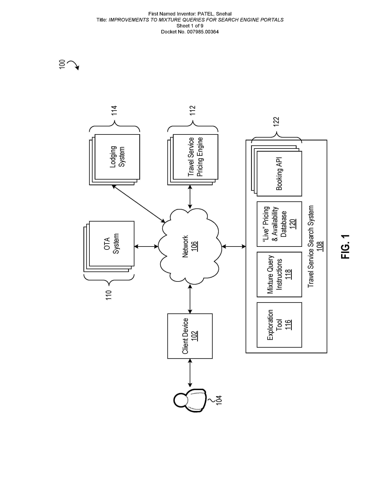
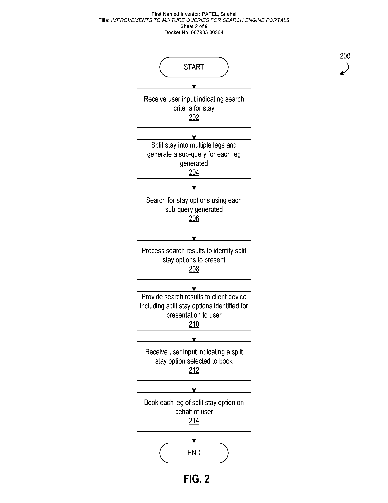
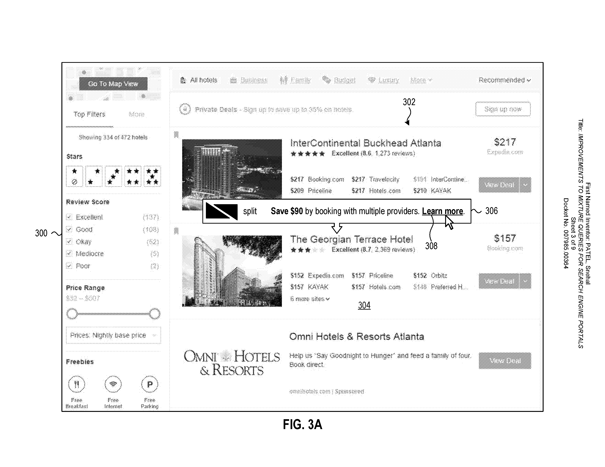
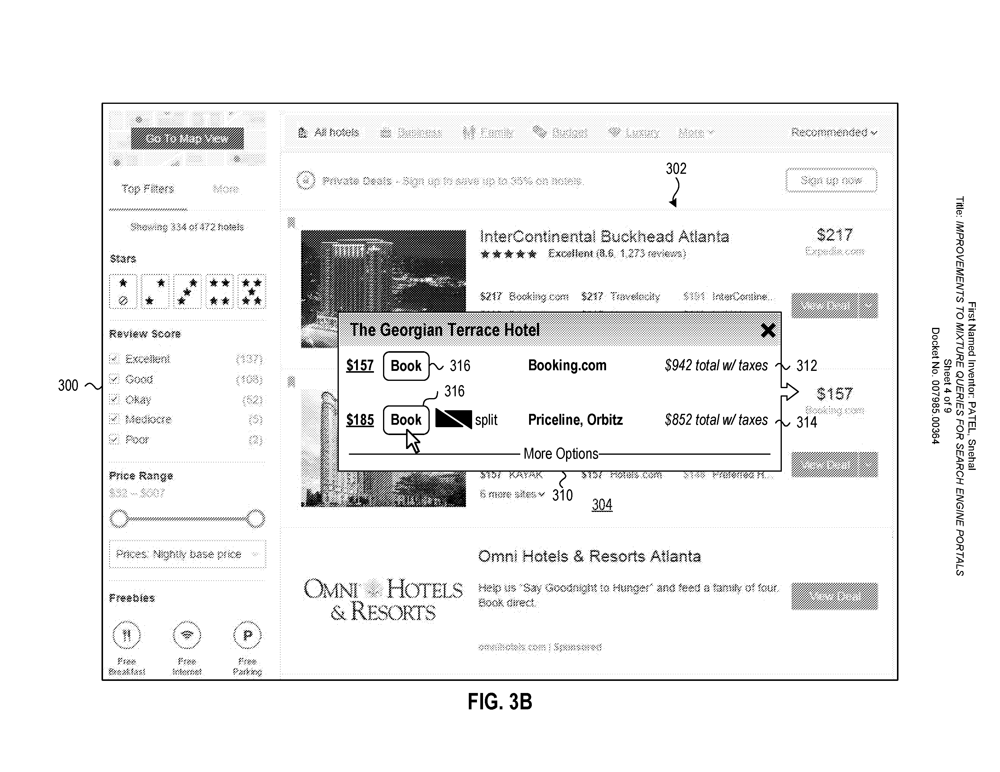
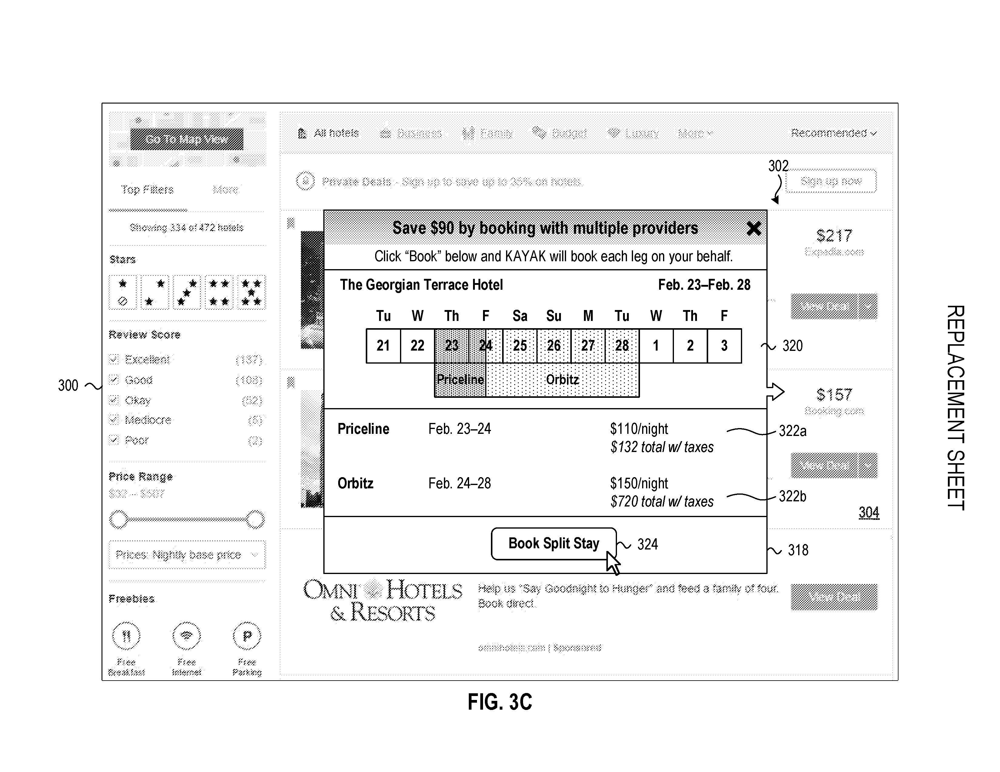
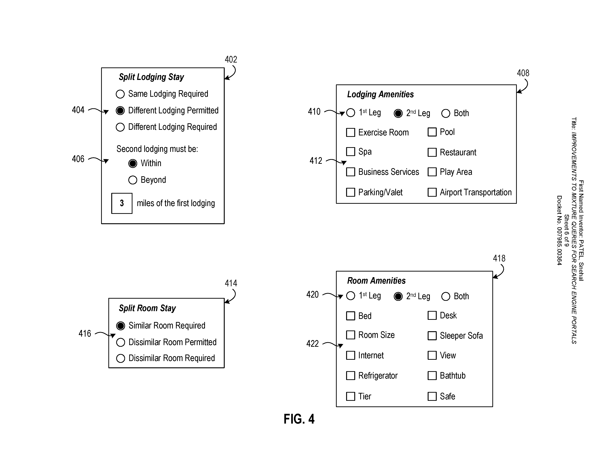
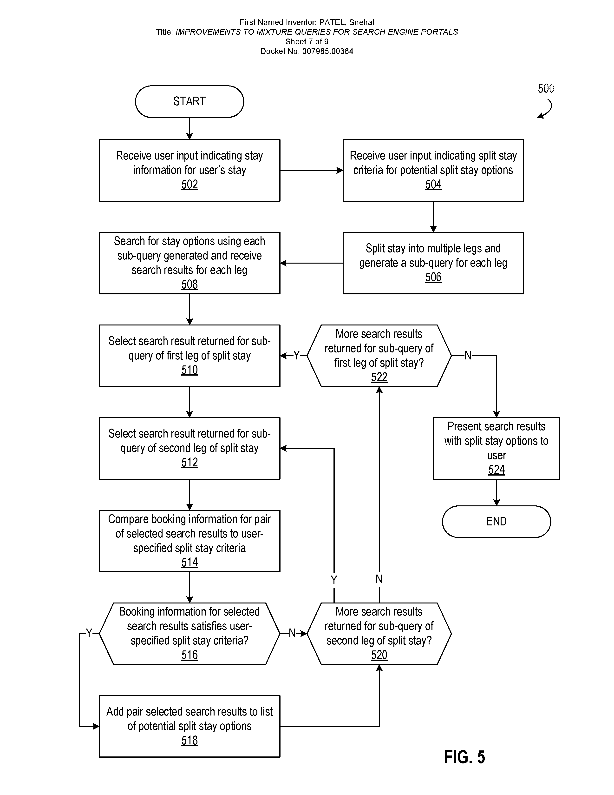
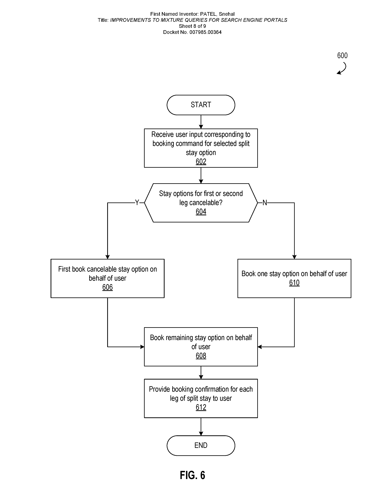
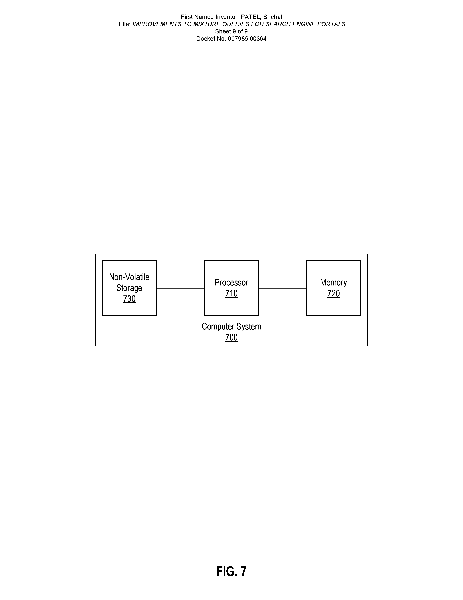

[0001] The disclosures herein are generally directed to database and file access including the retrieval of information stored in a database. Aspects of the disclosures herein are also generally directed to database query processing including executing a request for data by a computerized data processing system as well as distributed search and retrieval including processes that locate and retrieve data from multiple databases located over different locations around a network.
[0002] The disclosures herein are more particularly directed to search engines and search engine portals for searching multiple search engines or online databases. The disclosures herein are also more particularly directed to query statement modification including adapting a query statement from its original form in order to assist in retrieval and execution of search results as well as query expansion including adapting an original query to provide more precision. Aspects of the disclosures herein are further directed to post processing of search results to facilitate more efficient comprehension and presentation of the search results.
[0003] Online lodging search services ("lodging search services") often utilize pricing engines (e.g., ITA, Expedia BFS, Amadeus, etc.), Global Distribution Systems (GDSs), Online Travel Agencies (OTAs), and direct lodging websites (collectively "lodging service providers" or "providers") to obtain hotel options in response to user queries. Many lodging service providers also provide booking services for destination locations. Lodging service providers also may provide lodging availability, prices and booking information independent of or in combination with providing flight information or flight search services. For example, OTAs may be queried or lodging information sources may be directly scraped for pricing/availability and the results may be presented to the user requesting the lodging information. Some travel service providers such as Expedia and Orbitz will negotiate prices for blocks of rooms for a set of predetermined dates from respective lodgings (e.g., hotels) and resell the rooms to users inquiring about lodging pricing/availability using their services. Lodging information may be obtained in other ways to allow for lodging booking online, with or without booking of an associated flight.
[0004] Lodging pricing and availability information is typically derived by lodging search services in three different ways: (1) obtaining the information directly from the respective lodging website (referred to herein as "scraping"); (2) querying a lodging service provider that serves up aggregated lodging pricing and availability; and/or (3) referencing a cache compiled by the lodging service provider. Querying provides the most robust, accurate and up-to date information on lodging availability and pricing. However, querying is not necessarily preferable for every user query for a number of reasons. First, lodging service providers may restrict the frequency of queries and/or limit the volume of queries during a given interval of time. Second, providers often prefer a higher ratio of bookings to queries than may be possible when using queries for every user search. Third, querying increases the time before the user sees search results. At least in some circumstances, this drop in response time may be unacceptable to the user such that the user will choose to either not use the travel service, or switch to a speedier alternative.
[0005] To address drawbacks associated with querying OTAs, a lodging search service may build and maintain a lodging cache that stores information previously obtained from either scraping or querying providers. The lodging cache may be updated by periodically scraping and/or querying providers according to the frequency/volume restrictions that are imposed, thus keeping the lodging cache as up-to-date as is feasible in this respect. Updating the lodging cache may be performed off-line (e.g., cache updates do not need to be performed live in conjunction with user queries) such that the user experience in this respect is not impacted. Because the lodging information stored in the cache is not "live," there is a risk that lodging information may become stale if not updated with sufficient regularity, or the cache may otherwise include old or incorrect information. A variety of measures may be taken to optimize the lodging cache to ensure that the lodging information stored is as accurate and up-to-date as is feasible without compromising the efficiencies for which the cache was developed in the first place. Due to the risks associated with stale data, however, lodging caching might not be a satisfactory approach in circumstances where information needs to be accurate with a high-degree of certainty.
[0006] Conventional lodging search services, in response to a user query (or in connection with a user's flight inquiry) report the best available prices for lodgings for the whole stay of the user. For example, if a traveler is staying in Chicago, Illinois from May 13th through May 17th, lodging search services conventionally return the best price for respective lodgings over the full span of the stay. However, the price returned from a query over the whole stay may not be the least expensive option. A better price might be achieved by searching over smaller time periods within the target stay dates. For example, the cheapest rate returned for the Chicago trip at a particular hotel might be $700/night, but Booking.com offers $500/night for the first part and Orbitz.com offers $400/night for the second part, for a total average price of $450/night. Conventional queries cannot identify this booking and the user loses out on the cost savings of the cheaper booking.
[0007] To address this drawback associated with conventional queries, techniques have been employed that split the query into two or more queries spanning different subsets of the stay, referred to herein as a "mixture query," may result in lower rates for the user. Providers may raise or lower the price of rooms independently of other providers, depending on their particular pricing strategy and the demand for that lodging and date combination that they observe. In addition, lodgings may offer deals for selected (and usually limited) nights and such deals or promotions tend to be variable in nature and often may be relatively short in duration. In some circumstances, the cheapest combination involves different room types from the same or different providers.
[0008] Existing techniques for performing mixture queries have recognized that it cannot be known a priori what the optimal split for a particular stay will be, or if a split booking even exists that would result in a lower price point for the user. One method of addressing this issue is to provide an exhaustive search of all combination of splits. However, doing so may result in a detectable delay for the user in reporting results, as well as an increased number of queries to providers.
[0009] According to some approaches, stay combinations including single nights are eliminated prior to searching. For example, if a user searches for rates in San Francisco, CA from 6/17-6/21, a mixture query may be performed that eliminates combinations of 1 night/4 night splits. Accordingly, in an example where a mixture query for the above stay is limited to splits that contain only two sub-searches, the three possible combinations for this stay after removing 1 night/4 night splits are shown in Table 1 below.
| SUB-QUERY 1 | SUB-QUERY 2 | |
|---|---|---|
| Split 1 | 6/17-6/18 | 6/18-6/21 |
| Split 2 | 6/17-6/19 | 6/19-6/21 |
| Split 3 | 6/17-6/20 | 6/20-6/21 |
TABLE 1
[0010] Any of the combinations may result in a cheaper split stay than a single query for the whole stay of 6/17-6/21. Such a split stay result may be presented to the user to allow the user the option of taking advantage of the cost savings associated with the split stay. It should be appreciated that the mixture query need not be limited to splitting the stay into two subsets as shown in the exemplary mixture query in Table 1, as any number of sub-queries may be performed over any number of subsets of the stay, as the aspects of the disclosures are not limited in this respect.
[0011] Other methods of eliminating at least some of the queries from a mixture query derive from the recognition that the dates of a proposed stay may be intelligently examined to determine optimal split points. For example, lodgings often have rate differences between the weekend and the weekday. Accordingly, if a stay includes a Friday or a Monday, such dates may be flagged as split-points to include in a sub-search for mixture queries where the number of searches is to be reduced from that of an exhaustive search.
[0012] Another method for identifying a potential best split for a given hotel is to examine per night rates, obtained in some cases when querying providers for longer stays. While these do not always dictate the pricing of longer stays, they may be used in some cases to predict split pricing.
[0013] While existing techniques for performing mixture queries and booking split stays provide some advantages over conventional online lodging queries, there is still room for improvement.
[0014] For example, some existing techniques require the user to book each leg of the split stay. This often involves leaving the lodging search engine's website in order to individually book the legs of the split stay using the OTAs' or the lodgings' own websites. Requiring users to book each leg of the split stay themselves is potentially inefficient from an HCI (human-computer interface) perspective and potentially risky with respect to successfully completing the booking process. Leaving the lodging search provider's website might require a user to open multiple tabs in a web browser and navigate between those tabs in order to complete the booking process.
[0015] The HCI challenges mentioned above are exacerbated on mobile devices. The use of mobile computing devices such as tablet computers and smartphones has proliferated with many users relying on mobile computing devices as their primary computing device in favor of traditional desktop or laptop computing devices. Mobile computing devices typically have much more limited screen space as compared to traditional desktop and laptop capabilities.
[0016] Additional technical challenges arise when the user attempts to book a split stay with a mobile computing device. Response time may depend on the quality of the wireless signals exchanged between the mobile computing device and the networks used to connect to the lodging service providers.
[0017] As another example, some existing techniques utilize a cache of historic search data when performing a mixture query search. Here, the cache of historic search data characterizes prior searches conducted by other users including pricing and availability associated with those prior searches. However, current pricing data can differ from pricing data associated with prior searches. In other words, historic pricing data can, and often does, become stale and thus inaccurate with respect to a current search.
[0018] As a further example, some existing techniques are limited in that they only identify potential split stays on the basis of price and in that they do not enable split stays at different hotels. In addition, existing techniques might not take into account differences in room amenities where the user is required to switch rooms between legs of the split stay.
[0019] In view of these challenges and limitations associated with existing techniques for performing mixture queries and processing split bookings, improvements are needed.
[0020] The following presents a simplified summary in order to provide a basic understanding of the disclosures herein. The summary is not an extensive overview of the disclosure.
[0021] The present disclosure describes approaches for improving mixture queries and booking split stays. According to some aspects, a user utilizes an exploration tool to search for available lodging. A mixture query is generated based on the stay information received from the user and potential split stays are identified and presented to the user. In some aspects, the split stays are identified based on user-specified split stay criteria, search results are obtained from a local database of "live" pricing and availability information, and a selected split stay option is booked on behalf of the user.
[0022] Additional aspects associated with improved techniques for performing mixture queries and booking split stays will be appreciated with the benefit of the disclosures set forth in further detail below.
[0023] Some features herein are illustrated by way of example, and not by way of limitation, in the accompanying drawings. In the drawings, like numerals reference similar elements between the drawings.
[0024] FIG. 1 depicts components of an example travel service computer system.
[0025] FIG. 2 depicts a flowchart of example method steps for performing a mixture query and booking a split stay.
[0026] FIG. 3A depicts an example exploration tool implementing one aspect of performing a mixture query and booking a split stay.
[0027] FIG. 3B depicts the example exploration tool implementing another aspect of performing a mixture query and booking a split stay.
[0028] FIG. 3C depicts the example exploration tool implementing another aspect of performing a mixture query and booking a split stay.
[0029] FIG. 4 depicts example control elements that may be employed to perform a mixture search query.
[0030] FIG. 5 depicts a flowchart of example method steps for identifying potential split stays from the search results of a mixture query.
[0031] FIG. 6 depicts a flowchart of example method steps for booking a split stay on behalf of a user.
[0032] FIG. 7 depicts an example computer on which one or more aspects of the disclosures described herein may be implemented.
[0033] To address the technical challenges and limitations discussed above, the disclosures herein describe improvements to performing mixture queries and booking split stays. As discussed in further detail below, such improvements include booking a split stay on behalf of the user, utilizing a database of "live" pricing and availability information, evaluating hotel and/or room amenities when pairing search results for potential split stays, and employing user-selected split stay criteria when identifying potential split stays.
[0034] With respect to booking a split stay on behalf of the user, this ensures the user can complete the booking process without needing to navigate to the individual websites or portals of the lodging service providers. In other words, the user can complete the booking process at the same user interface used to search for stay information.
[0035] First, by booking a selected split stay on behalf of the user, the volume of user input, user commands, and network communications is thereby reduced. Furthermore, the lodging search service utilizes booking APIs (application programming interfaces) in order to book the split stay on behalf of the user, avoiding the need to serve webpages to users corresponding to booking paths.
[0036] Second, by booking a selected split stay on behalf of the user, the usability of the lodging search service as a tool for performing mixture queries and booking split stays is improved from an HCI perspective. Retaining the user at a user interface used to perform both the search and the booking reduces the number of user interfaces the user must interact with.
[0037] Third, booking a selected split stay on behalf of the user enables the booking to be completed relatively more quickly, thereby reducing the possibility that one or more legs of the split stay might become unavailable before each booking can be completed.
[0038] With respect to utilizing a database of "live" pricing and availability information, this provides a more efficient means of identifying potential split bookings that might be presented to a user. This database is associated with a relatively high degree of certainty that the pricing and availability information it contains is current and accurate.
[0039] With respect to evaluating hotel and/or room amenities when identifying potential split stays, this improves the effectiveness of the lodging search service. The improved techniques take into account additional criteria beyond simply pricing (e.g., room amenities) when identifying split stays to present to a user.
[0040] With respect to employing user-selected split stay criteria when identifying potential split stays, this also enhances the functionality of the lodging search service. The improved techniques described herein provide users with greater control over the potential split stays identified during a mixture query through split stay criteria obtained from the user during the search process.
[0041] For the sake of convenience, the following terminology is adopted herein. Search queries include searches for stay information based on search criteria received from a user. Stay information includes information relating to available lodging such as dates, location, pricing, and amenities.
[0042] Turning now to FIG. 1, components of an example travel service computer system 100 is shown. The travel service computer system 100 is a networked system by which a user may obtain, among other travel-related information, lodging search results that meet a user's specified lodging search criteria.
[0043] The travel service computer system 100 includes a client device 102 associated with a user 104. The user's client device 102 may be any network-enabled device configured to access and exchange communications via a network 106.
[0044] The travel service computer system 100 also includes a travel service search system 108 configured to perform lodging search queries on behalf of the user 104. The travel service search system 108 is implemented and operated by a travel search service provider such as Kayak.com.
[0045] To perform a lodging search query on behalf of the user 104, the travel service search system 108 also exchanges communications with various information sources via the network 106, including OTA systems 110, travel service pricing engine systems 112, and individual lodging systems 114.
[0046] The travel search service system 108, in this example, is configured to receive stay criteria from the user 104, perform mixture queries according to the stay criteria received, and book a selected split stay option on behalf of the user, including an exploration tool 116, a set of executable mixture query instructions 118, a "live" pricing and availability database 120, and booking APIs 122.
[0047] The exploration tool 116 provides the functionality that enables a user to search for, view, and select available lodging options. The operation of the exploration tool 116 is at least partially governed by the mixture query instructions 118.
[0048] The stay criteria received from the user may be any type of parameter, requirement, preference, or characteristic related to lodgings that might be acceptable to the user, including location, check-in/check-out dates, price range, star ratings, lodging types, amenities, room types, and room amenities.
[0049] The stay criteria received from the user may also include split stay criteria, such as whether switching rooms/lodgings is prohibited, permissible, or required, location distance thresholds, and specific amenities required.
[0050] To perform mixture queries and book split stays, the travel search service system 108 selectively executes mixture query instructions 118 logically grouped according to the functionality they provide when executed.
[0051] As noted above, splitting the search query into multiple sub-queries involves determining how to split the user-submitted search query by applying intelligence, such as eliminating potential splits or selecting split points along weekday-weekend boundaries.
[0052] With respect to executing the sub-queries, the mixture query instructions 118 may be configured to execute those sub-queries on the "live" pricing and availability database 120 and/or external information sources using search APIs.
[0053] With respect to pairing stay options based on the search results for the sub-queries, the mixture query instructions 118 iterate through stay options and identify pairs satisfying user-specified split stay criteria and rate savings thresholds.
[0054] The mixture query instructions 118 may similarly apply intelligence when pairing stay options, such as hard-coded criteria ensuring bed type consistency across legs.
[0055] In other implementations, the intelligence applied may be based on user-specified split stay criteria requiring same or different lodgings and similar or dissimilar rooms.
[0056] As discussed above, the split stay criteria specified by the user 104 may be granular, specifying specific room and/or lodging amenities/characteristics for one or more legs of potential split stays.
[0057] Additional and alternative examples of the manner in which the mixture query instructions 118 may employ hard-coded and user-specified split stay criteria will be recognized with the benefit of this disclosure.
[0058] As noted above, the travel search service system 108 may include a "live" pricing and availability database 120 which may be used to obtain stay options in response to a search query from the user 104 with a high degree of accuracy (e.g., accurate to within 3-4% margin of error).
[0059] To implement the "live" pricing and availability database 120, the travel search service system 108 may employ priming techniques, executing priming queries during off-peak hours to provide up-to-date booking information without disrupting users.
[0060] As noted above, the travel search service system 108 includes various booking APIs 122 in order to book a split stay on behalf of the user 104, formatting booking requests using XML and transmitting via HTTP.
[0061] Referring now to FIG. 2, a flowchart 200 of example method steps 202-214 for performing a mixture query and booking a split stay is shown, starting when criteria are received and ending when bookings are executed on behalf of the user.
[0062] FIGS. 3A-C depict an example of an exploration tool 300 configured to search for lodging options and book split stays via a web browser application.
[0063] Referring now to FIG. 3A, the exploration tool 300 presents lodging search results 302, notifying the user of available split stay savings via display element 306.
[0064] In FIG. 3B, the exploration tool 300 presents details about available full stay and split stay options via display element 310.
[0065] In FIG. 3C, the exploration tool 300 presents details and a visual timeline representation 320 of a selected split stay option, initiating automated booking upon user confirmation.
[0066] Turning now to FIG. 4, various user interface elements used to specify split stay criteria in sidebars or collapsible menus are shown.
[0067] User interface elements allow specifying general lodging criteria 402, specific lodging criteria 408, general room criteria 414, and specific room criteria 418.
[0068] Turning now to FIG. 5, a flowchart 500 of example method steps for identifying potential split stays from mixture query search results is shown.
[0069] Having received stay information and criteria, the travel search service system splits the stay and executes sub-queries across multiple information sources.
[0070] The travel search service system iteratively evaluates search results, comparing pairs against split stay criteria and adding matching pairs to a list of potential options.
[0071] Non-satisfying pairs are discarded, and evaluation loops through remaining leg results before presenting the final list to the user.
[0072] The steps illustrated in FIG. 5 are provided by way of example; alternative filtering and combination approaches may be selectively employed.
[0073] Referring now to FIG. 6, a flowchart 600 of example method steps for booking a split stay on behalf of a user is shown, prioritizing cancelable options first to protect against booking failures.
[0074] The process begins upon receiving a booking command, evaluating cancelability, executing bookings sequentially, and issuing confirmation messages.
[0075] In addition to booking, the system handles cancellations and modifications of booked split stays via dedicated APIs and control elements.
[0076] The modification process obtains desired updates, checks availability, and submits modification requests across multiple legs efficiently.
[0077] If requested modifications are unavailable, the system informs the user or offers cancel-and-rebook alternatives.
[0078] Cancellation requests are similarly automated across multiple legs simultaneously to minimize user losses.
[0079] Split stay options may also be upsold to users reviewing full stay selections by highlighting cost savings or superior amenities.
[0080] The system may also automatically modify or rebook split stays when better pricing or luxury room options become available within user-specified rebooking criteria.
[0081] Rebooking processes run during off-peak hours, iterating over booked trips and notifying users upon successful adjustments.
[0082] Any of the techniques described in the foregoing may be used alone or in any combination.
[0083] The embodiments of the present invention can be implemented using hardware, software, or a combination thereof.
[0084] Components of the systems described herein may be implemented using a single computer or distributed across multiple computers or servers.
[0085] A computer may be embodied in any of numerous forms, including rack-mounted, desktop, laptop, or tablet computers.
[0086] Computers may include various input and output devices for presenting user interfaces.
[0087] Computers may be interconnected by one or more networks in any suitable form, including LANs or WANs.
[0088] An illustrative computer system 700 implementation includes processors 710, memory 720, and non-volatile storage media 730.
[0089] The methods and processes outlined herein may be coded as software executable on one or more processors across operating systems.
[0090] Various inventive concepts may be embodied as at least one computer-readable storage medium encoded with programs.
[0091] The terms "program" or "software" refer to any type of computer code or set of instructions.
[0092] Computer-executable instructions may be in many forms, such as program modules executed by devices.
[0093] Data structures may be stored in non-transitory computer-readable storage media using pointers, tags, or location relationships.
[0094] Inventive concepts may be embodied as methods with acts performed in suitable orders.
[0095] The indefinite articles "a" and "an" mean "at least one."
[0096] The phrase "at least one" in reference to a list means at least one element selected from the list.
[0097] The phrase "and/or" means "either or both" of conjoined elements.
[0098] The term "or" is inclusive unless indicated otherwise.
[0099] Ordinal terms such as "first" and "second" are used merely as labels to distinguish elements.
[0100] The phraseology and terminology used herein is for description and should not be regarded as limiting.
What is claimed is:
1. A computer-implemented method of identifying split stays comprising: receiving, by a first computing device from a second computing device operated by a user, user-specified stay information and at least one user-specified split stay criterion; determining, by the first computing device, a split stay based on the user-specified stay information; generating, by the first computing device, a mixture query for the split stay using the user-specified stay information wherein the mixture query comprises a first sub-query for a first leg of the split stay and a second sub-query for a second leg of the split stay; obtaining, by the first computing device, a first set of search results for the first sub-query and a second set of search results for the second sub-query; determining, by the first computing device, a split stay option based at least in part on the user-specified split stay criterion wherein the split stay option comprises a first stay option from the first set of search results and a second stay option from the second set of search results; and providing, by the first computing device, the split stay option to the second computing device for presentation to the user.
2. The computer-implemented method of claim 1, further comprising: booking, by the first computing device, the split stay option on behalf of the user.
3. The computer-implemented method of claim 2, wherein: the first stay option is a cancelable stay option and the second stay option is a non-cancelable stay option; and booking the split stay option on behalf of the user comprises booking the cancelable stay option prior to booking the non-cancelable stay option.
4. The computer-implemented method of claim 1, further comprising: subsequent to booking the split stay option on behalf of the user, determining, by the first computing device, that an alternative stay option satisfies a rebooking criterion, and responsive to determining that the alternative stay option satisfies the rebooking criterion: canceling, by the first computing device, either the first stay option booked for the split stay option or the second stay option booked for the split stay option, and booking, by the first computing device, the alternative stay option on behalf of the user.
5. The computer-implemented method of claim 1, wherein: determining the split stay option comprises determining the split stay option further based on a predetermined split stay criterion.
6. The computer-implemented method of claim 5, wherein: the predetermined split stay criterion is a room amenity or a room characteristic.
7. The computer-implemented method of claim 1, wherein: obtaining the first set of search results and the second set of search results comprises querying a data store storing room pricing information and room availability information with the mixture query; wherein the data store is located locally relative to the first computing device.
8. A system for identifying split stays comprising: one or more processors; and a network interface in signal communication with a computing device operated by a user; memory storing instructions that, when executed by the one or more processors, cause the system to: receive, via the network interface from the computing device, user-specified stay information and at least one user-specified split stay criterion; determine a split stay based on the user-specified stay information; generate a mixture query for the split stay using the user-specified stay information wherein the mixture query comprises a first sub-query for a first leg of the split stay and a second sub-query for a second leg of the split stay; obtain a first set of search results for the first sub-query and a second set of search results for the second sub-query; determine a split stay option based at least in part on the user-specified split stay criterion wherein the split stay option comprises a first stay option from the first set of search results and a second stay option from the second set of search results; and provide, via the network interface, the split stay option to the computing device for presentation to the user.
9. The system of claim 8, wherein: the instructions, when executed, further cause the system to book the split stay option on behalf of the user.
10. The system of claim 9, wherein: the first stay option is a cancelable stay option and the second stay option is a non-cancelable stay option; and the instructions, when executed, further cause the system to book the split stay option on behalf of the user by booking the cancelable stay option prior to booking the non-cancelable stay option.
11. The system of claim 9, wherein: the instructions, when executed, further cause the system to, subsequent to booking the split stay option on behalf of the user: determine that an alternative stay option satisfies a rebooking criterion, and responsive to determining that the alternative stay option satisfies the rebooking criterion: cancel either the first stay option booked for the split stay option or the second stay option booked for the split stay option, and book the alternative stay option on behalf of the user.
12. The system of claim 8, wherein: the instructions, when executed, further cause the system to determine the split stay option further based on a predetermined split stay criterion.
13. The system of claim 8, further comprising: a data store storing room pricing information and room availability information; and wherein the instructions, when executed, further cause the system to obtain the first set of search results and the second set of search results by querying the data store with the mixture query.
14. The system of claim 8, wherein: the instructions, when executed, further cause the system to provide, via the network interface, split stay criteria to the computing device for presentation to the user; wherein the split stay criteria comprises at least one room amenity criterion, at least one room characteristic criterion, at least one lodging amenity criterion, at least one lodging characteristic criterion.
15. Non-transitory computer-readable media having computer-executable instructions stored thereon that, when executed by a processor of a computing device, cause the computing device to: receiving, via a network interface of the computing device from a user-operated computing device, user-specified stay information and at least one user-specified split stay criterion; determine a split stay based on the user-specified stay information; generate a mixture query for the split stay using the user-specified stay information wherein the mixture query comprises a first sub-query for a first leg of the split stay and a second sub-query for a second leg of the split stay; obtain a first set of search results for the first sub-query and a second set of search results for the second sub-query; determine a split stay option based at least in part on the user-specified split stay criterion wherein the split stay option comprises a first stay option from the first set of search results and a second stay option from the second set of search results; and provide, via the network interface, the split stay option to the user-operated computing device for presentation to the user.
16. The non-transitory computer-readable media of claim 15, wherein the computer-executable instructions, when executed, further cause the computing device to: book the split stay option on behalf of the user.
17. The non-transitory computer-readable media of claim 16, wherein: the first stay option is a cancelable stay option and the second stay option is a non-cancelable stay option; and the computer-executable instructions, when executed, further cause the computing device to book the split stay option on behalf of the user by booking the cancelable stay option prior to booking the non-cancelable stay option.
18. The non-transitory computer-readable media of claim 16, wherein the computer-executable instructions, when executed, further cause the computing device to, subsequent to booking the split stay option on behalf of the user: determine that an alternative stay option satisfies a rebooking criterion, and responsive to determining that the alternative stay option satisfies the rebooking criterion: cancel either the first stay option booked for the split stay option or the second stay option booked for the split stay option, and book the alternative stay option on behalf of the user.
19. The non-transitory computer-readable media of claim 15, wherein the computer-executable instructions, when executed, further cause the computing device to: determine the split stay option further based on a predetermined split stay criterion that is satisfied when a first bed type associated with the first stay option is the same as a second bed type associated with the second stay option.
20. The non-transitory computer-readable media of claim 15, wherein the computer-executable instructions, when executed, further cause the computing device to: obtain the first set of search results and the second set of search results by querying a data store storing room pricing information and room availability information with the mixture query; wherein the data store is located locally relative to the computing device.
U.S. PATENT APPLICATION
ATTORNEY DOCKET No.: 007985.00364
ABSTRACT
Approaches to improving mixture queries and booking split stays are described herein.
According to some aspects, a user utilizes an exploration tool to search for available lodging. A mixture query is generated based on the stay information received from the user and potential split stays are identified and presented to the user. In some aspects, the split stays are identified based on user-specified split stay criteria, search results are obtained from a local database of "live" pricing and availability information, and a selected split stay option is booked on behalf of the user. Example split stay criteria includes criteria pertaining to an amenity or characteristic of the available lodgings or the available rooms.
48 of 48
UNITED STATES PATENT AND TRADEMARK OFFICE
APPLICATION NUMBER: 15/595,438
FIRST NAMED APPLICANT: Snehal Patel
ATTY. DOCKET NO./TITLE: 007985.00364\US
CONFIRMATION NO.: 9568
FILING OR 371(C) DATE: 05/15/2017
FORMALITIES LETTER
Date Mailed: 05/24/2017
NOTICE TO FILE CORRECTED APPLICATION PAPERS
Filing Date Granted: An application number and filing date have been accorded to this application. The application is informal since it does not comply with the regulations for the reason(s) indicated below. Applicant is given TWO MONTHS from the date of this Notice within which to correct the informalities indicated below. Extensions of time may be obtained by filing a petition accompanied by the extension fee under the provisions of 37 CFR 1.136(a).
The required item(s) identified below must be timely submitted to avoid abandonment:
• Replacement drawings in compliance with 37 CFR 1.84 and 37 CFR 1.121(d) are required. The drawings submitted are not acceptable because:
• More than one figure is present and each figure is not labeled "Fig." with a consecutive Arabic numeral (1, 2, etc.) or an Arabic numeral and capital letter in the English alphabet (A, B, etc.) (see 37 CFR 1.84(u)(1)). See Figure(s) 3C. A brief description of the several views of the drawings (see 37 CFR 1.74) should be added or amended to correspond to the corrected numbering of the figures. See also 37 CFR 1.77(b)(9).
Applicant is cautioned that correction of the above items may cause the specification and drawings page count to exceed 100 pages. If the specification and drawings exceed 100 pages, applicant will need to submit the required application size fee.
page 1 of 2
Replies must be received in the USPTO within the set time period or must include a proper Certificate of Mailing or Transmission under 37 CFR 1.8 with a mailing or transmission date within the set time period. For more information and a suggested format, see Form PTO/SB/92 and MPEP 512.
Replies should be mailed to: Mail Stop Missing Parts, Commissioner for Patents, P.O. Box 1450, Alexandria VA 22313-1450
Registered users of EFS-Web may alternatively submit their reply to this notice via EFS-Web, including a copy of this Notice and selecting the document description "Applicant response to Pre-Exam Formalities Notice". https://sportal.uspto.gov/authenticate/AuthenticateUserLocalEPF.html
For more information about EFS-Web please call the USPTO Electronic Business Center at 1-866-217-9197 or visit our website at http://www.uspto.gov/ebc.
If you are not using EFS-Web to submit your reply, you must include a copy of this notice.
Questions about the contents of this notice and the requirements it sets forth should be directed to the Office of Data Management, Application Assistance Unit, at (571) 272-4000 or (571) 272-4200 or 1-888-786-0101.
/fstephanos/
page 2 of 2
UNITED STATES PATENT AND TRADEMARK OFFICE
APPLICATION NUMBER: 15/595,438
FIRST NAMED APPLICANT: Snehal Patel
ATTY. DOCKET NO./TITLE: 007985.00364
CONFIRMATION NO.: 9568
FILING OR 371(C) DATE: 05/15/2017
PUBLICATION NOTICE
Title: MIXTURE QUERIES FOR SEARCH ENGINE PORTALS
Publication No. US-2018-0330283-A1
Publication Date: 11/15/2018
NOTICE OF PUBLICATION OF APPLICATION
The above-identified application will be electronically published as a patent application publication pursuant to 37 CFR 1.211, et seq. The patent application publication number and publication date are set forth above.
The publication may be accessed through the USPTO's publically available Searchable Databases via the Internet at www.uspto.gov. The direct link to access the publication is currently http://www.uspto.gov/patft/.
The publication process established by the Office does not provide for mailing a copy of the publication to applicant. A copy of the publication may be obtained from the Office upon payment of the appropriate fee set forth in 37 CFR 1.19(a)(1). Orders for copies of patent application publications are handled by the USPTO's Public Records Division. The Public Records Division can be reached by telephone at (571) 272-3150 or (800) 972-6382, by facsimile at (571) 273-3250, by mail addressed to the United States Patent and Trademark Office, Public Records Division, Alexandria, VA 22313-1450 or via the Internet.
In addition, information on the status of the application, including the mailing date of Office actions and the dates of receipt of correspondence filed in the Office, may also be accessed via the Internet through the Patent Electronic Business Center at www.uspto.gov using the public side of the Patent Application Information and Retrieval (PAIR) system. The direct link to access this status information is currently https://portal.uspto.gov/pair/PublicPair. Prior to publication, such status information is confidential and may only be obtained by applicant using the private side of PAIR.
Further assistance in electronically accessing the publication, or about PAIR, is available by calling the Patent Electronic Business Center at 1-866-217-9197.
Office of Data Managment, Application Assistance Unit (571) 272-4000, or (571) 272-4200, or 1-888-786-0101
page 1 of 1
UNITED STATES PATENT AND TRADEMARK OFFICE
UNITED STATES DEPARTMENT OF COMMERCE
United States Patent and Trademark Office
Address: COMMISSIONER FOR PATENTS, P.O. Box 1450, Alexandria, Virginia 22313-1450
www.uspto.gov
APPLICATION NO. 15/595,438 | FILING DATE 05/15/2017 | FIRST NAMED INVENTOR Snehal Patel | ATTORNEY DOCKET NO. 007985.00364 | CONFIRMATION NO. 9568
22908 7590 06/28/2019
BANNER & WITCOFF, LTD., 71 SOUTH WACKER DRIVE, SUITE 3600, CHICAGO, IL 60606
ART UNIT 3628 | EXAMINER JOSEPH, TONYA S | NOTIFICATION DATE 06/28/2019 | DELIVERY MODE ELECTRONIC
Please find below and/or attached an Office communication concerning this application or proceeding.
The time period for reply, if any, is set in the attached communication.
Notice of the Office communication was sent electronically on above-indicated "Notification Date" to the following e-mail address(es): eofficeaction@bannerwitcoff.com
PTOL-90A (Rev. 04/07)
Application No. 15/595,438 | Applicant(s) Patel et al.
Office Action Summary | Examiner TONYA S JOSEPH | Art Unit 3628 | AIA (FITF) Status Yes
-- The MAILING DATE of this communication appears on the cover sheet with the correspondence address --
Period for Reply
A SHORTENED STATUTORY PERIOD FOR REPLY IS SET TO EXPIRE 3 MONTHS FROM THE MAILING DATE OF THIS COMMUNICATION.
Extensions of time may be available under the provisions of 37 CFR 1.136(a). In no event, however, may a reply be timely filed after SIX (6) MONTHS from the mailing date of this communication.
If NO period for reply is specified above, the maximum statutory period will apply and will expire SIX (6) MONTHS from the mailing date of this communication.
Failure to reply within the set or extended period for reply will, by statute, cause the application to become ABANDONED (35 U.S.C. § 133).
Any reply received by the Office later than three months after the mailing date of this communication, even if timely filed, may reduce any earned patent term adjustment. See 37 CFR 1.704(b).
Status
[ ] 1) Responsive to communication(s) filed on .
[ ] A declaration(s)/affidavit(s) under 37 CFR 1.130(b) was/were filed on .
[ ] 2a) This action is FINAL.
[X] 2b) This action is non-final.
[ ] 3) An election was made by the applicant in response to a restriction requirement set forth during the interview on ; the restriction requirement and election have been incorporated into this action.
[ ] 4) Since this application is in condition for allowance except for formal matters, prosecution as to the merits is closed in accordance with the practice under Ex parte Quayle, 1935 C.D. 11, 453 O.G. 213.
Disposition of Claims
[X] 5) Claim(s) 1-20 is/are pending in the application.
[ ] 5a) Of the above claim(s) is/are withdrawn from consideration.
[ ] 6) Claim(s) is/are allowed.
[X] 7) Claim(s) 1-20 is/are rejected.
[ ] 8) Claim(s) is/are objected to.
[ ] 9) Claim(s) are subject to restriction and/or election requirement
Application Papers
[ ] 10) The specification is objected to by the Examiner.
[ ] 11) The drawing(s) filed on is/are: a) [ ] accepted or b) [ ] objected to by the Examiner.
Priority under 35 U.S.C. § 119
[ ] 12) Acknowledgment is made of a claim for foreign priority under 35 U.S.C. § 119(a)-(d) or (f).
Attachment(s)
[X] 1) Notice of References Cited (PTO-892)
[X] 2) Information Disclosure Statement(s) (PTO/SB/08a and/or PTO/SB/08b)
[ ] 3) Interview Summary (PTO-413)
[ ] 4) Other:
U.S. Patent and Trademark Office | PTOL-326 (Rev. 11-13) | Office Action Summary | Part of Paper No./Mail Date 20190203
Application/Control Number: 15/595,438 | Art Unit: 3628
DETAILED ACTION
Notice of Pre-AIA or AIA Status
The present application, filed on or after March 16, 2013, is being examined under the first inventor to file provisions of the AIA.
1. Claim Rejections - 35 USC § 101
35 U.S.C. 101 reads as follows: Whoever invents or discovers any new and useful process, machine, manufacture, or composition of matter, or any new and useful improvement thereof, may obtain a patent therefor, subject to the conditions and requirements of this title.
Claims 1-20 are rejected under 35 U.S.C. 101 because the claimed invention is directed to non-statutory subject matter because the claimed invention is directed to a judicial exception (i.e., a law of nature, a natural phenomenon, or an abstract idea) without significantly more.
The claims recite receiving, determining, generating, obtaining, and providing limitations, which falls into the abstract idea groupings of (b) Certain Methods Of Organizing Human Activity ** fundamental economic principles or practices (including hedging, insurance, mitigating risk) commercial or legal interactions (including agreements in the form of contracts; legal obligations; advertising, marketing or sales activities or behaviors; business relations) managing personal behavior or relationships or interactions between people (including social activities, teaching, and following rules or instructions)** and (c) mental processes-concepts performed in the human mind- (including an observation, evaluation, judgment, opinion).
The limitations receiving, determining, generating, obtaining, and providing under their broadest reasonable interpretation, covers performance of the limitation in the mind, but for the recitation of generic computer components. That is, other than recited, computing devices, processors and memory", nothing in the claim element precludes the step from practically being performed in the mind. [If a claim limitation, under its broadest reasonable interpretation, covers performance of the limitation in the mind but for the recitation of generic computer components, then it falls within the "mental processes" grouping of abstract ideas.] Accordingly the claims recite an abstract idea.
The recited limitations are not indicative of integration into a practical application. In particular, the claims only recite the following additional elements, computing devices, processors and memory",. These additional elements are recited at a high-level of generality such that in conjunction with the abstract limitations, they amount to no more than mere instructions to apply the exception using a generic computer component.
The claims do not include additional elements individually or in an ordered combination that are sufficient to amount to significantly more than the judicial exception. As discussed above with respect to integration of the abstract idea into a practical application, the additional elements amount to no more than [mere instructions to apply the exception using a generic computer component]. Mere instructions to apply an exception using a generic component cannot provide an inventive concept. Claims 7 and 13 describe a data store but this element does not remedy the deficiencies. The remaining dependent claims merely limit the abstract idea. Accordingly the claims 1-20 are not patent eligible.
2. Claim Rejections - 35 USC § 102
The following is a quotation of the appropriate paragraphs of 35 U.S.C. 102 that form the basis for the rejections under this section made in this Office action:
A person shall be entitled to a patent unless -
(a)(2) the claimed invention was described in a patent issued under section 151, or in an application for patent published or deemed published under section 122(b), in which the patent or application, as the case may be, names another inventor and was effectively filed before the effective filing date of the claimed invention.
3. Claims 1-3, 5-10, 12-17 and 19-20 are rejected under 35 U.S.C. 102(a) (2) as being anticipated by Shust U.S. Pre-Grant Publication No. 2018/0012161 A1
4. As per Claims 1, 8, 13 and 15, Shust teaches receiving, by a first computing device from a second computing device operated by a user(see para. 121), user-specified stay information and at least one user-specified split stay criterion (see para. 17); determining, by the first computing device, a split stay based on the user-specified stay information (see para. 17 and 21); generating, by the first computing device, a mixture query for the split stay using the user-specified stay information wherein the mixture query comprises a first sub-query for a first leg of the split stay and a second sub-query for a second leg of the split stay (see para. 17 and 21); obtaining, by the first computing device, a first set of search results for the first sub-query and a second set of search results for the second sub-query (see para. 116); determining, by the first computing device, a split stay option based at least in part on the user-specified split stay criterion wherein the split stay option comprises a first stay option from the first set of search results and a second stay option from the second set of search results (see para. 17 and 116); and providing, by the first computing device, the split stay option to the second computing device for presentation to the user (see para. 112 and 136).
5. As per Claims 2, 9 and 16, Shust teaches the method of claim 1 as described above. Shust further teaches booking, by the first computing device, the split stay option on behalf of the user (see para. 138-139).
6. As per Claims 3, 10 and 17, Shust teaches the method of claim 2 as described above. Shust further teaches wherein: the first stay option is a cancelable stay option and the second stay option is a non-cancelable stay option (see para. 55); and booking the split stay option on behalf of the user comprises booking the cancelable stay option prior to booking the non-cancelable stay option (see para. 55).
7. As per Claims 5, 12 and 19, Shust teaches the method of claim 1 as described above. Shust further teaches determining the split stay option comprises determining the split stay option further based on a predetermined split stay criterion (see para. 15 and 105).
8. As per Claims 6 and 14, Shust teaches the method of claim 5 as described above. Shust further teaches the predetermined split stay criterion is a room amenity or a room characteristic (see para. 105).
9. As per Claims 7 and 20, Shust teaches the method of claim 5 as described above. Shust further teaches obtaining the first set of search results and the second set of search results comprises querying a data store storing room pricing information and room availability information with the mixture query (see para. 109); wherein the data store is located locally relative to the first computing device (see para. 109).
Claim Rejections - 35 USC § 103
10. The following is a quotation of 35 U.S.C. 103 which forms the basis for all obviousness rejections set forth in this Office action:
A patent for a claimed invention may not be obtained, notwithstanding that the claimed invention is not identically disclosed as set forth in section 102, if the differences between the claimed invention and the prior art are such that the claimed invention as a whole would have been obvious before the effective filing date of the claimed invention to a person having ordinary skill in the art to which the claimed invention pertains. Patentability shall not be negated by the manner in which the invention was made.
11. Claims 4, 11 and 18 are rejected under 35 U.S.C. 103 as being unpatentable over Shust U.S. Pre-Grant Publication No. 2018/0012161 A1 in view of Tussy U.S. Pre-Grant Publication No. 2009/0030743 A1
12. As per Claims 4, 11 and 18, Shust teaches the method of claim 1 as described above. Shust does not explicilty teach the limitation taught by Tussy subsequent to booking the stay option, determining, by the first computing device, that an alternative stay option satisfies a rebooking criterion (see para. 100), and responsive to determining that the alternative stay option satisfies the rebooking criterion (see para. 100): canceling, by the first computing device, either the first stay or the second stay option (see para. 100), and booking, by the first computing device, the alternative stay option on behalf of the user (see para. 100). It would have been prima facie obvious to one of ordinary skill in the art at the time the invention was filed to modify the method of Shust to include the teachings of Tussy to allow a user to get the lowest possibly rate, as suggested by the cited portion of Tussy. Shust teaches split stay options.
Conclusion
13. Any inquiry concerning this communication or earlier communications from the examiner should be directed to TONYA S JOSEPH whose telephone number is (571)270-1361. The examiner can normally be reached on M-F 6:30-2:30, First Fridays Off.
Examiner interviews are available via telephone, in-person, and video conferencing using a USPTO supplied web-based collaboration tool. To schedule an interview, applicant is encouraged to use the USPTO Automated Interview Request (AIR) at http://www.uspto.gov/interviewpractice.
If attempts to reach the examiner by telephone are unsuccessful, the examiner's supervisor, Shannon Campbell can be reached on (571) 272-5587. The fax phone number for the organization where this application or proceeding is assigned is 571-273-8300.
Information regarding the status of an application may be obtained from the Patent Application Information Retrieval (PAIR) system. Status information for published applications may be obtained from either Private PAIR or Public PAIR. Status information for unpublished applications is available through Private PAIR only. For more information about the PAIR system, see http://pair-direct.uspto.gov. Should you have questions on access to the Private PAIR system, contact the Electronic Business Center (EBC) at 866-217-9197 (toll-free). If you would like assistance from a USPTO Customer Service Representative or access to the automated information system, call 800-786-9199 (IN USA OR CANADA) or 571-272-1000.
/TONYA JOSEPH/
Primary Examiner, Art Unit 3628
Notice of References Cited
Application/Control No.: 15/595,438
Applicant(s)/Patent Under Reexamination: Patel et al.
Examiner: TONYA S JOSEPH
Art Unit: 3628
Page 1 of 1
U.S. PATENT DOCUMENTS
Document Number Country Code-Number-Kind Code: US-20180012161-A1 | Date MM-YYYY: 01-2018 | Name: SHUST; Eran | CPC Classification: G06Q10/02 | US Classification: 1/1
Document Number Country Code-Number-Kind Code: US-20090030743-A1 | Date MM-YYYY: 01-2009 | Name: Tussy; Kevin Alan | CPC Classification: G06Q10/02 | US Classification: 705/5
FOREIGN PATENT DOCUMENTS
(None listed)
NON-PATENT DOCUMENTS
(None listed)
* A copy of this reference is not being furnished with this Office action. (See MPEP § 707.05(a).)
Dates in MM-YYYY format are publication dates. Classifications may be US or foreign.
U.S. Patent and Trademark Office | PTO-892 (Rev. 01-2001)
Notice of References Cited | Part of Paper No. 20190203
Doc code: IDS
PTO/SB/08a (03-15)
Approved for use through 07/31/2016. OMB 0651-0031
U.S. Patent and Trademark Office; U.S. DEPARTMENT OF COMMERCE
Under the Paperwork Reduction Act of 1995, no persons are required to respond to a collection of information unless it contains a valid OMB control number.
Doc description: Information Disclosure Statement (IDS) Filed
INFORMATION DISCLOSURE STATEMENT BY APPLICANT (Not for submission under 37 CFR 1.99)
Application Number: [Blank] | Filing Date: [Blank]
First Named Inventor: Snehal Patel
Art Unit: N/A | Examiner Name: Not Yet Assigned | Attorney Docket Number: 007985.00364\US
U.S. PATENTS
Examiner Initial* | Cite No | Patent Number | Kind Code1 | Issue Date | Name of Patentee or Applicant of cited Document | Pages, Columns, Lines where Relevant Passages or Relevant Figures Appear
[Blank] | 1 | [Blank] | [Blank] | [Blank] | [Blank] | [Blank]
If you wish to add additional U.S. Patent citation information please click the Add button.
U.S. PATENT APPLICATION PUBLICATIONS
Examiner Initial* | Cite No | Publication Number | Kind Code1 | Publication Date | Name of Patentee or Applicant of cited Document | Pages, Columns, Lines where Relevant Passages or Relevant Figures Appear
[Blank] | 1 | [Blank] | [Blank] | [Blank] | [Blank] | [Blank]
If you wish to add additional U.S. Published Application citation information please click the Add button.
FOREIGN PATENT DOCUMENTS
Examiner Initial* | Cite No | Foreign Document Number3 | Country Code2j | Kind Code4 | Publication Date | Name of Patentee or Applicant of cited Document | Pages, Columns, Lines where Relevant Passages or Relevant Figures Appear | T5
[Blank] | 1 | [Blank] | [Blank] | [Blank] | [Blank] | [Blank] | [Blank] | [Unchecked]
If you wish to add additional Foreign Patent Document citation information please click the Add button
NON-PATENT LITERATURE DOCUMENTS
Examiner Initials* | Cite No | Include name of the author (in CAPITAL LETTERS), title of the article (when appropriate), title of the item (book, magazine, journal, serial, symposium, catalog, etc), date, pages(s), volume-issue number(s), publisher, city and/or country where published. | T5
[Blank] | 1 | Splitty. Home Page. Retrieved from [https://www.splittytravel.com/] on April 6, 2017. | [Unchecked]
[Blank] | 2 | Splitty. "Frequently Asked Questions." Retrieved from [https://www.splittytravel.com/frequently-asked-questions] on April 6, 2017. | [Unchecked]
If you wish to add additional non-patent literature document citation information please click the Add button
EXAMINER SIGNATURE
Examiner Signature: [Blank] | Date Considered: [Blank]
*EXAMINER: Initial if reference considered, whether or not citation is in conformance with MPEP 609. Draw line through a citation if not in conformance and not considered. Include copy of this form with next communication to applicant.
1 See Kind Codes of USPTO Patent Documents at www.USPTO.GOV or MPEP 901.04. 2 Enter office that issued the document, by the two-letter code (WIPO Standard ST.3). 3 For Japanese patent documents, the indication of the year of the reign of the Emperor must precede the serial number of the patent document. 4 Kind of document by the appropriate symbols as indicated on the document under WIPO Standard ST.16 if possible. 5 Applicant is to place a check mark here if English language translation is attached.
EFS Web 2.1.17
CERTIFICATION STATEMENT
Please see 37 CFR 1.97 and 1.98 to make the appropriate selection(s):
[ ] That each item of information contained in the information disclosure statement was first cited in any communication from a foreign patent office in a counterpart foreign application not more than three months prior to the filing of the information disclosure statement. See 37 CFR 1.97(e)(1).
OR
[ ] That no item of information contained in the information disclosure statement was cited in a communication from a foreign patent office in a counterpart foreign application, and, to the knowledge of the person signing the certification after making reasonable inquiry, no item of information contained in the information disclosure statement was known to any individual designated in 37 CFR 1.56(c) more than three months prior to the filing of the information disclosure statement. See 37 CFR 1.97(e)(2).
[ ] See attached certification statement.
[ ] The fee set forth in 37 CFR 1.17 (p) has been submitted herewith.
[X] A certification statement is not submitted herewith.
SIGNATURE
A signature of the applicant or representative is required in accordance with CFR 1.33, 10.18. Please see CFR 1.4(d) for the form of the signature.
Signature: /Brian Emfinger/ | Date (YYYY-MM-DD): 2017-05-15
Name/Print: Brian Emfinger | Registration Number: 64,670
This collection of information is required by 37 CFR 1.97 and 1.98. The information is required to obtain or retain a benefit by the public which is to file (and by the USPTO to process) an application. Confidentiality is governed by 35 U.S.C. 122 and 37 CFR 1.14. This collection is estimated to take 1 hour to complete, including gathering, preparing and submitting the completed application form to the USPTO. Time will vary depending upon the individual case. Any comments on the amount of time you require to complete this form and/or suggestions for reducing this burden, should be sent to the Chief Information Officer, U.S. Patent and Trademark Office, U.S. Department of Commerce, P.O. Box 1450, Alexandria, VA 22313-1450. DO NOT SEND FEES OR COMPLETED FORMS TO THIS ADDRESS. SEND TO: Commissioner for Patents, P.O. Box 1450, Alexandria, VA 22313-1450.
EFS Web 2.1.17
Privacy Act Statement
The Privacy Act of 1974 (P.L. 93-579) requires that you be given certain information in connection with your submission of the attached form related to a patent application or patent. Accordingly, pursuant to the requirements of the Act, please be advised that: (1) the general authority for the collection of this information is 35 U.S.C. 2(b)(2); (2) furnishing of the information solicited is voluntary; and (3) the principal purpose for which the information is used by the U.S. Patent and Trademark Office is to process and/or examine your submission related to a patent application or patent. If you do not furnish the requested information, the U.S. Patent and Trademark Office may not be able to process and/or examine your submission, which may result in termination of proceedings or abandonment of the application or expiration of the patent.
The information provided by you in this form will be subject to the following routine uses:
1. The information on this form will be treated confidentially to the extent allowed under the Freedom of Information Act (5 U.S.C. 552) and the Privacy Act (5 U.S.C. 552a). Records from this system of records may be disclosed to the Department of Justice to determine whether the Freedom of Information Act requires disclosure of these records.
2. A record from this system of records may be disclosed, as a routine use, in the course of presenting evidence to a court, magistrate, or administrative tribunal, including disclosures to opposing counsel in the course of settlement negotiations.
3. A record in this system of records may be disclosed, as a routine use, to a Member of Congress submitting a request involving an individual, to whom the record pertains, when the individual has requested assistance from the Member with respect to the subject matter of the record.
4. A record in this system of records may be disclosed, as a routine use, to a contractor of the Agency having need for the information in order to perform a contract. Recipients of information shall be required to comply with the requirements of the Privacy Act of 1974, as amended, pursuant to 5 U.S.C. 552a(m).
5. A record related to an International Application filed under the Patent Cooperation Treaty in this system of records may be disclosed, as a routine use, to the International Bureau of the World Intellectual Property Organization, pursuant to the Patent Cooperation Treaty.
6. A record in this system of records may be disclosed, as a routine use, to another federal agency for purposes of National Security review (35 U.S.C. 181) and for review pursuant to the Atomic Energy Act (42 U.S.C. 218(c)).
7. A record from this system of records may be disclosed, as a routine use, to the Administrator, General Services, or his/her designee, during an inspection of records conducted by GSA as part of that agency's responsibility to recommend improvements in records management practices and programs, under authority of 44 U.S.C. 2904 and 2906. Such disclosure shall be made in accordance with the GSA regulations governing inspection of records for this purpose, and any other relevant (i.e., GSA or Commerce) directive. Such disclosure shall not be used to make determinations about individuals.
8. A record from this system of records may be disclosed, as a routine use, to the public after either publication of the application pursuant to 35 U.S.C. 122(b) or issuance of a patent pursuant to 35 U.S.C. 151. Further, a record may be disclosed, subject to the limitations of 37 CFR 1.14, as a routine use, to the public if the record was filed in an application which became abandoned or in which the proceedings were terminated and which application is referenced by either a published application, an application open to public inspections or an issued patent.
9. A record from this system of records may be disclosed, as a routine use, to a Federal, State, or local law enforcement agency, if the USPTO becomes aware of a violation or potential violation of law or regulation.
EFS Web 2.1.17

Architectural overview of the travel service search system, illustrating communication between client devices, OTA systems, pricing engines, lodging systems, and the central search system components including exploration tools, mixture query instructions, live pricing databases, and booking APIs[cite: 25].

Method flowchart detailing the steps to receive user input search criteria, split stays into multiple legs, generate sub-queries, process search results for split stay options, and automatically book each leg on behalf of the user[cite: 26].

Exploration tool interface displaying hotel search results where specific lodging options highlight available split stay savings and user controls to learn more about multi-provider bookings[cite: 27].

Expanded stay option interface showing comparative tax-inclusive pricing breakdowns between full stay options and split stay booking selections[cite: 28].

Split stay details dialog featuring an interactive calendar timeline graphic, individual leg provider rates, nightly cost breakdowns, and the "Book Split Stay" action button[cite: 29].

User interface control panels for specifying split lodging criteria, distance constraints, room stay similarity preferences, and specific leg amenities[cite: 30].

Detailed process flowchart for filtering and evaluating pairs of search results against user-specified split stay criteria during mixture query execution[cite: 31].

Execution flowchart for automated split stay booking logic, prioritizing cancelable stay options first to ensure reliable multi-leg reservations[cite: 32].

Block diagram of a representative computer system architecture comprising one or more processors, system memory, and non-volatile storage media[cite: 33].
Electronic Acknowledgement Receipt
EFS ID: 29213050
Application Number: 15595438
International Application Number:
Confirmation Number: 9568
Title of Invention: IMPROVEMENTS TO MIXTURE QUERIES FOR SEARCH ENGINE PORTALS
First Named Inventor/Applicant Name: Snehal Patel
Customer Number: 22908
Filer: Brian J. Emfinger/Jean Powell
Filer Authorized By: Brian J. Emfinger
Attorney Docket Number: 007985.00364
Receipt Date: 15-MAY-2017
Filing Date:
Time Stamp: 16:55:35
Application Type: Utility under 35 USC 111(a)
Payment information: Submitted with Payment
Payment Type: DA
Payment was successfully received in RAM: $1600
RAM confirmation Number: 051617INTEFSW00004523190733
Deposit Account:
Authorized User:
The Director of the USPTO is hereby authorized to charge indicated fees and credit any overpayment as follows:
File Listing:
Document Number: 1 | Document Description: 007985-00364-Specification.pdf | File Size(Bytes)/Message Digest: 307733 701006b354e411addf5998e9967a3e8aa31039f1 | Multi Part/.zip: yes | Pages (if appl.): 48
Multipart Description/PDF files in .zip description: Specification (Start: 1, End: 41), Claims (Start: 42, End: 47), Abstract (Start: 48, End: 48)
Document Number: 2 | Document Description: Application Data Sheet | File Name: 007985-00364-ADS.pdf | File Size(Bytes)/Message Digest: 1822573 f55b64c10fa26eefdd655084aecdf5370b2d5cfa | Multi Part/.zip: no | Pages (if appl.): 9
Document Number: 3 | Document Description: Power of Attorney | File Name: 007985-00364-POA.pdf | File Size(Bytes)/Message Digest: 235249 8098879e42b680ae20e95df85187ac31cc4d7f6a | Multi Part/.zip: no | Pages (if appl.): 2
Document Number: 4 | Document Description: Oath or Declaration filed | File Name: 007985-00364-Declarations.pdf | File Size(Bytes)/Message Digest: 369408 b50f2f9defcea178eb255a8f65c3d9a8ca591bee | Multi Part/.zip: no | Pages (if appl.): 8
Document Number: 5 | Document Description: Information Disclosure Statement (IDS) Form (SB08) | File Name: 007985-00364-IDS.pdf | File Size(Bytes)/Message Digest: 1034870 535668f5fb4a355dabc43e126a8618209bd74a9a | Multi Part/.zip: no | Pages (if appl.): 4
Document Number: 6 | Document Description: Non Patent Literature | File Name: 007985-00364-Splitty-Home.pdf | File Size(Bytes)/Message Digest: 228064 acbd123a486f3ccfc3f5d9399ee80751c3a7775a | Multi Part/.zip: no | Pages (if appl.): 5
Document Number: 7 | Document Description: Non Patent Literature | File Name: 007985-00364-Splitty-FAQ.pdf | File Size(Bytes)/Message Digest: 125110 df3a54614a444a0ad72a88eb808c569704c98d0c | Multi Part/.zip: no | Pages (if appl.): 5
Document Number: 8 | Document Description: Drawings-only black and white line drawings | File Name: 007985-00364-Drawings-2.pdf | File Size(Bytes)/Message Digest: 275696 4e441ed97b1eff8484ea37ca8a969db0cf8b7210 | Multi Part/.zip: no | Pages (if appl.): 9
Document Number: 9 | Document Description: Fee Worksheet (SB06) | File Name: fee-info.pdf | File Size(Bytes)/Message Digest: 35249 c21749f3fe6fe5032ceef2c50b4d079337d83a69 | Multi Part/.zip: no | Pages (if appl.): 2
Total Files Size (in bytes): 4433952
This Acknowledgement Receipt evidences receipt on the noted date by the USPTO of the indicated documents, characterized by the applicant, and including page counts, where applicable. It serves as evidence of receipt similar to a Post Card, as described in MPEP 503.
New Applications Under 35 U.S.C. 111: If a new application is being filed and the application includes the necessary components for a filing date (see 37 CFR 1.53(b)-(d) and MPEP 506), a Filing Receipt (37 CFR 1.54) will be issued in due course and the date shown on this Acknowledgement Receipt will establish the filing date of the application.
National Stage of an International Application under 35 U.S.C. 371: If a timely submission to enter the national stage of an international application is compliant with the conditions of 35 U.S.C. 371 and other applicable requirements a Form PCT/DO/EO/903 indicating acceptance of the application as a national stage submission under 35 U.S.C. 371 will be issued in addition to the Filing Receipt, in due course.
New International Application Filed with the USPTO as a Receiving Office: If a new international application is being filed and the international application includes the necessary components for an international filing date (see PCT Article 11 and MPEP 1810), a Notification of the International Application Number and of the International Filing Date (Form PCT/RO/105) will be issued in due course, subject to prescriptions concerning national security, and the date shown on this Acknowledgement Receipt will establish the international filing date of the application.
DocCode SCORE
SCORE Placeholder Sheet for IFW Content
Application Number: 15595438
Document Date: 05/15/2017
The presence of this form in the IFW record indicates that the following document type was received in electronic format on the date identified above. This content is stored in the SCORE database.
• Drawings - Other than Black and White Line Drawings
Since this was an electronic submission, there is no physical artifact folder, no artifact folder is recorded in PALM, and no paper documents or physical media exist. The TIFF images in the IFW record were created from the original documents that are stored in SCORE.
To access the documents in the SCORE database, refer to instructions below.
At the time of document entry (noted above): Examiners may access SCORE content via the eDAN interface.
• Other USPTO employees can bookmark the current SCORE URL (http://Score.uspto.gov/Score Access Web/).
• External customers may access SCORE content via the Public and Private PAIR interfaces.
Form Revision Date: September 30, 2013
UNITED STATES PATENT AND TRADEMARK OFFICE
APPLICATION NUMBER: 15/595,438
FILING OR 371(C) DATE: 05/15/2017
FIRST NAMED INVENTOR: Snehal Patel
ATTORNEY DOCKET NO./TITLE: 007985.00364\US
CONFIRMATION NO.: 9568
22908
BANNER & WITCOFF, LTD.
TEN SOUTH WACKER DRIVE
SUITE 3000
CHICAGO, IL 60606
UNITED STATES DEPARTMENT OF COMMERCE
United States Patent and Trademark Office
Address: COMMISSIONER FOR PATENTS, P.O. Box 1450, Alexandria, Virginia 22313-1450
www.uspto.gov
FORMALITIES LETTER
*OC000000091547061
Date Mailed: 05/24/2017
NOTICE TO FILE CORRECTED APPLICATION PAPERS
Filing Date Granted
An application number and filing date have been accorded to this application. The application is informal since it does not comply with the regulations for the reason(s) indicated below. Applicant is given TWO MONTHS from the date of this Notice within which to correct the informalities indicated below. Extensions of time may be obtained by filing a petition accompanied by the extension fee under the provisions of 37 CFR 1.136(a).
The required item(s) identified below must be timely submitted to avoid abandonment:
• Replacement drawings in compliance with 37 CFR 1.84 and 37 CFR 1.121(d) are required. The drawings submitted are not acceptable because:
• More than one figure is present and each figure is not labeled "Fig." with a consecutive Arabic numeral (1, 2, etc.) or an Arabic numeral and capital letter in the English alphabet (A, B, etc.) (see 37 CFR 1.84(u)(1)). See Figure(s) 3C. A brief description of the several views of the drawings (see 37 CFR 1.74) should be added or amended to correspond to the corrected numbering of the figures. See also 37 CFR 1.77(b)(9).
Applicant is cautioned that correction of the above items may cause the specification and drawings page count to exceed 100 pages. If the specification and drawings exceed 100 pages, applicant will need to submit the required application size fee.
page 1 of 2
Replies must be received in the USPTO within the set time period or must include a proper Certificate of Mailing or Transmission under 37 CFR 1.8 with a mailing or transmission date within the set time period. For more information and a suggested format, see Form PTO/SB/92 and MPEP 512.
Replies should be mailed to:
Mail Stop Missing Parts
Commissioner for Patents
P.O. Box 1450
Alexandria VA 22313-1450
Registered users of EFS-Web may alternatively submit their reply to this notice via EFS-Web, including a copy of this Notice and selecting the document description "Applicant response to Pre-Exam Formalities Notice".
https://sportal.uspto.gov/authenticate/AuthenticateUserLocalEPF.html
For more information about EFS-Web please call the USPTO Electronic Business Center at 1-866-217-9197 or visit our website at http://www.uspto.gov/ebc.
If you are not using EFS-Web to submit your reply, you must include a copy of this notice.
Questions about the contents of this notice and the requirements it sets forth should be directed to the Office of Data Management, Application Assistance Unit, at (571) 272-4000 or (571) 272-4200 or 1-888-786-0101.
/fstephanos/
page 2 of 2
UNITED STATES PATENT AND TRADEMARK OFFICE
DEPARTMENT OF COMMERCE
UNITED STATES PATENT AND TRADEMARK OFFICE
UNITED STATES DEPARTMENT OF COMMERCE
United States Patent and Trademark Office
Address: COMMISSIONER FOR PATENTS
P.O. Box 1450
Alexandria, Virginia 22313-1450
www.uspto.gov
APPLICATION NO. | FILING DATE | FIRST NAMED INVENTOR | ATTORNEY DOCKET NO. | CONFIRMATION NO.
15/595,438 | 05/15/2017 | Snehal Patel | 007985.00364 | 9568
22908
7590
06/28/2019
BANNER & WITCOFF, LTD.
71 SOUTH WACKER DRIVE
SUITE 3600
CHICAGO, IL 60606
ART UNIT | PAPER NUMBER
3628 |
EXAMINER: JOSEPH, TONYA S
NOTIFICATION DATE: 06/28/2019
DELIVERY MODE: ELECTRONIC
Please find below and/or attached an Office communication concerning this application or proceeding.
The time period for reply, if any, is set in the attached communication.
Notice of the Office communication was sent electronically on above-indicated "Notification Date" to the following e-mail address(es): eofficeaction@bannerwitcoff.com
PTOL-90A (Rev. 04/07)
Application No.: 15/595,438
Applicant(s): Patel et al.
Office Action Summary
Examiner: TONYA S JOSEPH
Art Unit: 3628
AIA (FITF) Status: Yes
-- The MAILING DATE of this communication appears on the cover sheet with the correspondence address --
Period for Reply
A SHORTENED STATUTORY PERIOD FOR REPLY IS SET TO EXPIRE 3 MONTHS FROM THE MAILING DATE OF THIS COMMUNICATION.
Extensions of time may be available under the provisions of 37 CFR 1.136(a). In no event, however, may a reply be timely filed after SIX (6) MONTHS from the mailing date of this communication.
If NO period for reply is specified above, the maximum statutory period will apply and will expire SIX (6) MONTHS from the mailing date of this communication.
Failure to reply within the set or extended period for reply will, by statute, cause the application to become ABANDONED (35 U.S.C. § 133).
Any reply received by the Office later than three months after the mailing date of this communication, even if timely filed, may reduce any earned patent term adjustment. See 37 CFR 1.704(b).
Status
[ ] 1) Responsive to communication(s) filed on [ ] A declaration(s)/affidavit(s) under 37 CFR 1.130(b) was/were filed on
[ ] 2a) This action is FINAL. [X] 2b) This action is non-final.
[ ] 3) An election was made by the applicant in response to a restriction requirement set forth during the interview on ___ the restriction requirement and election have been incorporated into this action.
[ ] 4) Since this application is in condition for allowance except for formal matters, prosecution as to the merits is closed in accordance with the practice under Ex parte Quayle, 1935 C.D. 11, 453 O.G. 213.
Disposition of Claims
5) Claim(s) 1-20 is/are pending in the application.
5a) Of the above claim(s) ___ is/are withdrawn from consideration.
6) Claim(s) ___ is/are allowed.
[X] 7) Claim(s) 1-20 is/are rejected.
8) Claim(s) ___ is/are objected to.
9) Claim(s) ___ are subject to restriction and/or election requirement
Application Papers
10) The specification is objected to by the Examiner.
11) The drawing(s) filed on ___ is/are: a) [ ] accepted or b) [ ] objected to by the Examiner.
Applicant may not request that any objection to the drawing(s) be held in abeyance. See 37 CFR 1.85(a). Replacement drawing sheet(s) including the correction is required if the drawing(s) is objected to. See 37 CFR 1.121(d).
Priority under 35 U.S.C. § 119
12) Acknowledgment is made of a claim for foreign priority under 35 U.S.C. § 119(a)-(d) or (f).
Certified copies: a) [ ] All b) [ ] Some** c) [ ] None of the:
1. Certified copies of the priority documents have been received in Application No. ___.
2. Certified copies of the priority documents have been received.
3. Copies of the certified copies of the priority documents have been received in this National Stage application from the International Bureau (PCT Rule 17.2(a)).
See the attached detailed Office action for a list of the certified copies not received.
Attachment(s)
[X] 1) Notice of References Cited (PTO-892)
[X] 2) Information Disclosure Statement(s) (PTO/SB/08a and/or PTO/SB/08b)
[ ] 3) Interview Summary (PTO-413)
[ ] 4) Other: ___
U.S. Patent and Trademark Office | PTOL-326 (Rev. 11-13) | Office Action Summary | Part of Paper No./Mail Date 20190203
Application/Control Number: 15/595,438 | Art Unit: 3628 | Page 2
DETAILED ACTION
Notice of Pre-AIA or AIA Status
The present application, filed on or after March 16, 2013, is being examined under the first inventor to file provisions of the AIA.
1. Claim Rejections - 35 USC § 101
35 U.S.C. 101 reads as follows:
Whoever invents or discovers any new and useful process, machine, manufacture, or composition of matter, or any new and useful improvement thereof, may obtain a patent therefor, subject to the conditions and requirements of this title.
Claims 1-20 are rejected under 35 U.S.C. 101 because the claimed invention is directed to non-statutory subject matter because the claimed invention is directed to a judicial exception (i.e., a law of nature, a natural phenomenon, or an abstract idea) without significantly more.
The claims recite receiving, determining, generating, obtaining, and providing limitations, which falls into the abstract idea groupings of (b) Certain Methods Of Organizing Human Activity ** fundamental economic principles or practices (including hedging, insurance, mitigating risk) commercial or legal interactions (including agreements in the form of contracts; legal obligations; advertising, marketing or sales activities or behaviors; business relations) managing personal behavior or relationships or interactions between people (including social activities, teaching, and following rules or instructions)** and (c) mental processes-concepts performed in the human mind- (including an observation, evaluation, judgment, opinion).
The limitations receiving, determining, generating, obtaining, and providing under their broadest reasonable interpretation, covers performance of the limitation in the mind, but
Application/Control Number: 15/595,438 | Art Unit: 3628 | Page 3
for the recitation of generic computer components. That is, other than recited, computing devices, processors and memory", nothing in the claim element precludes the step from practically being performed in the mind. [If a claim limitation, under its broadest reasonable interpretation, covers performance of the limitation in the mind but for the recitation of generic computer components, then it falls within the "mental processes" grouping of abstract ideas.] Accordingly the claims recite an abstract idea.
The recited limitations are not indicative of integration into a practical application. In particular, the claims only recite the following additional elements, computing devices, processors and memory",. These additional elements are recited at a high-level of generality such that in conjunction with the abstract limitations, they amount to no more than mere instructions to apply the exception using a generic computer component.
The claims do not include additional elements individually or in an ordered combination that are sufficient to amount to significantly more than the judicial exception. As discussed above with respect to integration of the abstract idea into a practical application, the additional elements amount to no more than [mere instructions to apply the exception using a generic computer component]. Mere instructions to apply an exception using a generic component cannot provide an inventive concept. Claims 7 and 13 describe a data store but this element does not remedy the deficiencies. The remaining dependent claims merely limit the abstract idea. Accordingly the claims 1-20 are not patent eligible.
2. Claim Rejections - 35 USC § 102
The following is a quotation of the appropriate paragraphs of 35 U.S.C. 102 that form the basis for the rejections under this section made in this Office action:
Application/Control Number: 15/595,438 | Art Unit: 3628 | Page 4
A person shall be entitled to a patent unless -
(a)(2) the claimed invention was described in a patent issued under section 151, or in an application for patent published or deemed published under section 122(b), in which the patent or application, as the case may be, names another inventor and was effectively filed before the effective filing date of the claimed invention.
3. Claims 1-3, 5-10, 12-17 and 19-20 are rejected under 35 U.S.C. 102(a) (2) as being anticipated by Shust U.S. Pre-Grant Publication No. 2018/0012161 A1
4. As per Claims 1, 8, 13 and 15, Shust teaches receiving, by a first computing device from a second computing device operated by a user (see para. 121), user-specified stay information and at least one user-specified split stay criterion (see para. 17);
determining, by the first computing device, a split stay based on the user-specified stay information (see para. 17 and 21);
generating, by the first computing device, a mixture query for the split stay using the user-specified stay information wherein the mixture query comprises a first sub-query for a first leg of the split stay and a second sub-query for a second leg of the split stay (see para. 17 and 21);
obtaining, by the first computing device, a first set of search results for the first sub-query and a second set of search results for the second sub-query (see para. 116);
determining, by the first computing device, a split stay option based at least in part on the user-specified split stay criterion wherein the split stay option comprises a first stay option from the first set of search results and a second stay option from the second set of search results (see para. 17 and 116); and
providing, by the first computing device, the split stay option to the second computing device for presentation to the user (see para. 112 and 136).
Application/Control Number: 15/595,438 | Art Unit: 3628 | Page 5
5. As per Claims 2, 9 and 16, Shust teaches the method of claim 1 as described above. Shust further teaches booking, by the first computing device, the split stay option on behalf of the user (see para. 138-139).
6. As per Claims 3, 10 and 17, Shust teaches the method of claim 2 as described above. Shust further teaches wherein: the first stay option is a cancelable stay option and the second stay option is a non-cancelable stay option (see para. 55); and booking the split stay option on behalf of the user comprises booking the cancelable stay option prior to booking the non-cancelable stay option (see para. 55).
7. As per Claims 5, 12 and 19, Shust teaches the method of claim 1 as described above. Shust further teaches determining the split stay option comprises determining the split stay option further based on a predetermined split stay criterion (see para. 15 and 105).
8. As per Claims 6 and 14, Shust teaches the method of claim 5 as described above. Shust further teaches the predetermined split stay criterion is a room amenity or a room characteristic (see para. 105).
9. As per Claims 7 and 20, Shust teaches the method of claim 5 as described above. Shust further teaches obtaining the first set of search results and the second set of search results comprises querying a data store storing room pricing information and room availability information with the mixture query (see para. 109); wherein the data store is located locally relative to the first computing device (see para. 109).
Claim Rejections - 35 USC § 103
Application/Control Number: 15/595,438 | Art Unit: 3628 | Page 6
10. The following is a quotation of 35 U.S.C. 103 which forms the basis for all obviousness rejections set forth in this Office action:
A patent for a claimed invention may not be obtained, notwithstanding that the claimed invention is not identically disclosed as set forth in section 102, if the differences between the claimed invention and the prior art are such that the claimed invention as a whole would have been obvious before the effective filing date of the claimed invention to a person having ordinary skill in the art to which the claimed invention pertains. Patentability shall not be negated by the manner in which the invention was made.
11. Claims 4, 11 and 18 are rejected under 35 U.S.C. 103 as being unpatentable over Shust U.S. Pre-Grant Publication No. 2018/0012161 A1 in view of Tussy U.S. Pre-Grant Publication No. 2009/0030743 A1
12. As per Claims 4, 11 and 18, Shust teaches the method of claim 1 as described above. Shust does not explicilty teach the limitation taught by Tussy subsequent to booking the stay option, determining, by the first computing device, that an alternative stay option satisfies a rebooking criterion (see para. 100), and responsive to determining that the alternative stay option satisfies the rebooking criterion (see para. 100): canceling, by the first computing device, either the first stay or the second stay option (see para. 100), and booking, by the first computing device, the alternative stay option on behalf of the user (see para. 100). It would have been prima facie obvious to one of ordinary skill in the art at the time the invention was filed to modify the method of Shust to include the teachings of Tussy to allow a user to get the lowest possibly rate, as suggested by the cited portion of Tussy. Shust teaches split stay options.
Conclusion
Application/Control Number: 15/595,438 | Art Unit: 3628 | Page 7
13. Any inquiry concerning this communication or earlier communications from the examiner should be directed to TONYA S JOSEPH whose telephone number is (571)270-1361. The examiner can normally be reached on M-F 6:30-2:30, First Fridays Off.
Examiner interviews are available via telephone, in-person, and video conferencing using a USPTO supplied web-based collaboration tool. To schedule an interview, applicant is encouraged to use the USPTO Automated Interview Request (AIR) at http://www.uspto.gov/interviewpractice.
If attempts to reach the examiner by telephone are unsuccessful, the examiner's supervisor, Shannon Campbell can be reached on (571) 272-5587. The fax phone number for the organization where this application or proceeding is assigned is 571-273-8300.
Information regarding the status of an application may be obtained from the Patent Application Information Retrieval (PAIR) system. Status information for published applications may be obtained from either Private PAIR or Public PAIR. Status information for unpublished applications is available through Private PAIR only. For more information about the PAIR system, see http://pair-direct.uspto.gov. Should you have questions on access to the Private PAIR system, contact the Electronic Business Center (EBC) at 866-217-9197 (toll-free). If you would like assistance from a USPTO Customer Service Representative or access to the automated information system, call 800-786-9199 (IN USA OR CANADA) or 571-272-1000.
Application/Control Number: 15/595,438 | Art Unit: 3628 | Page 8
/TONYA JOSEPH/
Primary Examiner, Art Unit 3628
Notice of References Cited
Application/Control No.: 15/595,438
Applicant(s)/Patent Under Reexamination: Patel et al.
Examiner: TONYA S JOSEPH
Art Unit: 3628
Page 1 of 1
U.S. PATENT DOCUMENTS
Document Number Country Code-Number-Kind Code: US-20180012161-A1 | Date MM-YYYY: 01-2018 | Name: SHUST; Eran | CPC Classification: G06Q10/02 | US Classification: 1/1
Document Number Country Code-Number-Kind Code: US-20090030743-A1 | Date MM-YYYY: 01-2009 | Name: Tussy; Kevin Alan | CPC Classification: G06Q10/02 | US Classification: 705/5
FOREIGN PATENT DOCUMENTS
(None listed)
NON-PATENT DOCUMENTS
(None listed)
* A copy of this reference is not being furnished with this Office action. (See MPEP § 707.05(a).)
Dates in MM-YYYY format are publication dates. Classifications may be US or foreign.
U.S. Patent and Trademark Office | PTO-892 (Rev. 01-2001)
Notice of References Cited | Part of Paper No. 20190203
Search Notes
Application/Control No.: 15/595,438
Examiner: TONYA S JOSEPH
Applicant(s)/Patent Under Reexamination: Patel et al.
Art Unit: 3628
CPC - Searched*
Symbol | Date | Examiner
CPC Combination Sets - Searched*
Symbol | Date | Examiner
US Classification - Searched*
Class | Subclass | Date | Examiner
See search history printout included with this form or the SEARCH NOTES box below to determine the scope of the search.
Search Notes
See East Search
Interference Search
US Class/CPC Symbol: 06/24/2019 | Examiner: T. Joseph
US Subclass/CPC Group: Date | Examiner
U.S. Patent and Trademark Office | Part of Paper No.: 20190203 | Page 1 of 1
Application/Control No.: 15/595,438
Applicant(s)/Patent Under Reexamination: Patel et al.
Art Unit: 3628
Examiner: TONYA S JOSEPH
Index of Claims
Legend: [ ] Rejected | [ ] Cancelled | [N] Non-Elected | [A] Appeal | [=] Allowed | [÷] Restricted | [I] Interference | [ ] Objected
[ ] Claims renumbered in the same order as presented by applicant
[ ] CPA | [ ] T.D. | [ ] R.1.47
CLAIM STATUS TABLE (Final Date: 06/24/2019):
Claim 1: Rejected (checked)
Claim 2: Rejected (checked)
Claim 3: Rejected (checked)
Claim 4: Rejected (checked)
Claim 5: Rejected (checked)
Claim 6: Rejected (checked)
Claim 7: Rejected (checked)
Claim 8: Rejected (checked)
Claim 9: Rejected (checked)
Claim 10: Rejected (checked)
Claim 11: Rejected (checked)
Claim 12: Rejected (checked)
Claim 13: Rejected (checked)
Claim 14: Rejected (checked)
Claim 15: Rejected (checked)
Claim 16: Rejected (checked)
Claim 17: Rejected (checked)
Claim 18: Rejected (checked)
Claim 19: Rejected (checked)
Claim 20: Rejected (checked)
U.S. Patent and Trademark Office | Page 1 of 1 | Part of Paper No.: 20190203
Receipt date: 05/15/2017
Doc code: IDS
Application Number: 15/595,438
GAU: 3628
PTO/SB/08a (03-15)
Approved for use through 07/31/2016. OMB 0651-0031
U.S. Patent and Trademark Office; U.S. DEPARTMENT OF COMMERCE
Under the Paperwork Reduction Act of 1995, no persons are required to respond to a collection of information unless it contains a valid OMB control number.
Doc description: Information Disclosure Statement (IDS) Filed
First Named Inventor: Snehal Patel
Art Unit: N/A
Examiner Name: Not Yet Assigned
Attorney Docket Number: 007985.00364\US
U.S. PATENTS
Examiner Initial* | Patent Number | Kind Code1 | Issue Date | Name of Patentee or Applicant of cited Document | Pages, Columns, Lines where Relevant Passages or Relevant Figures Appear
U.S. PATENT APPLICATION PUBLICATIONS
Examiner Initial* | Publication Number | Kind Code1 | Publication Date | Name of Patentee or Applicant of cited Document | Pages, Columns, Lines where Relevant Passages or Relevant Figures Appear
FOREIGN PATENT DOCUMENTS
Examiner Initial* | Foreign Document Number3 | Country Code2i | Kind Code4 | Publication Date | Name of Patentee or Applicant of cited Document | Pages, Columns, Lines where Relevant Passages or Relevant Figures Appear
NON-PATENT LITERATURE DOCUMENTS
Examiner Cite Initials* | No. 1 | Splitty. Home Page. Retrieved from [https://www.splittytravel.com/] on April 6, 2017.
Examiner Cite Initials* | No. 2 | Splitty. "Frequently Asked Questions." Retrieved from [https://www.splittytravel.com/frequently-asked-questions] on April 6, 2017.
ALL REFERENCES CONSIDERED EXCEPT WHERE LINED THROUGH. /TJ/
EFS Web 2.1.17
CERTIFICATION STATEMENT
Please see 37 CFR 1.97 and 1.98 to make the appropriate selection(s):
That each item of information contained in the information disclosure statement was first cited in any communication from a foreign patent office in a counterpart foreign application not more than three months prior to the filing of the information disclosure statement. See 37 CFR 1.97(e)(1).
OR
That no item of information contained in the information disclosure statement was cited in a communication from a foreign patent office in a counterpart foreign application, and, to the knowledge of the person signing the certification after making reasonable inquiry, no item of information contained in the information disclosure statement was known to any individual designated in 37 CFR 1.56(c) more than three months prior to the filing of the information disclosure statement. See 37 CFR 1.97(e)(2).
[ ] See attached certification statement.
[ ] The fee set forth in 37 CFR 1.17 (p) has been submitted herewith.
[X] A certification statement is not submitted herewith.
SIGNATURE
A signature of the applicant or representative is required in accordance with CFR 1.33, 10.18. Please see CFR 1.4(d) for the form of the signature.
Signature: /Brian Emfinger/ | Date (YYYY-MM-DD): 2017-05-15
Name/Print: Brian Emfinger | Registration Number: 64,670
EXAMINER SIGNATURE
Examiner Signature: /TONYA JOSEPH/ | Date Considered: 06/24/2019
*EXAMINER: Initial if reference considered, whether or not citation is in conformance with MPEP 609. Draw line through a citation if not in conformance and not considered. Include copy of this form with next communication to applicant.
Privacy Act Statement
The Privacy Act of 1974 (P.L. 93-579) requires that you be given certain information in connection with your submission of the attached form related to a patent application or patent. Accordingly, pursuant to the requirements of the Act, please be advised that: (1) the general authority for the collection of this information is 35 U.S.C. 2(b)(2); (2) furnishing of the information solicited is voluntary; and (3) the principal purpose for which the information is used by the U.S. Patent and Trademark Office is to process and/or examine your submission related to a patent application or patent. If you do not furnish the requested information, the U.S. Patent and Trademark Office may not be able to process and/or examine your submission, which may result in termination of proceedings or abandonment of the application or expiration of the patent.
The information provided by you in this form will be subject to the following routine uses:
1. The information on this form will be treated confidentially to the extent allowed under the Freedom of Information Act (5 U.S.C. 552) and the Privacy Act (5 U.S.C. 552a). Records from this system of records may be disclosed to the Department of Justice to determine whether the Freedom of Information Act requires disclosure of these records.
2. A record from this system of records may be disclosed, as a routine use, in the course of presenting evidence to a court, magistrate, or administrative tribunal, including disclosures to opposing counsel in the course of settlement negotiations.
3. A record in this system of records may be disclosed, as a routine use, to a Member of Congress submitting a request involving an individual, to whom the record pertains, when the individual has requested assistance from the Member with respect to the subject matter of the record.
4. A record in this system of records may be disclosed, as a routine use, to a contractor of the Agency having need for the information in order to perform a contract. Recipients of information shall be required to comply with the requirements of the Privacy Act of 1974, as amended, pursuant to 5 U.S.C. 552a(m).
5. A record related to an International Application filed under the Patent Cooperation Treaty in this system of records may be disclosed, as a routine use, to the International Bureau of the World Intellectual Property Organization, pursuant to the Patent Cooperation Treaty.
6. A record in this system of records may be disclosed, as a routine use, to another federal agency for purposes of National Security review (35 U.S.C. 181) and for review pursuant to the Atomic Energy Act (42 U.S.C. 218(c)).
7. A record from this system of records may be disclosed, as a routine use, to the Administrator, General Services, or his/her designee, during an inspection of records conducted by GSA as part of that agency's responsibility to recommend improvements in records management practices and programs, under authority of 44 U.S.C. 2904 and 2906. Such disclosure shall be made in accordance with the GSA regulations governing inspection of records for this purpose, and any other relevant (i.e., GSA or Commerce) directive. Such disclosure shall not be used to make determinations about individuals.
8. A record from this system of records may be disclosed, as a routine use, to the public after either publication of the application pursuant to 35 U.S.C. 122(b) or issuance of a patent pursuant to 35 U.S.C. 151. Further, a record may be disclosed, subject to the limitations of 37 CFR 1.14, as a routine use, to the public if the record was filed in an application which became abandoned or in which the proceedings were terminated and which application is referenced by either a published application, an application open to public inspections or an issued patent.
9. A record from this system of records may be disclosed, as a routine use, to a Federal, State, or local law enforcement agency, if the USPTO becomes aware of a violation or potential violation of law or regulation.
ALL REFERENCES CONSIDERED EXCEPT WHERE LINED THROUGH. /TJ/
EFS Web 2.1.17
EAST Search History
EAST Search History
EAST Search History (Prior Art)
Ref # | Search Query | DBs | Default Operator | Plurals | Time Stamp
L1 | 5 | split with hotel near2 stay | US-PGPUB; USPAT; USOCR; FPRS; EPO; JPO; DERWENT; IBM TDB | AND | OFF | 2019/06/24 11:55
L2 | 0 | WO2015103265 | US-PGPUB; USPAT; USOCR; FPRS; EPO; JPO; DERWENT; IBM TDB | AND | OFF | 2019/06/24 12:04
L3 | 2 | WO2015103265A1 | US-PGPUB; USPAT; USOCR; FPRS; EPO; JPO; DERWENT; IBM TDB | AND | OFF | 2019/06/24 12:04
L4 | 2 | WO2016103265A1 | US-PGPUB; USPAT; USOCR; FPRS; EPO; JPO; DERWENT; IBM TDB | AND | OFF | 2019/06/24 12:05
L5 | 7 | rebooking with (criteria or criterion) | US-PGPUB; USPAT; USOCR; FPRS; EPO; JPO; DERWENT; IBM_TDB | AND | OFF | 2019/06/24 13:01
L6 | 7 | "20090030743" | US-PGPUB; USPAT; USOCR; FPRS; EPO; JPO; DERWENT; IBM_TDB | AND | OFF | 2019/06/24 13:35
6/24/2019 1:59:29 PM
file:///C/Users/tjoseph/Documents/e-Red%20Folder/15595438/EASTSearchHistory.15595438_Accessible Version.htm[6/24/2019 1:59:41 PM]
Docket No.: 007985.00364
IN THE UNITED STATES PATENT AND TRADEMARK OFFICE
In re Patent Application of:
Snehal Patel et al.
Application No.: 15/595,438
Filed: May 15, 2017
For: MIXTURE QUERIES FOR SEARCH ENGINE PORTALS
Confirmation No.: 9568
Art Unit: 3628
Examiner: T. S. Joseph
AMENDMENT AND RESPONSE TO NON-FINAL OFFICE ACTION UNDER 37 C.F.R. § 1.111
Commissioner for Patents
P.O. Box 1450
Alexandria, VA 22313-1450
Dear Commissioner:
This paper is responsive to the Non-Final Office Action mailed June 28, 2019. The shortened statutory period for reply expires three months from the mailing date of the office action thus making this response due on or before September 28, 2019. Accordingly, this response is believed to be timely filed.
Applicant hereby petitions, however, for any extension to the time period for reply that may be necessary, and the Commissioner is hereby authorized to charge any required fees or credit any overpayment of fees to Deposit Account No. 19-0733.
Amendments to the Claims are reflected in the listing of claims which begins on page 2.
Remarks/Arguments begin on page 8.
U.S. Pat. App. No. 15/595,438
Amendment and Reply to Office Action of June 28, 2019
Docket No.: 007985.00364\US
AMENDMENTS TO THE CLAIMS
1. (Currently Amended) A computer-implemented method of identifying and booking split stays comprising:
receiving, by a first computing device from a second computing device operated by a user, user-specified stay information and at least one user-specified split stay criterion;
determining, by the first computing device, a split stay based on the user-specified stay information;
generating, by the first computing device, a mixture query for the split stay using the user-specified stay information wherein the mixture query comprises a first sub-query for a first leg of the split stay and a second sub-query for a second leg of the split stay;
transmitting, by the first computing device and to a data store storing room pricing information and room availability information, the mixture query;
obtaining, by the first computing device and from the data store, a first set of search results for the first sub-query and a second set of search results for the second sub-query;
determining, by the first computing device, a split stay option based at least in part on the user-specified split stay criterion wherein the split stay option comprises a first stay option from the first set of search results and a second stay option from the second set of search results and wherein the first stay option is a cancelable stay option and the second stay option is a non-cancelable stay option;-and
providing, by the first computing device, the split stay option to the second computing device for presentation to the user; and
booking, by the first computing device, the split stay option on behalf of the user, wherein the booking comprises booking the cancelable stay option prior to booking the non-cancelable stay option.
2-3. (Canceled)
4. (Currently Amended) The computer-implemented method of claim 1, further comprising:
subsequent to booking the split stay option on behalf of the user, determining, by the first computing device, that an alternative stay option satisfies a rebooking criterion, and
responsive to determining that the alternative stay option satisfies the rebooking criterion:
canceling, by the first computing device, either the first stay option booked for the split stay option or the second stay option booked for the split stay option on behalf of the user, and
user.
either the first stay option booked for the split stay option or the second stay option booked for the split stay option on behalf of the user, and
booking, by the first computing device, the alternative stay option on behalf of the user.
5. (Original) The computer-implemented method of claim 1, wherein:
determining the split stay option comprises determining the split stay option further based on a predetermined split stay criterion.
6. (Original) The computer-implemented method of claim 5, wherein:
the predetermined split stay criterion is a room amenity or a room characteristic.
7. (Currently Amended) The computer-implemented method of claim 1, wherein:
obtaining the first set of search results and the second set of search results comprises querying a data store storing room pricing information and room availability information with the mixture query;
wherein-the wherein the data store is located locally relative to the first computing device.
8. (Currently Amended) A system for identifying and booking split stays comprising:
one or more processors;
and
a network interface in signal communication with a computing device operated by a user;
memory storing instructions that, when executed by the one or more processors, cause the system to:
receive, via the network interface from the computing device, user-specified stay information and at least one user-specified split stay criterion;
determine a split stay based on the user-specified stay information;
generate a mixture query for the split stay using the user-specified stay information wherein the mixture query comprises a first sub-query for a first leg of the split stay and a second sub-query for a second leg of the split stay;
transmit, to a data store storing room pricing information and room availability information, the mixture query;
obtain, from the data store, a first set of search results for the first sub-query and a second set of search results for the second sub-query;
determine a split stay option based at least in part on the user-specified split stay criterion wherein the split stay option comprises a first stay option from the first set of search results and a second stay option from the second set of search results and wherein the first stay option is a cancelable stay option and the second stay option is a non-cancelable stay option;-and
provide, via the network interface, the split stay option to the computing device for presentation to the user;
book the split stay option on behalf of the user, wherein booking the split stay option comprises booking the cancelable stay option prior to booking the non-cancelable stay option.
9-10. (Canceled)
11. (Currently Amended) The system of claim 9 claim 8, wherein:
the instructions, when executed, further cause the system to, subsequent to booking the split stay option on behalf of the user:
determine that an alternative stay option satisfies a rebooking criterion, and
responsive to determining that the alternative stay option satisfies the rebooking criterion:
cancel either the first stay option booked for the split stay option or the second stay option booked for the split stay option on behalf of the user, and
either the first stay option booked for the split stay option or the second stay option booked for the split stay option on behalf of the user, and
book the alternative stay option on behalf of the user.
12. (Original) The system of claim 8, wherein:
the instructions, when executed, further cause the system to determine the split stay option further based on a predetermined split stay criterion.
13. (Currently Amended) The system of claim 8, further comprising:
and
a-the the data store storing the room pricing information and the room availability information;
wherein the instructions, when executed, further cause the system to obtain the first set of search results and the second set of search results by querying the data store with the mixture query.
14. (Original) The system of claim 8, wherein:
the instructions, when executed, further cause the system to provide, via the network interface, split stay criteria to the computing device for presentation to the user;
wherein the split stay criteria comprises at least one room amenity criterion, at least one room characteristic criterion, at least one lodging amenity criterion, at least one lodging characteristic criterion.
15. (Currently Amended) Non-transitory computer-readable media having computer-executable instructions stored thereon that, when executed by a processor of a computing device, cause the computing device to:
receiveiving, via a network interface of the computing device from a user-operated computing device, user-specified stay information and at least one user-specified split stay criterion;
determine a split stay based on the user-specified stay information;
generate a mixture query for the split stay using the user-specified stay information wherein the mixture query comprises a first sub-query for a first leg of the split stay and a second sub-query for a second leg of the split stay;
transmit, to a data store storing room pricing information and room availability information, the mixture query;
obtain a first set of search results for the first sub-query and a second set of search results for the second sub-query;
determine a split stay option based at least in part on the user-specified split stay criterion wherein the split stay option comprises a first stay option from the first set of search results and a second stay option from the second set of search results and wherein the first stay option is a cancelable stay option and the second stay option is a non-cancelable stay option;-and
provide, via the network interface, the split stay option to the user-operated computing device for presentation to the a user of the user-operated computing device;
book the split stay option on behalf of the user, wherein booking the split stay option comprises booking the cancelable stay option prior to booking the non-cancelable stay option.
16-17. (Canceled)
18. (Currently Amended) The non-transitory computer-readable media of claim 16 claim 15, wherein the computer-executable instructions, when executed, further cause the computing device to, subsequent to booking the split stay option on behalf of the user:
determine that an alternative stay option satisfies a rebooking criterion, and
responsive to determining that the alternative stay option satisfies the rebooking criterion:
cancel either the first stay option booked for the split stay option or the second stay option booked for the split stay option on behalf of the user, and
either the first stay option booked for the split stay option or the second stay option booked for the split stay option on behalf of the user, and
book the alternative stay option on behalf of the user.
19. (Original) The non-transitory computer-readable media of claim 15, wherein the computer-executable instructions, when executed, further cause the computing device to:
determine the split stay option further based on a predetermined split stay criterion that is satisfied when a first bed type associated with the first stay option is the same as a second bed type associated with the second stay option.
20. (Currently Amended) The non-transitory computer-readable media of claim 15, wherein the-computer executable the computer-executable instructions, when executed, further cause the computing device to:
obtain the first set of search results and the second set of search results by querying a data store storing room pricing information and room availability information with the mixture query;
wherein the data store is located locally relative to the computing device.
21. (New) The computer-implemented method of claim 1, wherein:
determining, based on the first set of search results and a second set of search results, a plurality of potential split stay options; and
wherein determining the split stay option comprises selecting the split stay option from among the plurality of potential split stay options and based on determining that a first amenity of the first stay option is similar to a second amenity of the second stay option.
22. (New) The computer-implemented method of claim 1, wherein:
providing the split stay option to the second computing device for presentation to the user comprises providing a plurality of split stay options to the second computing device for presentation to the user; and
each split stay option of the plurality of split stay options comprises a plurality of stay options that share a similar amenity.
23. (New) The computer-implemented method of claim 1, further comprising:
receiving, by the first computing device and from the second computing device, at least one user-specified rebooking criterion; and
based on determining that the user-specified rebooking criterion is satisfied, rebooking the split stay option on behalf of the user.
24. (New) The computer-implemented method of claim 23, wherein:
amenity.
the user-specified rebooking criterion comprises at least one of a room amenity or a lodging amenity.
U.S. Pat. App. No. 15/595,438
Amendment and Reply to Office Action of June 28, 2019
Docket No.: 007985.00364\US
REMARKS
The Non-Final Office Action of June 28, 2019 ("Office Action"), has been reviewed and the comments therein were carefully considered. Claims 1-20 are pending and stand rejected.
In the Office Action:
claims 1-20 were rejected under 35 U.S.C. § 101;
claims 1-3, 5-10, 12-17 and 19-20 were rejected under 35 U.S.C. § 102(a)(2) as being anticipated by US 2018/0012161 (Shust);
claims 4, 11 and 18 are rejected under 35 U.S.C. 103 as being unpatentable over Shust in view of US 2009/0030743 (Tussy).
Upon entry of this response, claims 1, 4, 7-8, 11, 13, 15, 18, and 20 are amended, claims 2-3, 9-10, and 16-17 have been canceled without prejudice or disclaimer, and new claims 21-24 have been added. Independent claims 1, 8, and 15 have been amended to incorporate the subject matter from respective dependent claims 2-3, 9-10 and 16-17 as well as to incorporate subject matter previously recited in dependent claims 7, 13, and 20. Support for the amendments and the newly added claims is found throughout the originally-filed disclosures. No new matter has been introduced.
Applicant respectfully requests entry of the amendments above as well as reconsideration of the rejections and allowance of the claims in view of the remarks below. Examiner Joseph is invited and encouraged to contact Applicant's undersigned representative if it is felt that this response does not place the application in condition for allowance of if it would be otherwise helpful to advance prosecution.
REJECTION UNDER 35 U.S.C. § 101
Applicant traverses the rejection of claims 1-20 under 35 U.S.C. § 101.
The Office alleges that "the claimed invention is directed to non-statutory subject matter because the claimed invention" allegedly "is directed to a judicial exception without significantly more." Office Action at 2. The Office further alleges that the "receiving, determining, generating, obtaining, and providing" steps "fall into the abstract idea groupings of Certain Methods of Organizing Human Activity and mental processes." Id. Specifically, the Office alleges that the claimed steps "under their broadest reasonable interpretation, cover[] performance
of the" steps "in the mind but for the" alleged "recitation of generic computer components." Id. at 2-3. The Office also takes the position that the recited claim elements "are not indicative of integration into a practical application" because the Office deems the only additional elements to be "computing devices, processors and memory." Id. at 3. Finally, the Office alleges that the claims "do not include additional elements individually or in an ordered combination that are sufficient to amount to significantly more than the judicial exception" because "the additional elements" allegedly "amount to no more than [mere instructions to apply the exception using a generic computer component]." Id. (brackets in original).
Contrary to the Office's assertions, the pending claims satisfy the subject matter requirements of 35 U.S.C. § 101 under the USPTO's 2019 Revised Patent Subject Matter Eligibility Guidance ("2019 PEG").¹ 84 Fed. Reg. 50 (January 7, 2019). As shown below, all claims satisfy the requirements of § 101, at least because they are not directed to the judicial exception of an abstract idea in accordance with Prong I of Revised Step 2A, because they integrate the alleged abstract idea into a practical application in accordance with Prong II of Revised Step 2A of the subject matter eligibility analysis, and because the claims recite additional elements that are not well-understood, routine, or conventional in the field and which, when taken together, amount to an inventive concept in accordance with Step 2B. Id. at 54-56. Applicant respectfully requests notification of the same and withdrawal of the rejection under § 101.
2019 PEG Overview
The 2019 PEG revises the analysis of Step 2A of the Alice/Mayo test. First, the 2019 PEG clarifies that abstract idea exception includes three groupings of subject matter: mathematical concepts, certain methods of organizing human activity, and mental processes (Step 2A - Prong I). Id. at 51-52, Section I. Second, the 2019 PEG clarifies that a claim "is not 'directed to' a judicial exception if the judicial exception is integrated into a practical application of that exception" (Step 2A - Prong II). Id. at 54-55, Section III.A.2. Under Step 2A - Prong I, a claim is eligible and the eligibility analysis is concluded if that claim does not recite a judicial exception such as an abstract idea. Id. at 54, Section III. And a claim that does not fall into one of the three groupings
¹ New claims 21-24 also satisfy the requirements of 35 U.S.C. § 101 by virtue of their dependence from independent claim 1.
of abstract ideas should not be treated as reciting an abstract idea except in a "rare circumstance." Id. (emphasis added). If a claim is determined to recite an abstract idea, further analysis is required under Step 2A Prong II. Id. Under Step 2A Prong II, a claim is eligible and the eligibility analysis is concluded if that claim integrates the alleged judicial exception into a practical application. Id. If a claim is determined not to recite any additional elements that, individually or in combination, integrate the alleged judicial exception into an abstract idea, then further analysis is still required under Step 2B of the Alice/Mayo test. Id., 54, Section III. Under Step 2B, any assertion that the additional claim elements or their combination are well-understood, routine, or conventional still must be based upon a factual determination in accordance with Berkheimer v. HP, Inc. 881 F.3d 1360 (Fed. Cir., Feb. 8, 2018.) See also Changes in Examination Procedure Pertaining to Subject Matter Eligibility, Recent Subject Matter Eligibility Decision (Berkheimer v. HP, Inc.), 3-4 (identifying options to support allegations of well-understood, routine, or conventional elements); Frequently Asked Questions (FAQs) on the 2019 Revised Patent Subject Matter Eligibility Guidance, 12, Question H-1 ("[t]he guidance in the Berkheimer memo is still applicable").
Step 2A - Prong I
Under Prong 1 of Step 2A, the pending claims satisfy the requirements of § 101 because the claims are not directed to the judicial exception of an abstract idea.
First, none of the steps recited in independent claims 1, 8, and 15 have anything to do with the various methods of organizing human activity that the Office identifies. The recited steps are not fundamental economic practices such as hedging, insurance, or risk mitigation. The recited steps are not commercial or legal interactions such as agreements in the form of contracts, legal obligations, advertising, marketing or sales activities or behaviors, or business relations. The recited steps do not manage personal behavior or relationships/interactions between people such as social activities, teaching, or following rules/instructions. Rather, the recited steps relate to, among other technical aspects, search engines and the execution of search queries to obtain search results. See, e.g., Specification, [0001]-[0002].
Second, the present claims, under their broadest reasonable interpretation, do not cover performance in the human mind but for the recitation of allegedly generic computer components.
Independent claim 1 presently recites "transmitting, by the first computing device and to a data store storing room pricing information and room availability information, the mixture query." Independent claims 8 and 15 recite a similar claim element. The present claims thus require an action that cannot be practically applied in the human mind. In particular, the claimed "transmitting"/"transmit" step cannot be practically performed in the human mind at least because it requires transmission of the claimed "mixture query" to a "data store." See "Subject Matter Eligibility Examples: Abstract Ideas," Example 37, Claim 2.
Because the claim does not recite a mathematical relationship, formula, or calculation, the present claims do not fall into any of the three groupings of abstract ideas and thus does not recite a judicial exception. Therefore, the present claims recite patent-eligible subject matter under Step 2A - Prong 1. Applicant respectfully requests notification of the same and withdrawal of the rejection under § 101.
Step 2A - Prong 2
As the independent claims recite patentable subject matter under Step 2A - Prong I, an analysis under Step 2A - Prong II is unnecessary. Nevertheless, Applicant provides the following remarks in a good faith effort to advance prosecution.
Claim 1 integrates the alleged abstract idea into a practical application and therefore satisfies the requirements of § 101 under Step 2A - Prong II. According to the 2019 PEG, a claim integrates an alleged judicial exception into a practical application where the claim applies, relies on, or uses the judicial exception "in a manner that imposes a meaningful limit on the judicial exception, such that the claim is more than a drafting effort designed to monopolize the judicial exception." 84 Fed. Reg. at 54, Section III.A.2. Integration of an alleged judicial exception into a practical application can be shown by additional claim elements beyond the judicial exception individually or in combination according to various consideration. Id., 55, Section III.A.2. Such considerations include whether "an additional element reflects an improvement in the functioning of a computer, or an improvement to other technology or technical field." Id.
Importantly, evaluating whether the additional claim elements integrate the alleged judicial exception into a practical application "specifically excludes consideration of whether the additional elements represent well-understood, routine, conventional activity." Id. (emphasis
added). Indeed, "a claim that includes conventional elements may still integrate an exception into a practical application, thereby satisfying the subject matter eligibility requirement of Section 101." Id.
Here, the present claims integrate the alleged abstract idea into a practical application because the claims recite additional claim elements that improve the technical field of computerized search engines used to search for and book lodgings. Indeed, the Applicant's disclosures identify numerous technical challenges within this technical field. For example, one example of a challenge in this technical field is the chance that one or more legs of a desired split stay becomes unavailable before the user can successfully book each leg of a desired split stay. See Specification, [0014]. This may occur when the user is delayed in booking each leg of the split stay. See id., [0015]-[0017]. Such delays may be caused by switching between multiple web pages during the booking process (see id., [0015]), by prolonged response times due to poor wireless connectivity (see id., [0016]), or by verifying the pricing and availability information of each leg of the split stay (see id., [0017]). Another challenge in this technical field is the identification of potential split stays that are likely to be of interest to a user and potential split stays that are likely to be unacceptable to a user in other words, improving the search results with potential split stays that are presented to a user. See id., [0018].
The Applicant's disclosures address the above technical challenges and describe improvements to performing mixture queries and booking split stays. See, e.g., [0034]-[0040]. For example, the Applicant's disclosures identify technical advantages achieved by booking a split stay on behalf of a user. See id., [0034]-[0036]. Such technical advantages include reducing the volume of user input, user commands, and network communications used to book a split stay (id., [0035]), reducing the number of user interfaces and booking pathways a user must engage with in order to successfully book a split stay (id., [0036]), and completing the booking of a split stay more quickly by booking on behalf of the user thereby mitigating the chance that a leg of the split stay becomes unavailable before the entirety of split stay is successfully booked (id., [0037]). Furthermore, Applicant's disclosures teach booking a cancelable leg a split stay on behalf of the user before booking a non-cancelable leg of the split stay. See, e.g., [0073]. This further protects the user in the event the non-cancelable leg cannot be successfully booked prompting termination of the split stay booking process. See id. The technical advantages also include identifying
potential split stays that will be acceptable and unacceptable to a user by taking into account user-specified split stay criteria and similarities/differences between lodging amenities thereby improving the split stay search results presented to the user. See id., [0039]-[0040].
The above improvements to the technical field of computerized search engines used to search for and book lodgings are embodied in the claim elements recited in the independent claims.² Independent claim 1, for example, recites among other things:
receiving, by a first computing device from a second computing device operated by a user, user-specified stay information and at least one user-specified split stay criterion;
determining, by the first computing device, a split stay based on the user-specified stay information;
generating, by the first computing device, a mixture query for the split stay using the user-specified stay information wherein the mixture query comprises a first sub-query for a first leg of the split stay and a second sub-query for a second leg of the split stay;
determining, by the first computing device, a split stay option based at least in part on the user-specified split stay criterion wherein the split stay option comprises a first stay option from the first set of search results and a second stay option from the second set of search results and wherein the first stay option is a cancelable stay option and the second stay option is a non-cancelable stay option; [and]
booking, by the first computing device, the split stay option on behalf of the user, wherein the booking comprises booking the cancelable stay option prior to booking the non-cancelable stay option.
Independent claims 8 and 15 recite similar claim elements.
These explicitly recited claim elements above are "more than a drafting effort designed to monopolize the judicial exception." 84 Fed. Reg. at 54, Section III.A.2. Rather, the explicitly recited claim elements "impose[] ... meaningful limits on the judicial exception." This is seen in the claim language that specifically recites what is received and used to determine a split stay, how
² The identified claim elements are not necessarily the only claim elements that demonstrate an improvement to the technical field of computerized search engines used to search for and book lodgings or that demonstrate integration of the alleged abstract idea into a practical application.
the mixture query is generated, how the split stay option is determined, and how the split stay option is booked on behalf of the user.
Because the present claims recite additional elements that reflect improvements to the technical field of computerized search engines used to search for and book lodgings, the present claim also recite patent-eligible subject matter under Step 2A - Prong 2. Applicant respectfully requests notification of the same and withdrawal of the rejection under § 101 for this additional reason.
Step 2B
Without conceding that the claims recite an abstract idea, the additional elements recited in the present claims amount to significantly more than any alleged abstract idea under Step 2B. According to the Memorandum dated April 19, 2018, entitled "Changes in Examination Procedure Pertaining to Subject Matter Eligibility, Recent Subject Matter Eligibility Decision (Berkheimer v. HP, Inc.)" (Berkheimer Memo), "an examiner should conclude that an element (or combination of elements) represents well-understood, routine, conventional activity only when the examiner can readily conclude that the element(s) and their combination are widely prevalent or in common use in the relevant industry." Berkheimer Memo at 3. "To support a rejection of a claim where the examiner takes the position that additional elements A and B are routine, the combination of A and B must be shown to represent well-understood, routine, conventional activity in the pertinent art." "Subject Matter Eligibility: Well-Understood, Routine, Conventional Activity," USPTO, April 2018 (emphasis added).³
"In a step 2B analysis, an additional element (or combination of elements) is not well-understood, routine or conventional unless the examiner finds, and expressly supports a rejection in writing with, one or more of the following: [a] citation to an express statement in the specification or to a statement made by an applicant during prosecution that demonstrates the well-understood, routine, conventional nature of the additional element(s)," "[a] citation to one or more of the court decisions discussed in MPEP § 2106.05(d) (II) as noting the well-understood, routine, conventional nature of the additional element(s)," "[a] citation to a publication that demonstrates the well-understood, routine, conventional nature of the additional element(s)," or "[a] statement
³ Retrieved from https://www.uspto.gov/sites/default/files/documents/berkheimer-training-20180427.pptx
that the examiner is taking official notice of the well-understood, routine, conventional nature of the additional element(s)." Berkheimer Memo at 3-4.
The rejection under § 101 does not support the conclusion that the claims contain a "combination of elements [that represent] well-understood, routine, conventional activity [...] widely prevalent or in common use in the relevant industry." Rather, the Office Action provides only a simple boilerplate statement that "the additional elements amount to no more than [mere instructions to apply the exception using a generic computer component]." Office Action at 3 (brackets in original). Accordingly, the Office Action fails to demonstrate with sufficient evidence that the explicitly claimed combination of claim elements are well-understood, routine, or conventional in accordance with the Berkheimer Memo. Indeed, the Office does not even identify what it believes to be the "relevant industry" with respect to the claimed invention. Without identifying any industry, the Office cannot allege, much less demonstrate with the necessary evidentiary support, what was purported to be well-understood, routine, or conventional.
The additional elements set forth in the present independent claims-which explicitly recite what is received and used to determine a split stay, how the mixture query is generated, how the split stay option is determined, and how the split stay option is booked on behalf of the user- are not well-understood, routine, or conventional. Absent from the current record is any evidence to the contrary. Therefore, the present claims also recite patent-eligible subject matter under Step 2B. Applicant respectfully requests notification of the same and withdrawal of the rejection under § 101 for this additional reason.
REJECTIONS UNDER 35 U.S.C. § 103
Applicant respectfully requests reconsideration of the rejection of independent claims 1, 8, and 15 under § 103. Without conceding to the merits of the rejections under § 103, these independent claims have been amended to incorporate the subject matter previously recited in dependent claims 2-3, 9-10, 16-17, respectively.
For example, independent claim 1 presently recites, among other things,
determining, by the first computing device, a split stay option based at least in part on the user-specified split stay criterion wherein the split stay option comprises a first stay option from the first set of search results and a second stay option from the second set of search results and wherein the first stay option is a cancelable stay option and the second stay option is a non-cancelable stay option; [and]
booking the split stay option on behalf of the user, wherein the booking comprises booking the cancelable stay option prior to booking the non-cancelable stay option.
Independent claims 8 and 15 presently recited similar claim elements.
To reject the claim element that recites "booking the cancelable stay option prior to booking the non-cancelable stay option," the Office relies on paragraph [0055] of Shust, which states in its entirety:
For example, partitions may be ranked as more or less desirable simply by their total cost. Or, partitions may be ranked by pre-configured logic taking into account components of their respective characterizations other than cost such as (using a hotel example) some or all of the following characterization components: full board vs. half board vs. bed-and-breakfast; with or without Internet; cancellation refundable or non-refundable and so forth.
As seen above, Shust at best acknowledges that a "cancellation" of a "partition" may be "refundable or non-refundable" and states that "partitions may be ranked taking into account" this characterization. Contrary to the Office's assertions, however, the above disclosures in paragraph [0055] of Shust are silent as to the manner in which Shust's partitions are booked, e.g., the order in which the respective bookings occur. Nothing in these disclosures teach or suggest booking Shust's "refundable" partition before booking Shust's "non-refundable" partition. Hence, Shust's disclosures do not teach or suggest "booking [a] cancelable stay option prior to booking [a] non-cancelable stay option" as presently recited in independent claim 1. In turn, Shust does not anticipate present independent claim 1.
Independent claim 1 thus patentably distinguishes over Shust. Independent claims 8 and 15, while different in scope, recite claim elements similar to those recited in claim 1 and thus patentably distinguish over Shust for the same reasons.
Tully does not cure Shust's deficiencies. Although Tully contemplates canceling booked reservations (see, e.g., Tully at paras. [0005], [0020], [0032], and [0035]-[0036]), nothing in Tully teaches or suggests "booking [a] cancelable stay option prior to booking [a] non-cancelable stay
option" as claimed. Accordingly, Shust and Tully could not be combined to arrive at the subject matter presently recited in independent claims 1, 8, and 15. Therefore, present independent claims 1, 8, and 15 would patentably distinguish over any combination of Shust and Tully even if such combination were proper.
Claims 4-7, 11-14, and 18-20, which respectively depend from independent claims 1, 8, and 15, likewise patentably distinguish over Shust and Shust in view of Tully for the same reasons as their respective base claims and further in view of the additional novel and non-obvious claim elements recited therein.
Applicant respectfully request notification of the same and withdrawal of the rejections under § 102.
NEW CLAIMS 21-24
Shust and Tully also do not disclose or suggest, either alone or in combination, the claim elements and features presently recited in new claims 21-24. Applicant respectfully requests notification of the same and allowance of these claims.
CONCLUSION
Applicant respectfully submits that all pending claims are in condition for allowance. Favorable reconsideration of this application is respectfully requested.
Applicant does not otherwise concede to the correctness of the assertions set forth in the Office Action that were not discussed above and hereby reserves the right to make additional remarks as may be necessary to further establish the allowability of the claims.
Date: September 23, 2019
Respectfully submitted,
/Brian J. Emfinger/
Brian J. Emfinger
BANNER & WITCOFF, LTD.
Registration No. 64,670
Ten South Wacker Drive
Suite 3000
Chicago, IL 60606
Telephone: 312-463-5000
Facsimile: 312-463-5001
UNITED STATES PATENT AND TRADEMARK OFFICE
DEPARTMENT OF COMMERCE
UNITED STATES PATENT AND TRADEMARK OFFICE
UNITED STATES DEPARTMENT OF COMMERCE
United States Patent and Trademark Office
Address: COMMISSIONER FOR PATENTS
P.O. Box 1450
Alexandria, Virginia 22313-1450
www.uspto.gov
APPLICATION NO. | FILING DATE | FIRST NAMED INVENTOR | ATTORNEY DOCKET NO. | CONFIRMATION NO.
15/595,438 | 05/15/2017 | Snehal Patel | 007985.00364 | 9568
22908
7590
12/30/2019
BANNER & WITCOFF, LTD.
71 SOUTH WACKER DRIVE
SUITE 3600
CHICAGO, IL 60606
ART UNIT | PAPER NUMBER
3628 |
EXAMINER: JOSEPH, TONYA S
NOTIFICATION DATE: 12/30/2019
DELIVERY MODE: ELECTRONIC
Please find below and/or attached an Office communication concerning this application or proceeding.
The time period for reply, if any, is set in the attached communication.
Notice of the Office communication was sent electronically on above-indicated "Notification Date" to the following e-mail address(es): eofficeaction@bannerwitcoff.com
PTOL-90A (Rev. 04/07)
Application No.: 15/595,438
Applicant(s): Patel et al.
Office Action Summary
Examiner: TONYA S JOSEPH
Art Unit: 3628
AIA (FITF) Status: Yes
-- The MAILING DATE of this communication appears on the cover sheet with the correspondence address --
Period for Reply
A SHORTENED STATUTORY PERIOD FOR REPLY IS SET TO EXPIRE 3 MONTHS FROM THE MAILING DATE OF THIS COMMUNICATION.
Extensions of time may be available under the provisions of 37 CFR 1.136(a). In no event, however, may a reply be timely filed after SIX (6) MONTHS from the mailing date of this communication.
If NO period for reply is specified above, the maximum statutory period will apply and will expire SIX (6) MONTHS from the mailing date of this communication.
Failure to reply within the set or extended period for reply will, by statute, cause the application to become ABANDONED (35 U.S.C. § 133).
Any reply received by the Office later than three months after the mailing date of this communication, even if timely filed, may reduce any earned patent term adjustment. See 37 CFR 1.704(b).
Status
[ ] 1) Responsive to communication(s) filed on ___
[ ] A declaration(s)/affidavit(s) under 37 CFR 1.130(b) was/were filed on ___
[X] 2a) This action is FINAL. [ ] 2b) This action is non-final.
[ ] 3) An election was made by the applicant in response to a restriction requirement set forth during the interview on ___ the restriction requirement and election have been incorporated into this action.
[ ] 4) Since this application is in condition for allowance except for formal matters, prosecution as to the merits is closed in accordance with the practice under Ex parte Quayle, 1935 C.D. 11, 453 O.G. 213.
Disposition of Claims
5) Claim(s) 1, 4-8, 11-15 and 18-24 is/are pending in the application.
5a) Of the above claim(s) ___ is/are withdrawn from consideration.
6) Claim(s) ___ is/are allowed.
[X] 7) Claim(s) 1, 4-8, 11-15 and 18-24 is/are rejected.
8) Claim(s) ___ is/are objected to.
9) Claim(s) ___ are subject to restriction and/or election requirement
Application Papers
10) The specification is objected to by the Examiner.
11) The drawing(s) filed on ___ is/are: a) [ ] accepted or b) [ ] objected to by the Examiner.
Applicant may not request that any objection to the drawing(s) be held in abeyance. See 37 CFR 1.85(a). Replacement drawing sheet(s) including the correction is required if the drawing(s) is objected to. See 37 CFR 1.121(d).
Priority under 35 U.S.C. § 119
12) Acknowledgment is made of a claim for foreign priority under 35 U.S.C. § 119(a)-(d) or (f).
Certified copies: a) [ ] All b) [ ] Some** c) [ ] None of the:
1. Certified copies of the priority documents have been received in Application No. ___.
2. Certified copies of the priority documents have been received.
3. Copies of the certified copies of the priority documents have been received in this National Stage application from the International Bureau (PCT Rule 17.2(a)).
See the attached detailed Office action for a list of the certified copies not received.
Attachment(s)
[X] 1) Notice of References Cited (PTO-892)
[ ] 2) Information Disclosure Statement(s) (PTO/SB/08a and/or PTO/SB/08b)
[ ] 3) Interview Summary (PTO-413)
[ ] 4) Other: ___
U.S. Patent and Trademark Office | PTOL-326 (Rev. 11-13) | Office Action Summary | Part of Paper No./Mail Date 20191222
Application/Control Number: 15/595,438 | Art Unit: 3628 | Page 2
DETAILED ACTION
Notice of Pre-AIA or AIA Status
The present application, filed on or after March 16, 2013, is being examined under the first inventor to file provisions of the AIA.
Response to Arguments
Applicant's arguments filed 09/23/2019 have been fully considered but they are not persuasive. Applicant's claims remain directed to an abstract idea. The claims recite limitations, which falls into the abstract idea groupings (b) Certain Methods Of Organizing Human Activity ** fundamental economic principles or practices (including hedging, insurance, mitigating risk) commercial or legal interactions (including agreements in the form of contracts; legal obligations; advertising, marketing or sales activities or behaviors; business relations) managing personal behavior or relationships or interactions between people (including social activities, teaching, and following rules or instructions)**.
The claims do not include additional elements individually or in an ordered combination that are sufficient to amount to significantly more than the judicial exception. As discussed above with respect to integration of the abstract idea into a practical application, the additional elements amount to no more than: mere data gathering/post solution activity and generally linking the use of the judicial exception to a particular technological environment or field of use. The claims do not include additional elements individually or in an ordered combination that are sufficient to amount to significantly more than the judicial exception.
Application/Control Number: 15/595,438 | Art Unit: 3628 | Page 3
Accordingly, Applicant's arguments are not persuasive and the rejections are maintained.
103
Applicant's arguments have been considered but are moot in view of the new grounds of rejection.
1. Claim Rejections - 35 USC § 101
35 U.S.C. 101 reads as follows:
Whoever invents or discovers any new and useful process, machine, manufacture, or composition of matter, or any new and useful improvement thereof, may obtain a patent therefor, subject to the conditions and requirements of this title.
Claims 1, 4-8, 11-15 and 18-24 are rejected under 35 U.S.C. 101 because the claimed invention is directed to non-statutory subject matter because the claimed invention is directed to a judicial exception (i.e., a law of nature, a natural phenomenon, or an abstract idea) without significantly more.
The claims recite receiving, determining, generating, obtaining, and providing limitations, which falls into the abstract idea groupings of (b) Certain Methods Of Organizing Human Activity ** fundamental economic principles or practices (including hedging, insurance, mitigating risk) commercial or legal interactions (including agreements in the form of contracts; legal obligations; advertising, marketing or sales activities or behaviors; business relations) managing personal behavior or relationships or interactions between people (including social activities, teaching, and following rules or instructions)**
Application/Control Number: 15/595,438 | Art Unit: 3628 | Page 4
The limitations receiving, determining, generating, obtaining, and providing under their broadest reasonable interpretation, covers performance of the limitation in the mind, but for the recitation of generic computer components. That is, other than recited, computing devices, processors and memory", nothing in the claim element precludes the step from practically being Certain Methods Of Organizing Human Activity. Accordingly the claims recite an abstract idea.
The recited limitations are not indicative of integration into a practical application. In particular, the claims only recite the following additional elements, "computing devices, processors and memory". These additional elements are recited at a high-level of generality such that in conjunction with the abstract limitations, they amount to no more than:
• mere data gathering/post solution activity in conjunction with a law of nature or abstract idea such as a step of obtaining information about credit card transactions so that the information can be analyzed by an abstract mental process,-(computing devices)
• iv. Generally linking the use of the judicial exception to a particular technological environment or field of use, -(memory and processor)
The claims do not include additional elements individually or in an ordered combination that are sufficient to amount to significantly more than the judicial exception. As discussed above with respect to integration of the abstract idea into a practical application, the additional elements amount to no more than: mere data gathering/post solution activity and generally linking the use of the judicial exception to a particular technological environment or field of use. The claims do not include additional
Application/Control Number: 15/595,438 | Art Unit: 3628 | Page 5
elements individually or in an ordered combination that are sufficient to amount to significantly more than the judicial exception.
Berkheimer - with respect to consideration of routine and conventional subject matter, ("computing devices, processors and memory" - see published Specification § [0034] describing these at a high level of generality and in a manner that indicates that the additional elements are sufficiently well-known that the specification does not need to describe the particulars of such additional elements to satisfy the statutory disclosure requirements).
Claims 7 and 13 describe a data store but this element does not remedy the deficiencies. The remaining dependent claims merely limit the abstract idea. Accordingly the claims 1-20 are not patent eligible [Note: Claims 1, 4-8, 11-15 and 18-24 are pending].
Claim Rejections - 35 USC § 103
2. The following is a quotation of 35 U.S.C. 103 which forms the basis for all obviousness rejections set forth in this Office action:
A patent for a claimed invention may not be obtained, notwithstanding that the claimed invention is not identically disclosed as set forth in section 102, if the differences between the claimed invention and the prior art are such that the claimed invention as a whole would have been obvious before the effective filing date of the claimed invention to a person having ordinary skill in the art to which the claimed invention pertains. Patentability shall not be negated by the manner in which the invention was made.
3. Claims 1, 5-8, 12-15 and 19-23 are rejected under 35 U.S.C. 103 as being unpatentable over Shust U.S. Pre-Grant Publication No. 2018/0012161 A1 in view of Trip Advisor (Reference U of the attached PTO-892).
Application/Control Number: 15/595,438 | Art Unit: 3628 | Page 6
4. As per Claims 1, 8, 13, 15, 21-22, Shust teaches receiving, by a first computing device from a second computing device operated by a user (see para. 121), user-specified stay information and at least one user-specified split stay criterion (see para. 17);
determining, by the first computing device, a split stay based on the user-specified stay information (see para. 17 and 21);
generating, by the first computing device, a mixture query for the split stay using the user-specified stay information wherein the mixture query comprises a first sub-query for a first leg of the split stay and a second sub-query for a second leg of the split stay (see para. 17 and 21);
transmitting, by the first computing device and to a data store storing room pricing information and room availability information, the mixture query (see para. 17 and 21);
obtaining, by the first computing device, a first set of search results for the first sub-query and a second set of search results for the second sub-query (see para. 116);
determining, by the first computing device, a split stay option based at least in part on the user-specified split stay criterion wherein the split stay option comprises a first stay option from the first set of search results and a second stay option from the second set of search results (see para. 17 and 116); and
providing, by the first computing device, the split stay option to the second computing device for presentation to the user (see para. 112 and 136).
While Shust describes booking on behalf of a user, a first and second stay options and cancelable and non-cancelable options (see para. 138-139), Shust does not explicitly teach the first option being cancelable a second option being non-cancelable. One of ordinary skill in the art would have found it obvious to have the first and second stay options be cancelable and non-cancelable options to rank partitions as described in
Application/Control Number: 15/595,438 | Art Unit: 3628 | Page 7
Shust. Further, the combination would have yielded the predictable results of each stay being cancelable and non-cancelable.
Shust does not explicitly teach the order of booking the stay as recited. Trip Advisor shows that booking a cancelable stay before booking a non-cancelable (see pg. 1 "Voyagereuse") was old and well known in the art at the time the invention was filed. It would have been prima facie obvious to one of ordinary skill in the art to modify the method of Shust to include the teachings of Trip Advisor to save a user money during the booking process as suggested by Trip Advisor.
5. As per Claims 5, 12 and 19, Shust teaches the method of claim 1 as described above. Shust further teaches determining the split stay option comprises determining the split stay option further based on a predetermined split stay criterion (see para. 15 and 105).
6. As per Claims 6 and 14, Shust teaches the method of claim 5 as described above. Shust further teaches the predetermined split stay criterion is a room amenity or a room characteristic (see para. 105).
7. As per Claims 7 and 20, Shust teaches the method of claim 5 as described above. Shust further teaches obtaining the first set of search results and the second set of search results comprises querying a data store storing room pricing information and room availability information with the mixture query (see para. 109); wherein the data store is located locally relative to the first computing device (see para. 109).
8. Claims 4, 11 and 18 are rejected under 35 U.S.C. 103 as being unpatentable over Shust U.S. Pre-Grant Publication No. 2018/0012161 A1 in view of Trip Advisor (Reference U of the attached PTO-892) in further view of Tussy U.S. Pre-Grant Publication No. 2009/0030743 A1.
Application/Control Number: 15/595,438 | Art Unit: 3628 | Page 8
9. As per Claims 4, 11, 18 and 23, Shust teaches the method of claim 1 as described above. Shust does not explicitly teach the limitation taught by Tussy subsequent to booking the stay option, determining, by the first computing device, that an alternative stay option satisfies a rebooking criterion (see para. 100), and responsive to determining that the alternative stay option satisfies the rebooking criterion (see para. 100):
canceling, by the first computing device, either the first stay or the second stay option (see para. 100), and
booking, by the first computing device, the alternative stay option on behalf of the user (see para. 100). It would have been prima facie obvious to one of ordinary skill in the art at the time the invention was filed to modify the method of Shust to include the teachings of Tussy to allow a user to get the lowest possibly rate, as suggested by the cited portion of Tussy. Shust teaches split stay options.
Conclusion
10. Applicant's amendment necessitated the new ground(s) of rejection presented in this Office action. Accordingly, THIS ACTION IS MADE FINAL. See MPEP § 706.07(a). Applicant is reminded of the extension of time policy as set forth in 37 CFR 1.136(a).
A shortened statutory period for reply to this final action is set to expire THREE MONTHS from the mailing date of this action. In the event a first reply is filed within
Application/Control Number: 15/595,438 | Art Unit: 3628 | Page 9
TWO MONTHS of the mailing date of this final action and the advisory action is not mailed until after the end of the THREE-MONTH shortened statutory period, then the shortened statutory period will expire on the date the advisory action is mailed, and any extension fee pursuant to 37 CFR 1.136(a) will be calculated from the mailing date of the advisory action. In no event, however, will the statutory period for reply expire later than SIX MONTHS from the date of this final action.
11. Any inquiry concerning this communication or earlier communications from the examiner should be directed to TONYA S JOSEPH whose telephone number is (571)270-1361. The examiner can normally be reached on M-F 6:30-2:30, First Fridays Off.
Examiner interviews are available via telephone, in-person, and video conferencing using a USPTO supplied web-based collaboration tool. To schedule an interview, applicant is encouraged to use the USPTO Automated Interview Request (AIR) at http://www.uspto.gov/interviewpractice.
If attempts to reach the examiner by telephone are unsuccessful, the examiner's supervisor, Shannon Campbell can be reached on (571) 272-5587. The fax phone number for the organization where this application or proceeding is assigned is 571-273-8300.
Information regarding the status of an application may be obtained from the Patent Application Information Retrieval (PAIR) system. Status information for published applications may be obtained from either Private PAIR or Public PAIR. Status information for unpublished applications is available through Private PAIR only.
Application/Control Number: 15/595,438 | Art Unit: 3628 | Page 10
For more information about the PAIR system, see https://ppair-my.uspto.gov/pair/PrivatePair. Should you have questions on access to the Private PAIR system, contact the Electronic Business Center (EBC) at 866-217-9197 (toll-free). If you would like assistance from a USPTO Customer Service Representative or access to the automated information system, call 800-786-9199 (IN USA OR CANADA) or 571-272-1000.
Application/Control Number: 15/595,438 | Art Unit: 3628 | Page 11
/TONYA JOSEPH/
Primary Examiner, Art Unit 3628
Application/Control No.: 15/595,438
Applicant(s)/Patent Under Reexamination: Patel et al.
Art Unit: 3628
Examiner: TONYA S JOSEPH
Index of Claims
Legend: [ ] Rejected | [ ] Cancelled | [N] Non-Elected | [A] Appeal | [=] Allowed | [÷] Restricted | [I] Interference | [ ] Objected
[ ] Claims renumbered in the same order as presented by applicant
[ ] CPA | [ ] T.D. | [ ] R.1.47
CLAIM STATUS TABLE (Original Date: 06/24/2019 | Final Date: 12/23/2019):
Claim 1: Rejected (checked for both dates)
Claim 2: Rejected (checked for original)
Claim 3: Rejected (checked for original)
Claim 4: Rejected (checked for both dates)
Claim 5: Rejected (checked for both dates)
Claim 6: Rejected (checked for both dates)
Claim 7: Rejected (checked for both dates)
Claim 8: Rejected (checked for both dates)
Claim 9: Rejected (checked for original)
Claim 10: Rejected (checked for original)
Claim 11: Rejected (checked for both dates)
Claim 12: Rejected (checked for both dates)
Claim 13: Rejected (checked for both dates)
Claim 14: Rejected (checked for both dates)
Claim 15: Rejected (checked for both dates)
Claim 16: Rejected (checked for original)
Claim 17: Rejected (checked for original)
Claim 18: Rejected (checked for both dates)
Claim 19: Rejected (checked for original)
Claim 20: Rejected (checked for both dates)
Claim 21: Rejected (checked for final)
Claim 22: Rejected (checked for final)
Claim 23: Rejected (checked for final)
Claim 24: Unchecked / Not Listed as Rejected
U.S. Patent and Trademark Office | Page 1 of 1 | Part of Paper No.: 20191222
EAST Search History
EAST Search History
EAST Search History (Prior Art)
Ref # | Hits | Search Query | DBs | Default Operator | Plurals | Time Stamp
S1 | 5 | split with hotel near2 stay | US-PGPUB; USPAT; USOCR; FPRS; EPO; JPO; DERWENT; IBM TDB | AND | OFF | 2019/06/24 11:55
S2 | 0 | WO2015103265 | US-PGPUB; USPAT; USOCR; FPRS; EPO; JPO; DERWENT; IBM TDB | AND | OFF | 2019/06/24 12:04
S3 | 2 | WO2015103265A1 | US-PGPUB; USPAT; USOCR; FPRS; EPO; JPO; DERWENT; IBM TDB | AND | OFF | 2019/06/24 12:04
S4 | 2 | WO2016103265A1 | US-PGPUB; USPAT; USOCR; FPRS; EPO; JPO; DERWENT; IBM TDB | AND | OFF | 2019/06/24 12:05
S5 | 7 | rebooking with (criteria or criterion) | US-PGPUB; USPAT; USOCR; FPRS; EPO; JPO; DERWENT; IBM TDB | AND | OFF | 2019/06/24 13:01
S6 | 7 | "20090030743" | US-PGPUB; USPAT; USOCR; FPRS; EPO; JPO; DERWENT; IBM TDB | AND | OFF | 2019/06/24 13:35
S7 | 3 | split with query same reservation | US-PGPUB; USPAT; USOCR; FPRS; EPO; JPO; DERWENT; IBM_TDB | AND | OFF | 2019/12/22 23:55
S8 | 1 | booking with cancelable with (stay or option) | US-PGPUB; USPAT; USOCR; FPRS; EPO; JPO; DERWENT; IBM TDB | AND | OFF | 2019/12/22 23:57
S9 | 3 | book$3 with cancelable with (stay or option) | US-PGPUB; USPAT; USOCR; FPRS; EPO; JPO; DERWENT; IBM TDB | AND | OFF | 2019/12/22 23:57
S10 | 0 | book$3 with cancel% 76 with (stay or option) | US-PGPUB; USPAT; USOCR; FPRS; EPO; JPO; DERWENT; IBM TDB | AND | OFF | 2019/12/22 23:58
S11 | 241 | book$3 with cancel$6 with (stay or option) | US-PGPUB; USPAT; USOCR; FPRS; EPO; JPO; DERWENT; IBM TDB | AND | OFF | 2019/12/22 23:58
S12 | 20 | book$3 with cancel$6 with (stay or option) with first | US-PGPUB; USPAT; USOCR; FPRS; EPO; JPO; DERWENT; IBM TDB | AND | OFF | 2019/12/22 23:59
S13 | 750 | cancel$6 with (stay or option) with first | US-PGPUB; USPAT; USOCR; FPRS; EPO; JPO; DERWENT; IBM TDB | AND | OFF | 2019/12/23 00:00
S14 | 13 | cancelable with (stay or option) | US-PGPUB; USPAT; USOCR; FPRS; EPO; JPO; DERWENT; IBM TDB | AND | OFF | 2019/12/23 00:01
S15 | 0 | user with preferences same cancelable with (stay or option) | US-PGPUB; USPAT; USOCR; FPRS; EPO; JPO; DERWENT; IBM TDB | AND | OFF | 2019/12/23 00:12
S16 | 1 | user with preferences same cancelable | US-PGPUB; USPAT; USOCR; FPRS; EPO; JPO; DERWENT; IBM TDB | AND | OFF | 2019/12/23 00:12
S17 | 16 | user with preferences same cancellation same (hotel or stay) | US-PGPUB; USPAT; USOCR; FPRS; EPO; JPO; DERWENT; IBM TDB | AND | OFF | 2019/12/23 00:12
S18 | 0 | (reservation or booking) with preferences same cancellation same (hotel or stay) | US-PGPUB; USPAT; USOCR; FPRS; EPO; JPO; DERWENT; IBM TDB | AND | OFF | 2019/12/23 00:14
S19 | 6 | (reservation or booking) with preferences same cancellation same (hotel or stay) | US-PGPUB; USPAT; USOCR; FPRS; EPO; JPO; DERWENT; IBM TDB | AND | ON | 2019/12/23 00:14
S20 | 8 | (reservation or booking) with preferences same cancel same (hotel or stay) | US-PGPUB; USPAT; USOCR; FPRS; EPO; JPO; DERWENT; IBM TDB | AND | ON | 2019/12/23 00:15
EAST Search History (Interference)
< This search history is empty >
12/23/2019 9:09:10 AM
C:\Users\tjoseph\Documents\EAST\Autosave\ ~ EAST AutoSave.wsp.asv
file:///C/Users/tjoseph/Documents/e-Red%20Folder/15595438/EASTSearchHistory.15595438_Accessible Version.htm[12/23/2019 9:09:14 AM]
Doc code: RCEX
PTO/SB/30EFS (02-18)
Doc description: Request for Continued Examination (RCE)
Approved for use through 11/30/2020. OMB 0651-0031
U.S. Patent and Trademark Office; U.S. DEPARTMENT OF COMMERCE
Under the Paperwork Reduction Act of 1995, no persons are required to respond to a collection of information unless it contains a valid OMB control number.
REQUEST FOR CONTINUED EXAMINATION (RCE) TRANSMITTAL
(Submitted Only via EFS-Web)
Application Number: 15595438
Filing Date: 2017-05-15
Docket Number (if applicable): 007985.00364\US
Art Unit: 3628
First Named Inventor: Snehal Patel
Examiner Name: T. S. Joseph
This is a Request for Continued Examination (RCE) under 37 CFR 1.114 of the above-identified application.
Request for Continued Examination (RCE) practice under 37 CFR 1.114 does not apply to any utility or plant application filed prior to June 8, 1995, or to any design application. The Instruction Sheet for this form is located at WWW.USPTO.GOV
SUBMISSION REQUIRED UNDER 37 CFR 1.114
Note: If the RCE is proper, any previously filed unentered amendments and amendments enclosed with the RCE will be entered in the order in which they were filed unless applicant instructs otherwise. If applicant does not wish to have any previously filed unentered amendment(s) entered, applicant must request non-entry of such amendment(s).
[ ] Previously submitted. If a final Office action is outstanding, any amendments filed after the final Office action may be considered as a submission even if this box is not checked.
[ ] Consider the arguments in the Appeal Brief or Reply Brief previously filed on ___
[ ] Other
[X] Enclosed
[X] Amendment/Reply
[ ] Information Disclosure Statement (IDS)
[ ] Affidavit(s)/ Declaration(s)
[ ] Other ___
MISCELLANEOUS
[ ] Suspension of action on the above-identified application is requested under 37 CFR 1.103(c) for a period of ___ months (Period of suspension shall not exceed 3 months; Fee under 37 CFR 1.17(i) required)
[ ] Other ___
FEES
The RCE fee under 37 CFR 1.17(e) is required by 37 CFR 1.114 when the RCE is filed.
[X] The Director is hereby authorized to charge any underpayment of fees, or credit any overpayments, to Deposit Account No. 19-0733
SIGNATURE OF APPLICANT, ATTORNEY, OR AGENT REQUIRED
[X] Patent Practitioner Signature
[ ] Applicant Signature
Signature: /Brian Emfinger/
Date (YYYY-MM-DD): 2020-06-12
Name: Brian Emfinger
Registration Number: 64670
EFS Web 2.1.16
Privacy Act Statement
The Privacy Act of 1974 (P.L. 93-579) requires that you be given certain information in connection with your submission of the attached form related to a patent application or patent. Accordingly, pursuant to the requirements of the Act, please be advised that: (1) the general authority for the collection of this information is 35 U.S.C. 2(b)(2); (2) furnishing of the information solicited is voluntary; and (3) the principal purpose for which the information is used by the U.S. Patent and Trademark Office is to process and/or examine your submission related to a patent application or patent. If you do not furnish the requested information, the U.S. Patent and Trademark Office may not be able to process and/or examine your submission, which may result in termination of proceedings or abandonment of the application or expiration of the patent.
The information provided by you in this form will be subject to the following routine uses:
1. The information on this form will be treated confidentially to the extent allowed under the Freedom of Information Act (5 U.S.C. 552) and the Privacy Act (5 U.S.C. 552a). Records from this system of records may be disclosed to the Department of Justice to determine whether the Freedom of Information Act requires disclosure of these records.
2. A record from this system of records may be disclosed, as a routine use, in the course of presenting evidence to a court, magistrate, or administrative tribunal, including disclosures to opposing counsel in the course of settlement negotiations.
3. A record in this system of records may be disclosed, as a routine use, to a Member of Congress submitting a request involving an individual, to whom the record pertains, when the individual has requested assistance from the Member with respect to the subject matter of the record.
4. A record in this system of records may be disclosed, as a routine use, to a contractor of the Agency having need for the information in order to perform a contract. Recipients of information shall be required to comply with the requirements of the Privacy Act of 1974, as amended, pursuant to 5 U.S.C. 552a(m).
5. A record related to an International Application filed under the Patent Cooperation Treaty in this system of records may be disclosed, as a routine use, to the International Bureau of the World Intellectual Property Organization, pursuant to the Patent Cooperation Treaty.
6. A record in this system of records may be disclosed, as a routine use, to another federal agency for purposes of National Security review (35 U.S.C. 181) and for review pursuant to the Atomic Energy Act (42 U.S.C. 218(c)).
7. A record from this system of records may be disclosed, as a routine use, to the Administrator, General Services, or his/her designee, during an inspection of records conducted by GSA as part of that agency's responsibility to recommend improvements in records management practices and programs, under authority of 44 U.S.C. 2904 and 2906. Such disclosure shall be made in accordance with the GSA regulations governing inspection of records for this purpose, and any other relevant (i.e., GSA or Commerce) directive. Such disclosure shall not be used to make determinations about individuals.
8. A record from this system of records may be disclosed, as a routine use, to the public after either publication of the application pursuant to 35 U.S.C. 122(b) or issuance of a patent pursuant to 35 U.S.C. 151. Further, a record may be disclosed, subject to the limitations of 37 CFR 1.14, as a routine use, to the public if the record was filed in an application which became abandoned or in which the proceedings were terminated and which application is referenced by either a published application, an application open to public inspections or an issued patent.
9. A record from this system of records may be disclosed, as a routine use, to a Federal, State, or local law enforcement agency, if the USPTO becomes aware of a violation or potential violation of law or regulation.
EFS Web 2.1.16
Response to Final Office Action mailed December 30, 2019
U.S. Patent Application No. 15/595,438
Attorney Docket No. 007985.00364
REMARKS
The Final Office Action of December 30, 2019 ("Office Action") has been reviewed and the comments therein were carefully considered. Claims 1, 4-8, 11-15 and 18-24 are pending and stand rejected. Claims 2-3, 9-10, and 16-17 were previously canceled without prejudice or disclaimer.
In the Office Action:
claims 1, 4-8, 11-15, and 18-24 were rejected under 35 U.S.C. § 101 as allegedly directed to non-statutory subject matter;
claims 1, 5-8, 12-15, and 19-23 were rejected under 35 U.S.C. § 103 as allegedly unpatentable over US 2018/0012161 (Shust) in view of non-patent literature (Trip Advisor); and
claims 4, 11, and 18 were rejected under § 103 as allegedly unpatentable over Shust in view of Trip Advisor and further in view of US 2009/0030743 (Tussy).
Upon entry of this response independent claims 1, 8, and 15 have been amended, and new dependent claims 25-26 have been added. Support for the amendments and the newly added claims is found throughout the original disclosure including, for example, at least paragraph [0053] of the original specification. New dependent claim 25 recites subject matter relating to a "cancelable stay option" and a "non-cancelable stay option" that was originally recited in dependent claims 3, 10, and 17, which were previously canceled, and previously recited in independent claims 1, 8, and 15, which are presently amended. No new matter has been introduced.
Applicants respectfully request entry of the amendments and newly added claims above as well as reconsideration of the claims, withdrawal of the rejections, and allowance of the present application in view of the remarks below. Examiner Joseph is invited and encouraged to call the undersigned by phone if it is felt that this response does not place the application in condition for allowance or if it would otherwise be helpful to advance prosecution.
REJECTIONS UNDER 35 U.S.C. § 101
Applicant again traverses the rejection of claims 1, 4-8, 11-15, and 18-24. Applicant respectfully submits that the remarks traversing the § 101 rejection filed on September 23, 2019 ("Previous Response"), have not properly been considered. As previously shown and as shown again below, all claims satisfy the requirements of § 101, at least because they are not directed to the judicial exception of an abstract idea in accordance with Prong I of Revised Step 2A, because they integrate the alleged abstract idea into a practical application in accordance with Prong II of Revised Step 2A of the subject matter eligibility analysis, and because the claims recite additional elements that are not well-understood, routine, or conventional in the field and which, when taken together, amount to an inventive concept in accordance with Step 2B. See USPTO's 2019 Revised Patent Subject Matter Eligibility Guidance ("2019 PEG"), 84 Fed. Reg. 50, 54-56 (January 7, 2019).
Applicant's Response Filed September 23, 2019, Has Not Been Properly Evaluated under MPEP § 2106.07
The Office has not followed the directives of MPEP § 2106.07(b) of carefully considering all the arguments presented in Applicant's Previous Response. The Office also has not followed the directives of MPEP § 2106.07(a) of providing a clear and specific explanation as to why the subject matter eligibility should be maintained.
MPEP § 2106.07(b) states that "[w]hen evaluating a response, examiners must carefully consider all of the applicant's arguments and evidence rebutting the subject matter eligibility rejection." (emphasis added). The October 2019 Update stresses these requirements again for the Office to make a prima facie case of maintaining a subject matter eligibility rejection when the Applicant has provided rebuttal arguments and claim amendments. See October 2019 Update at 15-16, § IV ("Requirements of a Prima Facie Case"). Furthermore, MPEP § 2106.07(a) states that "[w]hen making the [subject matter eligibility] rejection, the Office action must provide an explanation as to why each claim is unpatentable, which must be sufficiently clear and specific to provide [A]pplicant sufficient notice of the reasons for ineligibility and enable the applicant to effectively respond." (emphasis added). See also October 2019 Update at 15-16, § IV (repeating these explanatory requirements).
Contrary to these requirements of careful consideration and clear and specific explanation, the Office offers mere conclusory statements as to why the subject matter eligibility rejection has been maintained. For instance, Applicant explained in the Previous Response that (i) the claims integrate any alleged abstract idea into the practical application, (ii) the claims improve the technical field of computerized search engines used to search for and book lodgings, and (iii) the claims overcome technical challenges specifically arising in this technical field. The present Office Action has does not address these remarks. Instead, the Office offers conclusory statements without specifically addressing Applicant's remarks. See Office Action at 2 and 3-5. By not addressing Applicant's remarks in the Previous Response, it is unclear whether the Office carefully considered those remarks which explain why the claims recite patent-eligible subject matter.
In rejecting the claims, the Office alleges that "Applicant's claims remain directed to an abstract idea." Particularly, the Office alleges that the "claims recite limitations, which falls [sic] into the abstract idea groupings (b) Certain Methods Of Organizing Human Activity" and then lists sub-groupings of activities including fundamental economic principles or practices, commercial or legal interactions, and managing personal behavior or relationships or interactions between people. Office Action at 2; see also id. at 3-4. The Office also does not identify a specific sub-grouping the claim limitations fall into. See id. For instance, the Office does not explain whether it believes the claim limitations fall into one of the identified sub-groupings or all three. See id. Nor does the Office explain why the claim limitations are believed to fall into one of the unidentified sub-groupings. See id. The Office does not compare any particular claim limitation to any of the example activities and explain why that limitation falls into a particular sub-grouping. See id. For example, the Office provides no explanation as to why a particular claim limitation is similar to: hedging, insurance, or managing risk (examples of fundamental economic principles or practices), agreements in the form of contracts, legal obligations, advertising, marketing or sales activities or behaviors, or business relations (examples of commercial or legal interactions), or social activities, teaching, or following rules or instructions (examples of managing personal behavior or relationships between people). See id. Rather, the Office's allegations are conclusory and remain unsupported by any explanatory reasoning.
The Office's allegations about the additional elements recited in the claims are similarly conclusory. For example, the Office simply states, without any corresponding analysis or reasoning addressing the specific claim language, that the "claims do not include additional elements individually or in an ordered combination that are sufficient to amount to significantly more than the judicial exception." Id. The Office also simply states that "the additional elements amount to no more than: mere data gathering/post solution activity and generally linking the use of the judicial exception to a particular technological environment or field of use" and that the claims "do not include additional elements individually or in an ordered combination that are sufficient to amount to significantly more than the judicial exception." Id. No corresponding reasoning or explanation is given.
As a result of these deficiencies, the Office has thus failed to set forth a prima facie case of unpatentability under § 101. The rejection of the claims under § 101 should be withdrawn for at least this reasons. Nevertheless, as shown below, all claims satisfy the requirements of § 101. Applicant respectfully requests notification of the same and withdrawal of the rejection under § 101.
Overview of 2019 PEG
The 2019 PEG revises the analysis of Step 2A of the Alice/Mayo test. First, the 2019 PEG clarifies that abstract idea exception includes three groupings of subject matter: mathematical concepts, certain methods of organizing human activity, and mental processes (Step 2A - Prong I). Id. at 51-52, Section I. Second, the 2019 PEG clarifies that a claim "is not 'directed to' a judicial exception if the judicial exception is integrated into a practical application of that exception" (Step 2A - Prong II). Id. at 54-55, Section III.A.2. Under Step 2A - Prong I, a claim is eligible and the eligibility analysis is concluded if that claim does not recite a judicial exception such as an abstract idea. Id. at 54, Section III. And a claim that does not fall into one of the three groupings of abstract ideas should not be treated as reciting an abstract idea except in a "rare circumstance." Id. (emphasis added). If a claim is determined to recite an abstract idea, further analysis is required under Step 2A Prong II. Id. Under Step 2A Prong II, a claim is eligible and the eligibility analysis is concluded if that claim integrates the alleged judicial exception into a practical application. Id. If a claim is determined not to recite any additional elements that, individually or in combination, integrate the alleged judicial exception into an abstract idea, then further analysis is still required under Step 2B of the Alice/Mayo test. Id., 54, Section III. Under Step 2B, any assertion that the additional claim elements or their combination are well-understood, routine, or conventional still must be based upon a factual determination in accordance with Berkheimer v. HP, Inc. 881 F.3d 1360 (Fed. Cir., Feb. 8, 2018.) See also Changes in Examination Procedure Pertaining to Subject Matter Eligibility, Recent Subject Matter Eligibility Decision (Berkheimer v. HP, Inc.), 3-4 (identifying options to support allegations of well-understood, routine, or conventional elements); Frequently Asked Questions (FAQs) on the 2019 Revised Patent Subject Matter Eligibility Guidance, 12, Question H-1 ("[t]he guidance in the Berkheimer memo is still applicable").
Step 2A - Prong I
Under Prong 1 of Step 2A, the pending claims satisfy the requirements of § 101 because the claims are not directed to the judicial exception of an abstract idea.
First, none of the steps recited in independent claims 1, 8, and 15 have anything to do with the various methods of organizing human activity that the Office identifies. The recited steps are not fundamental economic practices such as hedging, insurance, or risk mitigation. The recited steps are not commercial or legal interactions such as agreements in the form of contracts, legal obligations, advertising, marketing or sales activities or behaviors, or business relations. The recited steps do not manage personal behavior or relationships/interactions between people such as social activities, teaching, or following rules/instructions. Rather, the recited steps relate to, among other technical aspects, search engines and the execution of search queries to obtain search results. See, e.g., Specification, [0001]-[0002]. As noted above, the Office has only provided conclusory allegations that the claims fall into one of the identified groupings of abstract ideas and has not provided any explanation or reasoning to support those allegations. The Office, therefore, has not shown that the pending claims recite the abstract idea of a fundamental economic practice.
Second, the present claims, under their broadest reasonable interpretation, do not cover performance in the human mind but for the recitation of allegedly generic computer components. Independent claim 1 presently recites "transmitting, by the first computing device and to a data store storing room pricing information and room availability information, the mixture query." Independent claims 8 and 15 recite a similar claim element. The present claims thus require an action that cannot be practically applied in the human mind. In particular, the claimed "transmitting"/"transmit" step cannot be practically performed in the human mind at least because it requires transmission of the claimed "mixture query" to a "data store." For example, the Office explains, with reference to Claim 2 of Example 37 in its "Subject Matter Eligibility Examples: Abstract Ideas," that:
The claim does not recite any of the judicial exceptions enumerated in the 2019 PEG. For instance, the claim does not recite a mental process because the claim, under its broadest reasonable interpretation, does not cover performance in the mind but for the recitation of generic computer components. For example, the "determining step" now requires action by a processor that cannot be practically applied in the mind. In particular, the claimed step of determining the amount of use of each icon by tracking how much memory has been allocated to each application associated with each icon over a predetermined period of time is not practically performed in the human mind, at least because it requires a processor accessing computer memory indicative of application usage.
p. 3 (emphasis added).
Because the claims cannot be performed in the human mind and do not recite a mathematical relationship, formula, or calculation, the present claims do not fall into either of the remaining groupings of abstract ideas. Consequently, the claims do not recite the judicial exception of an abstract idea. Therefore, the present claims recite patent-eligible subject matter under Step 2A - Prong 1. Applicant respectfully requests notification of the same and withdrawal of the rejection under § 101.
Step 2A - Prong 2
As the independent claims recite patentable subject matter under Step 2A - Prong I, an analysis under Step 2A - Prong II is unnecessary. As noted above, the Office Action does not address, much less respond to or attempt to rebut, Applicant's remarks below showing that the claims recite patent-eligible subject matter under Step 2A - Prong II of the eligibility analysis. See Office Action at 2. Nevertheless, Applicant again provides the following remarks in a good faith effort to advance prosecution.
Claim 1 integrates the alleged abstract idea into a practical application and therefore satisfies the requirements of § 101 under Step 2A - Prong II. According to the 2019 PEG, a claim integrates an alleged judicial exception into a practical application where the claim applies, relies on, or uses the judicial exception "in a manner that imposes a meaningful limit on the judicial exception, such that the claim is more than a drafting effort designed to monopolize the judicial exception." 84 Fed. Reg. at 54, Section III.A.2. Integration of an alleged judicial exception into a practical application can be shown by additional claim elements beyond the judicial exception individually or in combination according to various consideration. Id., 55, Section III.A.2. Such considerations include whether "an additional element reflects an improvement in the functioning of a computer, or an improvement to other technology or technical field." Id.
Importantly, evaluating whether the additional claim elements integrate the alleged judicial exception into a practical application "specifically excludes consideration of whether the additional elements represent well-understood, routine, conventional activity." Id. (emphasis added). Indeed, "a claim that includes conventional elements may still integrate an exception into a practical application, thereby satisfying the subject matter eligibility requirement of Section 101." Id.
Here, the present claims integrate the alleged abstract idea into a practical application because the claims recite additional claim elements that improve the technical field of computerized search engines used to search for and book lodgings. Indeed, the Applicant's disclosures identify numerous technical challenges within this technical field. For example, one example of a challenge in this technical field is the chance that one or more legs of a desired split stay becomes unavailable before the user can successfully book each leg of a desired split stay. See Specification, [0014]. This may occur when the user is delayed in booking each leg of the split stay. See id., [0015]-[0017]. Such delays may be caused by switching between multiple web pages during the booking process (see id., [0015]), by prolonged response times due to poor wireless connectivity (see id., [0016]), or by verifying the pricing and availability information of each leg of the split stay (see id., [0017]). Another challenge in this technical field is the identification of potential split stays that are likely to be of interest to a user and potential split stays that are likely to be unacceptable to a user—in other words, improving the search results with potential split stays that are presented to a user. See id., [0018].
The Applicant's disclosures address the above technical challenges and describe improvements to performing mixture queries and booking split stays. See, e.g., [0034]-[0040]. For example, the Applicant's disclosures identify technical advantages achieved by booking a split stay on behalf of a user. See id., [0034]-[0036]. Such technical advantages include reducing the volume of user input, user commands, and network communications used to book a split stay (id., [0035]), reducing the number of user interfaces and booking pathways a user must engage with in order to successfully book a split stay (id., [0036]), and completing the booking of a split stay more quickly by booking on behalf of the user thereby mitigating the chance that a leg of the split stay becomes unavailable before the entirety of split stay is successfully booked (id., [0037]). Furthermore, Applicant's disclosures teach determining recommended split stay options based on whether potential split stay options meet a cost savings criteria (id., [0053]) thereby improving the search results presented to the user of by, e.g., limiting the recommended split stay options to those that provide savings sufficient to outweigh anticipated hassles associated with switching to new accommodations for the subsequent portion(s) of a split stay. Moreover, Applicant's disclosures teach booking a cancelable leg a split stay on behalf of the user before booking a non-cancelable leg of the split stay. See, e.g., [0073]. This further protects the user in the event the non-cancelable leg cannot be successfully booked prompting termination of the split stay booking process. See id. The technical advantages also include identifying potential split stays that will be acceptable and unacceptable to a user by taking into account user-specified split stay criteria and similarities/differences between lodging amenities thereby improving the split stay search results presented to the user. See id., [0039]-[0040].
The above improvements to the technical field of computerized search engines used to search for and book lodgings are embodied in the claim elements recited in the independent claims.³ Independent claim 1, for example, recites among other things:
receiving, by a first computing device from a second computing device operated by a user, user-specified stay information and at least one user-specified split stay criterion;
determining, by the first computing device, a split stay based on the user-specified stay information;
generating, by the first computing device, a mixture query for the split stay using the user-specified stay information wherein the mixture query comprises a first sub-query for a first leg of the split stay and a second sub-query for a second leg of the split stay;
determining, by the first computing device based on the first set of search results and the second set of search results and based on the user-specified split stay criterion, one or more potential split stay options, wherein each potential split stay option of the one or more potential split stay options comprises a first stay option from the first set of search results and a second stay option from the second set of search results;
identifying, based on the one or more potential split stay options, one or more recommended split stay options, wherein identifying the one or more recommended split stay options comprises:
determining whether a total cost of a potential split stay option of the one or more potential split stay options meets a cost savings threshold; and
based on determining that the total cost of the potential split stay option meets the cost savings threshold, selecting the potential split stay option as a recommended split stay option of the one or more recommended split stay options;
booking, by the first computing device, the selected split stay option on behalf of the user.
Independent claims 8 and 15 recite similar claim elements.
Relatedly, new dependent claim 25 recites that:
the first stay option is a cancelable stay option and the second stay option is a non-cancelable stay option; and
the booking comprises booking the cancelable stay option prior to booking the non-cancelable stay option.
These explicitly recited claim elements above are "more than a drafting effort designed to monopolize the judicial exception." 84 Fed. Reg. at 54, Section III.A.2. Rather, the explicitly recited claim elements "impose[...] ... meaningful limits on the judicial exception." This is seen in the claim language that specifically recites what is received and used to determine a split stay, how the mixture query is generated, how the split stay option is determined, and that the split stay option is booked on behalf of the user.
Because the present claims recite additional elements that reflect improvements to the technical field of computerized search engines used to search for and book lodgings, the present claim also recite patent-eligible subject matter under Step 2A - Prong 2. Applicant respectfully requests notification of the same and withdrawal of the rejection under § 101 for this additional reason.
Step 2B
Without conceding that the claims recite an abstract idea, the additional elements recited in the present claims amount to significantly more than any alleged abstract idea under Step 2B. As also noted above, the Office Action similarly does not address, much less respond to or attempt to rebut, Applicant's remarks below showing that the claims recite patent-eligible subject matter under Step 2B of the eligibility analysis. See Office Action at 2 and 4-5. Nevertheless, Applicant again provides the following remarks in a good faith effort to advance prosecution.
According to the Memorandum dated April 19, 2018, entitled "Changes in Examination Procedure Pertaining to Subject Matter Eligibility, Recent Subject Matter Eligibility Decision (Berkheimer v. HP, Inc.)" (Berkheimer Memo), "an examiner should conclude that an element (or combination of elements) represents well-understood, routine, conventional activity only when the examiner can readily conclude that the element(s) and their combination are widely prevalent or in common use in the relevant industry." Berkheimer Memo at 3. "To support a rejection of a claim where the examiner takes the position that additional elements A and B are routine, the combination of A and B must be shown to represent well-understood, routine, conventional activity in the pertinent art." "Subject Matter Eligibility: Well-Understood, Routine, Conventional Activity," USPTO, April 2018 (emphasis added).⁴
"In a step 2B analysis, an additional element (or combination of elements) is not well-understood, routine or conventional unless the examiner finds, and expressly supports a rejection in writing with, one or more of the following: [a] citation to an express statement in the specification or to a statement made by an applicant during prosecution that demonstrates the well-understood, routine, conventional nature of the additional element(s)," "[a] citation to one or more of the court decisions discussed in MPEP § 2106.05(d) (II) as noting the well-understood, routine, conventional nature of the additional element(s)," "[a] citation to a publication that demonstrates the well-understood, routine, conventional nature of the additional element(s)," or "[a] statement that the examiner is taking official notice of the well-understood, routine, conventional nature of the additional element(s)." Berkheimer Memo at 3-4.
The rejection under § 101 does not support the conclusion that the claims contain a "combination of elements [that represent] well-understood, routine, conventional activity [...] widely prevalent or in common use in the relevant industry." Rather, the Office Action simply states, again in a conclusory fashion without any supporting explanation or reasoning, that the "claims do not include additional elements individually or in an ordered combination that are sufficient to amount to significantly more than the judicial exception." Office Action at 2; see also id. at 4-5.
The Office's Berkheimer analysis is limited to "computing devices, processors and memory." Id. at 5. The Office fails to address, either individually or in combination, the additional elements recited in the claims. For instance, the Office has not shown, with sufficient supporting evidence, that these "receiving," "determining," "generating," or "booking" steps or their combination—were well-understood, routine, or conventional in the relevant technical field. By limiting its Berkheimer analysis to only "computing devices, processors and memory," the Office's analysis is incomplete and therefore deficient.
Accordingly, the Office Action fails to demonstrate with sufficient evidence that the explicitly claimed combination of claim elements are well-understood, routine, or conventional in accordance with the Berkheimer Memo. Indeed, the Office again fails to identify what it believes to be the "relevant industry" with respect to the claimed invention. Without identifying any industry, the Office cannot allege, much less demonstrate with the necessary evidentiary support, what was purported to be well-understood, routine, or conventional.
Furthermore, the Office does not provide a citation to any statement made by the applicant, by a court decision, or by a publication that demonstrates the well-known, routine, conventional nature of the claim elements, and does not provide an indication that the Examiner is taking Official Notice of such facts. Consequently, the Office has not rebutted or refuted Applicant's previous remarks showing that the additional claim elements are not well-understood, routine, or conventional. The current record is devoid of any evidence to the contrary. Notably, the failure to provide a proper and sufficient factual determination to support allegations that the additional claim elements are well-understood, routine, and conventional is grounds for reversal. See, e.g., Ex parte Georgiev et al., Appeal No. 2019-000227, 10-13 (PTAB December 23, 2019).
The additional elements set forth in the present independent claims—which explicitly recite what is received and used to determine a split stay, how the mixture query is generated, how the split stay option is determined, and that the split stay option is booked on behalf of the user—are not well-understood, routine, or conventional. The Office has not shown otherwise. Therefore, the present claims also recite patent-eligible subject matter under Step 2B. Applicant respectfully requests notification of the same and withdrawal of the rejection under § 101 for this additional reason.
REJECTIONS UNDER 35 U.S.C. § 103
Applicant respectfully requests reconsideration of independent claims 1, 8, and 15. Shust in view of Trip Advisor does not disclose or suggest each and every claim element and feature set forth in independent claim 1 which presently recites, among other things,
determining, by the first computing device based on the first set of search results and the second set of search results and based on the user-specified split stay criterion, one or more potential split stay options, wherein each potential split stay option of the one or more potential split stay options comprises a first stay option from the first set of search results and a second stay option from the second set of search results;
identifying, based on the one or more potential split stay options, one or more recommended split stay options, wherein identifying the one or more recommended split stay options comprises:
determining whether a total cost of a potential split stay option of the one or more potential split stay options meets a cost savings threshold; and
based on determining that the total cost of the potential split stay option meets the cost savings threshold, selecting the potential split stay option as a recommended split stay option of the one or more recommended split stay options.
Shust is directed to "a system and method for matching resources to end users who seek to utilize the same." Shust at [0002]. In Shust, "a Date Range Decomposition module generates a set of splits for [a] requested date range." Id. at [0105]. Shust explains that the "output of the Date Range Decomposition module is forwarded to a sub-interval characterization data Retrieval module ... which retrieves data characterizing sub-intervals, which may include price quotes, for each of the date ranges in each of the splits generated by the Date Range Decomposition module." Id. at [0109]. Shust further explains that the "[r]etrieved quotes are forwarded to [a] Split Composition module ... which composes potential split based deals by combining quotes of date ranges that were retrieved from the Sub-interval characterization Retrieval module and that together cover the originally requested hotel stay dates" and that "[f]or each cover or partition or 'splitted deal', the total price may be computed." Id. at [0111]-[0112]. Finally, Shust explains that "[t]he various covers (aka split deals, partitions) are forwarded to a client." Id. at [0112].
Shust, however, does not disclose, teach, or suggest that its "Split Composition module" determines whether the "total price" computed for its "cover or partition or 'splitted deal'" "meets a cost savings threshold" as claimed. Consequently, Shust fails to disclose, teach, or suggest that the "various covers (aka split deals, partitions)" that "are forwarded to [Shust's] client" are those that have been "select[ed] as a recommended" "cover or partition or 'splitted deal'" as also claimed.
Although Shust describes "finding partitions whose sub-ranges satisfy some condition" (id. at [0113]), Shust does not disclose, teach, or suggest that this "condition" is "meet[ing] a cost savings threshold" as claimed. In fact, Shust's "condition" cannot read on the claimed "cost savings threshold" because claim 1 recites that "the total cost of the potential split stay option meets the cost savings threshold" whereas Shust's "condition" applies to the "sub-ranges" of its "partition" rather than the partition itself.
Relatedly, although Shust mentions "at least 10% less in cost", Shust does not disclose, teach, or suggest that this "10% less in cost" refers or otherwise relates to the "total price" computed for its "cover or partition or 'splitted deal'." Instead, Shust's "10% less in cost" is a "stopping criterion" used to determine when to stop a serially run "retrieval process" performed by Shust's "sub-interval characterization data Retrieval module." Id. at [0110]. Shust explains that, "if the [stopping] criterion is met, the [serial] retrieval process may stop; otherwise, an additional batch of quote requests is submitted." Like Shust's "condition" applied by its "Split Composition module" (see id. at [0113]), Shust's stopping criterion (e.g., "at least 10% less in cost") cannot read on the claimed "cost savings threshold" because, again, claim 1 recites that "the total cost of the potential split stay option meets the cost savings threshold" whereas Shust's "stopping criterion" applies to Shust's sub-intervals for which its "sub-interval characterization data Retrieval module" obtains quotes.
Shust, therefore, does not disclose, teach, or suggest at least the "identifying" step and its corresponding "determining" and "based on" language as presently recited in independent claim 1.
Trip Advisor does not cure these deficiencies. As a result, any combination of Shust and Trip Advisor, even if proper which is not conceded, would likewise fail to meet the claimed "identifying" step and its corresponding "determining" and "based on" language presently recited in independent claim 1. This claim, therefore, patentably distinguishes over Shust in view of Trip Advisor.
Independent claims 8 and 15, while different in scope presently recite claim language that is similar to that recited in independent claim 1. These dependent claims thus patentably distinguish over Shust in view of Trip Advisor at least for the same reasons as independent claim 1.
Claims 5-7, 12-14, and 19-23 respectively depend from one of independent claims 1, 8, or 15, and these claims recite additional claim elements and features. These dependent claims thus patentably distinguish over Shust in view of Trip Advisor at least for the same reasons as their respective base claim and in view of the additional novel and non-obvious elements and features recited therein.
Dependent claims 4, 11, and 18, also respectively depend from one of independent claims 1, 8, or 15, and these claims also recite additional claim elements and features. Tussy does not cure the above-noted deficiencies of Shust and Trip Advisor. These dependent claims, therefore, patentably distinguish over Shust in view of Trip Advisor and further in view of Tussy, even if proper which is not conceded, at least for the same reasons as their respective base claim and in view of the additional novel and non-obvious elements and features recited therein.
New dependent claims 25 and 26 respectively depend from independent claim 1 and these claims recite additional claim elements and features. These dependent claims are patentably distinguishable over Shust in view of Trip Advisor as well as Shust in view of Trip Advisor and further in view of Tussy at least for the same reasons as their base claim and in view of the additional novel and non-obvious elements and features recited therein.
Applicant respectfully requests notification of the same, withdrawal of the rejections of the claims under § 103, and allowance of the present application.
CONCLUSION
Applicant respectfully submits that all pending claims are in condition for allowance. Favorable reconsideration of this application is respectfully requested.
Applicant does not otherwise concede to the correctness of the assertions in the Office Action that were not discussed above and hereby reserves the right to make additional remarks as may be necessary to further establish the allowability of the claims.
Date: June 12, 2020
Respectfully submitted,
/Brian J. Emfinger/
Brian J. Emfinger
Registration No. 64,670
BANNER & WITCOFF, LTD.
71 South Wacker Drive
Suite 3600
Chicago, IL 60606
Telephone: 312-463-5000
Facsimile: 312-463-5001
³ The identified claim elements are not necessarily the only claim elements that demonstrate an improvement to the technical field of computerized search engines used to search for and book lodgings or that demonstrate integration of the alleged abstract idea into a practical application.
⁴ Retrieved from https://www.uspto.gov/sites/default/files/documents/berkheimer-training-20180427.pptx
Response to Final Office Action mailed December 30, 2019
U.S. Patent Application No. 15/595,438
AMENDMENTS TO THE CLAIMS
Attorney Docket No. 007985.00364
This listing of the claims shall replace all prior versions of the claims.
1. (Currently Amended) A computer-implemented method of identifying and booking split stays comprising:
receiving, by a first computing device from a second computing device operated by a user, user-specified stay information and at least one user-specified split stay criterion;
determining, by the first computing device, a split stay based on the user-specified stay information;
generating, by the first computing device, a mixture query for the split stay using the user-specified stay information wherein the mixture query comprises a first sub-query for a first leg of the split stay and a second sub-query for a second leg of the split stay;
transmitting, by the first computing device and to a data store storing room pricing information and room availability information, the mixture query;
obtaining, by the first computing device and from the data store, a first set of search results for the first sub-query and a second set of search results for the second sub-query;
determining, by the first computing device based on the first set of search results and the second set of search results and based on the user-specified split stay criterion, [[ a]] a one or more potential split stay options-based at least in part on the user specified split stay criterion, wherein the each potential split stay option of the one or more potential split stay options comprises a first stay option from the first set of search results and a second stay option from the second set of search results-and wherein the first stay option is a cancelable stay option and the second stay option is a non cancelable stay option;
identifying, based on the one or more potential split stay options, one or more recommended split stay options, wherein identifying the one or more recommended split stay options comprises:
determining whether a total cost of a potential split stay option of the one or more potential split stay options meets a cost savings threshold; and
based on determining that the total cost of the potential split stay option meets the cost savings threshold, selecting the potential split stay option as a recommended split stay option of the one or more recommended split stay options;
providing, causing, by the first computing device, presentation, at the second computing device, of the one or more recommended split stay options to the second computing device for presentation to the user; and
receiving, by the first computing device and from the second computing device, indication of a selected split stay option from the one or more recommended split stay options; and
booking, by the first computing device, the selected split stay option on behalf of the user, wherein the booking comprises booking the cancelable stay option prior to booking the non-cancelable stay option.
2-3. (Canceled)
4. (Previously Presented) The computer-implemented method of claim 1, further comprising:
subsequent to booking the split stay option on behalf of the user, determining, by the first computing device, that an alternative stay option satisfies a rebooking criterion, and
responsive to determining that the alternative stay option satisfies the rebooking criterion:
canceling, by the first computing device, either the first stay option booked for the split stay option or the second stay option booked for the split stay option on behalf of the user, and
user.
booking, by the first computing device, the alternative stay option on behalf of the user.
5. (Original) The computer-implemented method of claim 1, wherein:
determining the split stay option comprises determining the split stay option further based on a predetermined split stay criterion.
6. (Original) The computer-implemented method of claim 5, wherein:
the predetermined split stay criterion is a room amenity or a room characteristic.
7. (Previously Presented) The computer-implemented method of claim 1, wherein:
the data store is located locally relative to the first computing device.
8. (Currently Amended) A system for identifying and booking split stays comprising:
one or more processors;
and
a network interface in signal communication with a computing device operated by a user;
memory storing instructions that, when executed by the one or more processors, cause the system to:
receive, via the network interface from the computing device, user-specified stay information and at least one user-specified split stay criterion;
determine a split stay based on the user-specified stay information;
generate a mixture query for the split stay using the user-specified stay information wherein the mixture query comprises a first sub-query for a first leg of the split stay and a second sub-query for a second leg of the split stay;
transmit, to a data store storing room pricing information and room availability information, the mixture query;
obtain, from the data store, a first set of search results for the first sub-query and a second set of search results for the second sub-query;
determine, based on the first set of search results and the second set of search results and based on the user-specified split stay criterion, [[a]] a one or more potential split stay options-based at least in part on the user specified split stay criterion, wherein the each potential split stay option of the one or more potential split stay options comprises a first stay option from the first set of search results and a second stay option from the second set of search results and wherein the first stay option is a cancelable stay option and the second stay option is a non cancelable stay option;
identify, based on the one or more potential split stay options, one or more recommended split stay options, wherein identifying the one or more recommended split stay options comprises:
determining whether a total cost of a potential split stay option of the one or more potential split stay options meets a cost savings threshold; and
based on determining that the total cost of the potential split stay option meets the cost savings threshold, selecting the potential split stay option as a recommended split stay option of the one or more recommended split stay options;
provide, cause, via the network interface, presentation, at the computing device, of the one or more recommended split stay options to the computing device for presentation to the user;
receive, from the computing device, indication of a selected split stay option from the one or more recommended split stay options; and
book the selected split stay option on behalf of the user, wherein booking the split stay option comprises booking the cancelable stay option prior to booking the non-cancelable stay option.
9-10. (Canceled)
11. (Previously Presented) The system of claim 8, wherein:
the instructions, when executed, further cause the system to, subsequent to booking the split stay option on behalf of the user:
determine that an alternative stay option satisfies a rebooking criterion, and
responsive to determining that the alternative stay option satisfies the rebooking criterion:
cancel either the first stay option booked for the split stay option or the second stay option booked for the split stay option on behalf of the user, and
book the alternative stay option on behalf of the user.
12. (Original) The system of claim 8, wherein:
the instructions, when executed, further cause the system to determine the split stay option further based on a predetermined split stay criterion.
13. (Previously Presented) The system of claim 8, further comprising:
the data store storing the room pricing information and the room availability information.
14. (Original) The system of claim 8, wherein:
the instructions, when executed, further cause the system to provide, via the network interface, split stay criteria to the computing device for presentation to the user;
wherein the split stay criteria comprises at least one room amenity criterion, at least one room characteristic criterion, at least one lodging amenity criterion, at least one lodging characteristic criterion.
15. (Currently Amended) Non-transitory computer-readable media having computer-executable instructions stored thereon that, when executed by a processor of a computing device, cause the computing device to:
receiveiving, via a network interface of the computing device from a user-operated computing device, user-specified stay information and at least one user-specified split stay criterion;
determine a split stay based on the user-specified stay information;
generate a mixture query for the split stay using the user-specified stay information wherein the mixture query comprises a first sub-query for a first leg of the split stay and a second sub-query for a second leg of the split stay;
transmit, to a data store storing room pricing information and room availability information, the mixture query;
obtain a first set of search results for the first sub-query and a second set of search results for the second sub-query;
determine, based on the first set of search results and the second set of search results and based on the user-specified split stay criterion, [[a]] a one or more potential split stay options-based at least in part on the user specified split stay criterion, wherein -the each potential split stay option of the one or more potential split stay options comprises a first stay option from the first set of search results and a second stay option from the second set of search results and wherein the first stay option is a cancelable stay option and the second stay option is a non cancelable stay option;
identify, based on the one or more potential split stay options, one or more recommended split stay options, wherein identifying the one or more recommended split stay options comprises:
determining whether a total cost of a potential split stay option of the one or more potential split stay options meets a cost savings threshold; and
based on determining that the total cost of the potential split stay option meets the cost savings threshold, selecting the potential split stay option as a recommended split stay option of the one or more recommended split stay options;
provide, cause, via the network interface, presentation, at the user-operated computing device, of the one or more recommended split stay options to the user operated computing device for presentation to a the user of the user-operated computing device;
receive, from the user-operated computing device, indication of a selected split stay option from the one or more recommended split stay options; and
book the selected split stay option on behalf of the user, wherein booking the split stay option comprises booking the cancelable stay option prior to booking the non-cancelable stay option.
16-17. (Canceled)
18. (Previously Presented) The non-transitory computer-readable media of claim 15, wherein the computer-executable instructions, when executed, further cause the computing device to, subsequent to booking the split stay option on behalf of the user:
determine that an alternative stay option satisfies a rebooking criterion, and
responsive to determining that the alternative stay option satisfies the rebooking criterion:
cancel either the first stay option booked for the split stay option or the second stay option booked for the split stay option on behalf of the user, and
book the alternative stay option on behalf of the user.
19. (Original) The non-transitory computer-readable media of claim 15, wherein the computer-executable instructions, when executed, further cause the computing device to:
determine the split stay option further based on a predetermined split stay criterion that is satisfied when a first bed type associated with the first stay option is the same as a second bed type associated with the second stay option.
20. (Previously Presented) The non-transitory computer-readable media of claim 15, wherein:
the data store is located locally relative to the computing device.
21. (Previously Presented) The computer-implemented method of claim 1, wherein:
determining, based on the first set of search results and a second set of search results, a plurality of potential split stay options; and
wherein determining the split stay option comprises selecting the split stay option from among the plurality of potential split stay options and based on determining that a first amenity of the first stay option is similar to a second amenity of the second stay option.
22. (Previously Presented) The computer-implemented method of claim 1, wherein:
providing the split stay option to the second computing device for presentation to the user comprises providing a plurality of split stay options to the second computing device for presentation to the user; and
each split stay option of the plurality of split stay options comprises a plurality of stay options that share a similar amenity.
23. (Previously Presented) The computer-implemented method of claim 1, further comprising:
receiving, by the first computing device and from the second computing device, at least one user-specified rebooking criterion; and
based on determining that the user-specified rebooking criterion is satisfied, rebooking the split stay option on behalf of the user.
24. (Previously Presented) The computer-implemented method of claim 23, wherein:
the user-specified rebooking criterion comprises at least one of a room amenity or a lodging amenity.
25. (New) The computer-implemented method of claim 1, wherein:
the first stay option is a cancelable stay option and the second stay option is a non-cancelable stay option; and
the booking comprises booking the cancelable stay option prior to booking the non-cancelable stay option.
26. (New) The computer-implemented method of claim 1, further comprising receiving, by the first computing device and from the second computing device, an indication of the cost savings threshold, wherein the cost savings threshold is selected by the user.
IN THE UNITED STATES PATENT AND TRADEMARK OFFICE
In re Patent Application of:
Snehal Patel et al.
Application No.: 15/595,438
Confirmation No.: 9568
Filed: May 15, 2017
For: MIXTURE QUERIES FOR SEARCH ENGINE PORTALS
Art Unit: 3628
Examiner: T. S. Joseph
RESPONSE TO FINAL OFFICE ACTION UNDER 37 C.F.R. § 1.114
Commissioner for Patents
P.O. Box 1450
Alexandria, VA 22313-1450
Commissioner:
This paper is responsive to the Final Office Action mailed December 30, 2019. The shortened statutory period for reply expired three months from the mailing date of the office action thus making this response due on or before March 30, 2020.
In accordance with section 12004 of the Coronavirus Aid, Relief, and Economic Security Act (CARES Act), Applicant submits herewith a STATEMENT OF DELAY DUE TO COVID-19 OUTBREAK (PTO/SB/449). See "Notice of Waiver of Patent-Related Timing Deadlines under the Coronavirus Aid, Relief, and Economic Security Act" issued March 31, 2020.¹ Applicant thus understands this response to be timely filed on or before June 1, 2020. See "USPTO extends certain patent and trademark deadlines to June 1" issued April 28, 2020.²
This response is being filed, however, on or before June 30, 2020. Applicant thus petitions for any extension to the time period for reply that may be necessary, and the Commissioner is hereby authorized to charge any required fees or credit any overpayment of fees to Deposit Account No. 19-0733.
Amendments to the Claims appear in the listing of the claims which begins on page 2.
Remarks begin on page 8.
¹ https://www.uspto.gov/sites/default/files/documents/Patents-Notice-CARES-Act-2020-03.pdf
² https://www.uspto.gov/about-us/news-updates/uspto-extends-certain-patent-and-trademark-deadlines-june-1
DETAILED ACTION
Notice of Pre-AIA or AIA Status
The present application, filed on or after March 16, 2013, is being examined under the first inventor to file provisions of the AIA.
Continued Examination Under 37 CFR 1.114
A request for continued examination under 37 CFR 1.114, including the fee set forth in 37 CFR 1.17(e), was filed in this application after final rejection. Since this application is eligible for continued examination under 37 CFR 1.114, and the fee set forth in 37 CFR 1.17(e) has been timely paid, the finality of the previous Office action has been withdrawn pursuant to 37 CFR 1.114. Applicant's submission filed on 06/12/2020 has been entered.
Response to Arguments
Applicant's arguments filed 06/12/2020 have been fully considered but they are not persuasive.
101
Applicant argues that the arguments dated 09/23/2019 have not been properly evaluated. The Examiner disagrees. While Applicant may not have agreed with the Examiner’s arguments regarding the ineligibility of the claimed subject matter, the arguments were indeed addressed. Applicant’s supposed technical improvements that integrate the alleged abstract idea into a practical application are not technical improvements to the field of itinerary searching. There are no improvements to a computer, device or any claimed software. Contrary to Applicant’s assertions the ability to split a search into two queries is not an improvement to the actual search engines being searched. It is, in actuality, a business improvement. The supposed improvement and advantages that Applicant is arguing comes from the capabilities of a general-purpose computer. i.e. (medium, processors, devices etc...), rather than the claimed method itself. The additional elements, i.e. (medium, processors, devices etc...), are merely being used as a tool to implement the abstract idea. The Examiner notes: Applicant’s claims are devoid of any recitations of “a search engine” and also lacks any specific detail regarding the operational mechanics of the aforementioned search engine. The Examiner reminds Applicant, although the claims are interpreted in light of the specification, limitations from the specification are not read into the claims. See In re Van Geuns, 988 F.2d 1181, 26 USPQ2d 1057 (Fed. Cir. 1993).
Moreover, as evidenced by the cited references, a human can reasonably submit two different queries to varied search engines and determine which has the lowest cost based on a savings threshold established by said user, as recited by the claims of the instant application. This is not the Examiner’s opinion, rather it is what is disclosed in the numerous NPL references cited in the instant application. For example, a user in the system of Splitty specifically asks whether they need to make 2 reservations in order to perform a mixed query that Applicant claims as an invention (see the Splitty NPL reference dated 05/15/2017). Whereas a claim limitation to a process that “can be performed in the human mind, or by a human using a pen and paper” qualifies as a mental process, a claim limitation that “could not, as a practical matter, be performed entirely in a human’s mind” (even if aided with pen and paper) would not qualify as a mental process. CyberSource Corp. v. Retail Decisions, Inc., 654 F.3d 1366, 1372, 1375-76 (Fed. Cir. 2011) (distinguishing Research Corp. Techs, v. Microsoft Corp., 627 F.3d 859 (Fed. Cir. 2010), and SiRF Tech., Inc. v. Int’l Trade Comm ’n, 601 F.3d 1319 (Fed. Cir. 2010)). The Examiner maintains that looking at a total cost of two-subgroups of a potential itinerary and determining if it meets a savings threshold, aside from any computer-related aspects, includes longstanding conduct that existed well before the advent of computers and the Internet, which could be carried out by a human with pen and paper.
Applicant’s arguments with regard to the claims not being directed to an organizing human activity are not persuasive nor reasonable when a plain reading of the claims and specification are taken. The claims specifically describe submitting a query from a user, based on the user specified criterion, obtaining search results and subsequently booking a user selection, based on the obtained search results. Therefore, the conclusion does not follow that the claims are NOT directed to organizing human activity, namely marketing a sale activities and behaviors. The Examiner notes: In the most recent office action, dated 12/30/2019, the text for this specific sub-grouping was bolded for the Applicant to know which sub-grouping was being applied to the rejection.
With respect to Applicant’s arguments regarding significantly more than the abstract idea,
Limitations referenced in Alice that are not enough to qualify as “significantly more” when recited in a claim with an abstract idea include, as non-limiting or non-exclusive examples: adding the words “apply it” (or an equivalent) with an abstract idea; mere instructions to implement an abstract idea on a computer; or requiring no more than a generic computer to perform generic computer functions that are well-understood, routine and conventional activities previously known to the industry.
Moreover, Applicant’s claims do not operate the recited generic computer components, i.e., limitations including (“data store, computing devices, network interface, computer readable media, processors and memory”), in an unconventional manner to achieve an improvement in computer functionality. See MPEP § 2106.05(a).
In response to Applicant’s arguments that the rejection did not provide the proper eligibility analysis, the Examiner disagrees. The most recent office action and also the current office action details the specific judicial exceptions, performs an analysis of the identified additional elements in 2A and also performs analysis under 2B-(when necessary). The Examiner maintains that the claims are directed to a judicial exception without a practical application. Accordingly, Applicant’s arguments are not persuasive and the rejections are maintained.
103
Applicant’s arguments are moot in view of the new grounds of rejection.
Claim Rejections - 35 USC § 101
35 U.S.C. 101 reads as follows:
Whoever invents or discovers any new and useful process, machine, manufacture, or composition of matter, or any new and useful improvement thereof, may obtain a patent therefor, subject to the conditions and requirements of this title.
Claims 1, 4-8, 11-15 and 18-26 are rejected under 35 U.S.C. 101 because the claimed invention is directed to non-statutory subject matter because the claimed invention is directed to a judicial exception (i.e., a law of nature, a natural phenomenon, or an abstract idea) without significantly more.
The claims recite receiving, determining, generating, obtaining, and providing limitations, which falls into the abstract idea groupings of (b) Certain Methods Of Organizing Human Activity ** fundamental economic principles or practices (including hedging, insurance, mitigating risk) commercial or legal interactions (including agreements in the form of contracts; legal obligations; advertising, marketing or sales activities or behaviors; business relations) managing personal behavior or relationships or interactions between people (including social activities, teaching, and following rules or instructions)**
The limitations receiving, determining, generating, obtaining, transmitting, identifying, causing booking and providing under their broadest reasonable interpretation, covers performance of the limitation in the mind, but for the recitation of generic computer components. That is, other than recited, computing devices, processors and memory”, nothing in the claim element precludes the step from practically being Certain Methods Of Organizing Human Activity. Accordingly the claims recite an abstract idea.
The recited limitations are not indicative of integration into a practical application. In particular, the claims only recite the following additional elements, “data store, computing devices, network interface, computer readable media, processors and memory”. These additional elements are recited at a high-level of generality such that in conjunction with the abstract limitations, they amount to no more than:
• mere instructions to apply the exception using a generic computer component - (non-transitory computer readable medium, processors)
• mere data gathering/post solution activity in conjunction with a law of nature or abstract idea such as a step of obtaining information about credit card transactions so that the information can be analyzed by an abstract mental process, - (computing devices, data store, memory and network interface);
The claims do not include additional elements individually or in an ordered combination that are sufficient to amount to significantly more than the judicial exception. As discussed above with respect to integration of the abstract idea into a practical application, the additional elements amount to no more than: mere data gathering/post solution activity and generally linking the use of the judicial exception to a particular technological environment or field of use The claims do not include additional elements individually or in an ordered combination that are sufficient to amount to significantly more than the judicial exception.
The dependent claims, 4-7, 11-14 and 18-26 merely limit the abstract idea. Accordingly the claims 1, 4-8, 11-15 and 18-26 are not patent eligible.
Claim Rejections - 35 USC § 112
The following is a quotation of 35 U.S.C. 112(b):
(b) CONCLUSION.—The specification shall conclude with one or more claims particularly pointing out and distinctly claiming the subject matter which the inventor or a joint inventor regards as the invention.
The following is a quotation of 35 U.S.C. 112 (pre-AIA), second paragraph:
The specification shall conclude with one or more claims particularly pointing out and distinctly claiming the subject matter which the applicant regards as his invention.
Claims 1, 4-8, 11-15 and 18-26 are rejected under 35 U.S.C. 112(b) or 35 U.S.C. 112 (pre-AIA), second paragraph, as being indefinite for failing to particularly point out and distinctly claim the subject matter which the inventor or a joint inventor (or for applications subject to pre-AIA 35 U.S.C. 112, the applicant), regards as the invention.
Claims 1, 8 and 15, recite the limitation, “causing, by the first computing device, presentation, at the second computing device of the one or more recommended the split stay options” There is a lack of antecedent basis for this claim. There is no prior mention of one or more recommended split stay options. The preceding paragraph only describes selection of A potential split stay option as a recommended split stay option. For the purposes of Examination, the Examiner is interpreting one recommended split stay option as meeting the limitations of the claim. Appropriate Correction is required.
Claim Rejections - 35 USC § 103
The following is a quotation of 35 U.S.C. 103 which forms the basis for all obviousness rejections set forth in this Office action:
A patent for a claimed invention may not be obtained, notwithstanding that the claimed invention is not identically disclosed as set forth in section 102, if the differences between the claimed invention and the prior art are such that the claimed invention as a whole would have been obvious before the effective filing date of the claimed invention to a person having ordinary skill in the art to which the claimed invention pertains. Patentability shall not be negated by the manner in which the invention was made.
Claims 1, 5-8, 12-15 and 19-22 are rejected under 35 U.S.C. 103 as being unpatentable over Shust U.S. Pre-Grant Publication No. 2018/0012161 A1 in view of Nelson U.S. Pre-Grant Publication No. 2014/0337068 A1
As per Claims 1, 8, 13, 15, 21-22, Shust teaches receiving, by a first computing device from a second computing device operated by a user (see para. 121), user-specified stay information and at least one user-specified split stay criterion (see para. 106);
determining, by the first computing device, a split stay based on the user-specified stay information (see para. 17 and 21);
generating, by the first computing device, a mixture query for the split stay using the user-specified stay information wherein the mixture query comprises a first sub-query for a first leg of the split stay and a second sub-query for a second leg of the split stay (see para. 22);
transmitting, by the first computing device and to a data store storing room pricing information and room availability information, the mixture query (see para. 23)
obtaining, by the first computing device and from the data store (see para. [0109]), a first set of search results for the first sub-query and a second set of search results for the second sub-query (see para. 24-25);
determining, by the first computing device, based on the first set of search results and the second set of search results and based on the user specified split stay criterion one or more potential split stay option based at least in part on the user-specified split stay criterion wherein the split stay option comprises a first stay option from the first set of search results and a second stay option from the second set of search results (see para. 116); and
identifying, based on the one or more potential split options, one or more recommended split stay options (see para. 116);
causing, by the first computing device, presentation, at the second computing device of the one or more recommended the split stay options (see para. 112 and 136).
receiving, by the first computing device and from the second computing device, indication of a selected split stay option from the one or more recommended split stay options (see para. 138-139); and
booking, by the first computing device, the selected split stay option on behalf of the user (see para. 138-139);
the data store storing the room pricing information and the room availability information (see para. 17 and 104); providing the split stay option to the second computing device for presentation to the user comprises providing a plurality of split stay options to the second computing device for presentation to the user; and
each split stay option of the plurality of split stay options comprises a plurality of stay options that share a similar amenity (see para. 105-106).
Shust does not explicitly teach the limitation taught by Nelson
wherein identifying the one or more recommended split stay options comprises:
determining whether a total cost of a potential split stay option of the one or more potential split stay options meets a cost saving threshold (see para. 93 and 102, the Examiner is interpreting “over $50 in savings” as a cost savings threshold);
and based on determining that the total cost of a potential split stay option of the one or more potential split stay options meets a cost savings threshold, selecting the potential split stay option as a recommended split stay option of the one or more recommended split stay options (see para. 93).
As per Claims 5, 12 and 19, Shust in view of Nelson teaches the method of claim 1 as described above. Shust further teaches determining the split stay option comprises determining the split stay option further based on a predetermined split stay criterion (see para. 105); that is satisfied when a first bed type associated with the first stay option is the same as a second bed type associated with the second stay option (see para. 105-106).
As per Claims 6 and 14, Shust in view of Nelson teaches the method of claim 5 as described above. Shust further teaches the predetermined split stay criterion is a room amenity or a room characteristic (see para. 105);
the instructions, when executed, further cause the system to provide, via the network interface, split stay criteria to the computing device for presentation to the user;
wherein the split stay criterion comprises at least one room amenity criterion (see para. 105-106), at least one room characteristic criterion, at least one lodging amenity criterion, at least one lodging characteristic criterion (see para. 105-106).
As per Claims 7 and 20, Shust in view of Nelson teaches the method of claim 5 as described above. Shust wherein the data store is located locally relative to the first computing device (see para. 109).
As per Claim 26, Shust in view of Nelson teach the method of claim 1 as described above. Shust further teaches receiving, by the first computing device and from the second device, an indication of the cost savings threshold, wherein the cost savings threshold is selected by the user (see para. 93).
Claims 4, 11, 18 and 23 are rejected under 35 U.S.C. 103 as being unpatentable over Shust U.S. Pre-Grant Publication No. 2018/0012161 A1 in view of Nelson U.S. Pre-Grant Publication No. 2014/0337068 A1 in further view of Tussy U.S. Pre-Grant Publication No. 2009/0030743 A1
As per Claims 4, 11, 18 and 23, Shust teaches the method of claim 1 as described above. Shust does not explicitly teach the limitation taught by Tussy subsequent to booking the stay option, determining, by the first computing device, that an alternative stay option satisfies a rebooking criterion (see para. 20 and 35), and
responsive to determining that the alternative stay option satisfies the rebooking criterion (see para. 20 and 35):
canceling, by the first computing device, either the first stay or the second stay option (see para. 20 and 35), and
booking, by the first computing device, the alternative stay option on behalf of the user (see para. 35). It would have been prima facie obvious to one of ordinary skill in the art at the time the invention was filed to modify the methods of Shust and Nelson to include the teachings of Tussy to allow a user to get the lowest possible rate, as suggested by the cited portion of Tussy. Shust teaches split stay options.
As per Claim 24, Shust in view of Nelson in further view of Tussy teach the method of claim 23 as described above. Tussy further teaches the user-specified rebooking criterion comprises at least one of a room amenity or a lodging amenity (see para. 34). The motivation is the same as opined above.
Claim 25 is rejected under 35 U.S.C. 103 as being unpatentable over Shust U.S. Pre-Grant Publication No. 2018/0012161 A1 in view of Nelson U.S. Pre-Grant Publication No. 2014/0337068 A1 in further view of Trip Advisor, - (NPL reference dated 12/30/2019)
As per Claim 25, Shust in view of Nelson teach the method of claim 1 as described above. While Shust describes booking on behalf of a user, a first and second stay options and cancelable and non-cancelable options (see para. 138-139), Shust does not explicitly teach the first option being cancelable a second option being non-cancelable. One of ordinary skill in the art would have found it obvious to have the first and second stay options be cancelable and non-cancelable options to rank partitions as described in Shust. Further, the combination would have yielded the predictable results of each stay being cancelable and non-cancelable.
Shust does not explicitly teach the order of booking the stay as recited. Trip Advisor shows that booking a cancelable stay before booking a non-cancelable (see pg. 1 “Voyagereuse”) was old and well known in the art at the time the invention was filed. It would have been prima facie obvious to one of ordinary skill in the art to modify the method of Shust to include the teachings of Trip Advisor to save a user money during the booking process as suggested by Trip Advisor.
Conclusion
Any inquiry concerning this communication or earlier communications from the examiner should be directed to TONYA S JOSEPH whose telephone number is (571)270-1361. The examiner can normally be reached on M-F 6:30-2:30, First Fridays Off.
Examiner interviews are available via telephone, in-person, and video conferencing using a USPTO supplied web-based collaboration tool. To schedule an interview, applicant is encouraged to use the USPTO Automated Interview Request (AIR) at http://www.uspto.gov/interviewpractice.
If attempts to reach the examiner by telephone are unsuccessful, the examiner’s supervisor, Shannon Campbell can be reached on (571) 272-5587. The fax phone number for the organization where this application or proceeding is assigned is 571-273-8300.
Information regarding the status of an application may be obtained from the Patent Application Information Retrieval (PAIR) system. Status information for published applications may be obtained from either Private PAIR or Public PAIR. Status information for unpublished applications is available through Private PAIR only. For more information about the PAIR system, see https://ppair-my.uspto.gov/pair/PrivatePair. Should you have questions on access to the Private PAIR system, contact the Electronic Business Center (EBC) at 866-217-9197 (toll-free). If you would like assistance from a USPTO Customer Service Representative or access to the automated information system, call 800-786-9199 (IN USA OR CANADA) or 571-272-1000.
/TONYA JOSEPH/
Primary Examiner, Art Unit 3628
Application/Control No.: 15/595,438
Applicant(s)/Patent Under Reexamination: Patel et al.
Art Unit: 3628
Examiner: TONYA S JOSEPH
Index of Claims
Legend: [ ] Rejected | [ ] Cancelled | [N] Non-Elected | [A] Appeal | [=] Allowed | [÷] Restricted | [I] Interference | [ ] Objected
[ ] Claims renumbered in the same order as presented by applicant
[ ] CPA | [ ] T.D. | [ ] R.1.47
CLAIM STATUS TABLE (Dates: 06/24/2019 | 12/23/2019 | 09/12/2020):
Claim 1: Rejected across all dates
Claim 2: Rejected (Original)
Claim 3: Rejected (Original)
Claim 4: Rejected across all dates
Claim 5: Rejected across all dates
Claim 6: Rejected across all dates
Claim 7: Rejected across all dates
Claim 8: Rejected across all dates
Claim 9: Rejected (Original)
Claim 10: Rejected (Original)
Claim 11: Rejected (Original & Final)
Claim 12: Rejected (Original)
Claim 13: Rejected (Original & Final)
Claim 14: Rejected (Original & Final)
Claim 15: Rejected (Original & Final)
Claim 16: Rejected (Original)
Claim 17: Rejected (Original)
Claim 18: Rejected (Original & Final)
Claim 19: Rejected (Original)
Claim 20: Rejected (Original & Final)
Claim 21: Rejected (Final & September 2020)
Claim 22: Rejected (Final)
Claim 23: Rejected (Final & September 2020)
Claim 24: Rejected (Final & September 2020)
Claim 25: Rejected (September 2020)
Claim 26: Rejected (September 2020)
U.S. Patent and Trademark Office | Page 1 of 1 | Part of Paper No.: 20200908[cite: 75]
IN THE UNITED STATES PATENT AND TRADEMARK OFFICE
In re Patent Application of:
Snehal Patel et al.
Application No.: 15/595,438
Atty. Docket No. 007985.00364
Filed: May 15, 2017
Confirmation No.: 9568
Art Unit: 3628
Examiner: T. S. Joseph
For: MIXTURE QUERIES FOR SEARCH ENGINE PORTALS
AMENDMENT AND RESPONSE TO NON-FINAL OFFICE ACTION
Commissioner for Patents
P.O. Box 1450
Alexandria, VA 22313-1450
Commissioner:
This paper is responsive to the Non-Final Office Action mailed September 17, 2020. The shortened statutory period for reply expires three months from the mailing date of the office action thus making this response due on or before December 17, 2020. Accordingly this response is believed to be timely filed.
Applicant hereby petitions, however, for any extension to the time period for reply that may be necessary, and the Commissioner is hereby authorized to charge any required fees or credit any overpayment of fees to Deposit Account No. 19-0733.
Amendments to the Claims appear in the listing of the claims which begins on page 2.
Remarks begin on page 9.
Response to Non-Final Office Action mailed Sept. 17, 2020
U.S. Patent Application No. 15/595,438
Attorney Docket No. 007985.00364\US
AMENDMENTS TO THE CLAIMS
This listing of the claims shall replace all prior versions of the claims.
1. (Currently Amended) A computer-implemented method of identifying and booking split stays comprising:
receiving, by a first computing device from a second computing device operated by a user, user-specified stay information and at least one user-specified split stay criterion;
determining, by the first computing device and based on at least the user-specified stay information, a split stay-based on the user specified stay information;
generating, by the first computing device and based on at least the user-specified stay information, a mixture query for the split stay-using the user specified stay information, wherein the mixture query comprises a first sub-query for a first leg of the split stay and a second sub-query for a second leg of the split stay;
transmitting, performing, by the first computing device and using the mixture query, to a at least one search of one or more data stores storing room pricing information and room availability information, the mixture query;
obtaining, by the first computing device and from the one or more data stores and based on the at least one search, search results comprising a first set of search results for the first sub-query and a second set of search results for the second sub-query;
determining, by the first computing device and based on the first set of search results and the second set of search results and based on the at least one user-specified split stay criterion, one or more potential split stay options, wherein each potential split stay option of the one or more potential split stay options comprises a first stay option from the first set of search results and a second stay option from the second set of search results;
identifying, by the first computing device and based on the one or more potential split stay options, one or more recommended split stay options, wherein identifying the one or more recommended split stay options comprises:
determining whether a total cost of a potential split stay option of the one or more potential split stay options meets a cost savings threshold; and
based on determining that the total cost of the potential split stay option meets the cost savings threshold, selecting the potential split stay option as a recommended split stay option of the one or more recommended split stay options;
causing, by the first computing device, presentation, at the second computing device, of the one or more recommended split stay options to the second computing device for presentation to the user;
receiving, by the first computing device and from the second computing device, indication of a selected split stay option from the one or more recommended split stay options; and
booking, by the first computing device, the selected split stay option on behalf of the user.
2-3. (Canceled)
4. (Previously Presented) The computer-implemented method of claim 1, further comprising:
subsequent to booking the split stay option on behalf of the user, determining, by the first computing device, that an alternative stay option satisfies a rebooking criterion, and
responsive to determining that the alternative stay option satisfies the rebooking criterion:
canceling, by the first computing device, the first stay option booked for the split stay option on behalf of the user, and
booking, by the first computing device, the alternative stay option on behalf of the user.
5. (Original) The computer-implemented method of claim 1, wherein:
determining the split stay option comprises determining the split stay option further based on a predetermined split stay criterion.
6-7. (Cancelled)
8. (Currently Amended) A system for identifying and booking split stays comprising:
one or more processors;
and
a network interface in signal communication with a computing device operated by a user;
memory storing instructions that, when executed by the one or more processors, cause the system to:
receive, via the network interface from the computing device, user-specified stay information and at least one user-specified split stay criterion;
determine, based on at least the user-specified stay information, a split stay-based on the user specified stay information;
generate, based on at least the user-specified stay information, a mixture query for the split stay-using the user specified stay information, wherein the mixture query comprises a first sub-query for a first leg of the split stay and a second sub-query for a second leg of the split stay;
transmit, to a performing, using the mixture query, at least one search of one or more data stores storing room pricing information and room availability information, the mixture query;
obtain, from the one or more data stores and based on the at least one search, search results comprising a first set of search results for the first sub-query and a second set of search results for the second sub-query;
determine, based on the first set of search results and the second set of search results and based on the at least one user-specified split stay criterion, one or more potential split stay options, wherein each potential split stay option of the one or more potential split stay options comprises a first stay option from the first set of search results and a second stay option from the second set of search results;
identify, based on the one or more potential split stay options, one or more recommended split stay options, wherein identifying the one or more recommended split stay options comprises:
determining whether a total cost of a potential split stay option of the one or more potential split stay options meets a cost savings threshold; and
based on determining that the total cost of the potential split stay option meets the cost savings threshold, selecting the potential split stay option as a recommended split stay option of the one or more recommended split stay options;
causing, via the network interface, presentation, at the computing device, of the one or more recommended split stay options to the computing device for presentation to the user;
receive, from the computing device, indication of a selected split stay option from the one or more recommended split stay options; and
book the selected split stay option on behalf of the user.
9-10. (Canceled)
11. (Previously Presented) The system of claim 8, wherein:
the instructions, when executed, further cause the system to, subsequent to booking the split stay option on behalf of the user:
determine that an alternative stay option satisfies a rebooking criterion, and
responsive to determining that the alternative stay option satisfies the rebooking criterion:
cancel the first stay option booked for the split stay option on behalf of the user, and
book the alternative stay option on behalf of the user.
12. (Original) The system of claim 8, wherein:
the instructions, when executed, further cause the system to determine the split stay option further based on a predetermined split stay criterion.
13. (Previously Presented) The system of claim 8, further comprising:
the data store storing the room pricing information and the room availability information.
14. (Original) The system of claim 8, wherein:
the instructions, when executed, further cause the system to provide, via the network interface, split stay criteria to the computing device for presentation to the user;
wherein the split stay criteria comprises at least one room amenity criterion, at least one room characteristic criterion, at least one lodging amenity criterion, at least one lodging characteristic criterion.
15. (Currently Amended) Non-transitory computer-readable media having computer-executable instructions stored thereon that, when executed by a processor of a computing device, cause the computing device to:
receiveiving, via a network interface of the computing device from a user-operated computing device, user-specified stay information and at least one user-specified split stay criterion;
determine, based on at least the user-specified stay information, a split stay-based on the user-specified stay information;
generate, based on at least the user-specified stay information, a mixture query for the split stay using the user-specified stay information, wherein the mixture query comprises a first sub-query for a first leg of the split stay and a second sub-query for a second leg of the split stay;
transmit, to a perform, using the mixture query, at least one search of one or more data stores storing room pricing information and room availability information, the mixture query;
obtain, from the one or more data stores and based on the at least one search, search results comprising a first set of search results for the first sub-query and a second set of search results for the second sub-query;
determine, based on the first set of search results and the second set of search results and based on the at least one user-specified split stay criterion, one or more potential split stay options, wherein each potential split stay option of the one or more potential split stay options comprises a first stay option from the first set of search results and a second stay option from the second set of search results;
identify, based on the one or more potential split stay options, one or more recommended split stay options, wherein identifying the one or more recommended split stay options comprises:
determining whether a total cost of a potential split stay option of the one or more potential split stay options meets a cost savings threshold; and
based on determining that the total cost of the potential split stay option meets the cost savings threshold, selecting the potential split stay option as a recommended split stay option of the one or more recommended split stay options;
cause, via the network interface, presentation, at the user-operated computing device, of the one or more recommended split stay options to the user operated computing device for presentation to a user of the user operated computing device;
receive, from the user-operated computing device, indication of a selected split stay option from the one or more recommended split stay options; and
book the selected split stay option on behalf of the user.
16-17. (Canceled)
18. (Previously Presented) The non-transitory computer-readable media of claim 15, wherein the computer-executable instructions, when executed, further cause the computing device to, subsequent to booking the split stay option on behalf of the user:
determine that an alternative stay option satisfies a rebooking criterion, and
responsive to determining that the alternative stay option satisfies the rebooking criterion:
cancel the first stay option booked for the split stay option on behalf of the user, and
book the alternative stay option on behalf of the user.
19. (Original) The non-transitory computer-readable media of claim 15, wherein the computer-executable instructions, when executed, further cause the computing device to:
determine the split stay option further based on a predetermined split stay criterion that is satisfied when a first bed type associated with the first stay option is the same as a second bed type associated with the second stay option.
20. (Previously Presented) The non-transitory computer-readable media of claim 15, wherein:
the data store is located locally relative to the computing device.
21. (Previously Presented) The computer-implemented method of claim 1, wherein:
determining, based on the first set of search results and a second set of search results, a plurality of potential split stay options; and
wherein determining the split stay option comprises selecting the split stay option from among the plurality of potential split stay options and based on determining that a first amenity of the first stay option is similar to a second amenity of the second stay option.
22. (Previously Presented) The computer-implemented method of claim 1, wherein:
providing the split stay option to the second computing device for presentation to the user comprises providing a plurality of split stay options to the second computing device for presentation to the user; and
each split stay option of the plurality of split stay options comprises a plurality of stay options that share a similar amenity.
23. (Previously Presented) The computer-implemented method of claim 1, further comprising:
receiving, by the first computing device and from the second computing device, at least one user-specified rebooking criterion; and
based on determining that the user-specified rebooking criterion is satisfied, rebooking the split stay option on behalf of the user.
24. (Previously Presented) The computer-implemented method of claim 23, wherein:
the user-specified rebooking criterion comprises at least one of a room amenity or a lodging amenity.
25. (Previously Presented) The computer-implemented method of claim 1, wherein:
the first stay option is a cancelable stay option and the second stay option is a non-cancelable stay option; and
the booking comprises booking the cancelable stay option prior to booking the non-cancelable stay option.
26. (Previously Presented) The computer-implemented method of claim 1, further comprising receiving, by the first computing device and from the second computing device, an indication of the cost savings threshold, wherein the cost savings threshold is selected by the user.
27. (New) The computer-implemented method of claim 1, wherein the cost savings threshold is based on at least one of:
an average cost of the one or more potential split stay options;
a median cost of the one or more potential split stay options;
a lowest cost of the one or more potential split stay options; or
a highest cost of the one or more potential split stay options.
28. (New) The method of claim 1, wherein the performing the at least one search of the one or more data stores comprises:
performing, using the first sub-query of the mixture query, a first search of a first data store of the one or more data stores; and
performing, using the second sub-query of the mixture query, a second search of a second data store of the one or more data stores.
Response to Non-Final Office Action mailed Sept. 17, 2020
U.S. Patent Application No. 15/595,438
Attorney Docket No. 007985.00364\US
REMARKS
The Non-Final Office Action of September 17, 2020 ("Office Action") has been reviewed and the comments therein were carefully considered. Claims 1, 4-8, 11-15 and 18-26 are pending and stand rejected. Claims 2-3, 9-10, and 16-17 were previously cancelled without prejudice or disclaimer.
In the Office Action:
• claims 1, 4-8, 11-15, and 18-26 were rejected under 35 U.S.C. § 101;
• claims 1, 4-8, 11-15, and 18-26 were rejected under pre-AIA 35 U.S.C. § 112, second paragraph;
• claims 1, 5-8, 12-15, 19-22, and 26 were rejected under 35 U.S.C. § 103 over US 2018/0012161 (Shust) in view of US 2014/0337068 (Nelson);
• claims 4, 11, 18, and 23 were rejected under § 103 over Shust in view of Nelson and further in view of US 2009/0030743 (Tussy);
• claim 25 was rejected under § 103 over Shust in view of Nelson and further in view of non-patent literature (Trip Advisor).
Upon entry of this response, claims 1, 8, and 15 are amended to present the claimed subject matter in a more preferred form; dependent claims 6-7 are cancelled without prejudice or disclaimer; and new dependent claims are 27-28 are added. No new matter has been introduced.
Applicant respectfully requests entry of the amendments above as well as withdrawal of the rejections and allowance of the claims in view of the remarks below. Examiner Joseph is invited and encouraged to call the undersigned by phone if it is felt that this response does not place the application in condition for allowance.
REJECTIONS UNDER 35 U.S.C. § 101
Applicant again traverses the rejection of claims 1, 4-8, 11-15, and 18-26 under § 101. As previously shown and as shown again below, all claims satisfy the requirements of § 101, at least because they are not directed to the judicial exception of an abstract idea in accordance with Prong I of Revised Step 2A, because they integrate the alleged abstract idea into a practical application in accordance with Prong II of Revised Step 2A of the subject matter eligibility analysis, and because the claims recite additional elements that are not well-understood, routine, or conventional in the field and which, when taken together, amount to an inventive concept in accordance with Step 2B. See USPTO's 2019 Revised Patent Subject Matter Eligibility Guidance ("2019 PEG"), 84 Fed. Reg. 50, 54-56 (January 7, 2019).
First, Applicant does not concede to the assertions in the Office Action addressing the subject matter eligibility of the claims. See Office Action at 2-5 and 5-7. For example, Applicant does not concede to the characterization of the previously identified technical improvements as "the ability to split a search into two queries." Office Action at 2-3. Contrary to the Office's assertions, the Applicant's disclosures address technical challenges associated with searching for and booking multiple legs of a split stay. One example of such a technical challenge includes the possibility that one or more legs of a desired split stay becomes unavailable before the user can successfully book each leg of a desired split stay. See Specification, [0014]. This may occur when the user is delayed in booking each leg of the split stay. See id., [0015]-[0017]. Such delays may be caused by switching between multiple web pages during the booking process (see id., [0015]), by prolonged response times due to poor wireless connectivity (see id., [0016]), or by verifying the pricing and availability information of each leg of the split stay (see id., [0017]). Another example of such a technical challenge includes the identification of potential split stays that are likely to be of interest to a user and potential split stays that are likely to be unacceptable to a user—in other words, improving the search results with potential split stays that are presented to a user. See id., [0018].
The Applicant's disclosures address the above technical challenges and describe improvements to performing mixture queries and booking split stays. See, e.g., [0034]-[0040]. For example, the Applicant's disclosures identify technical advantages achieved by booking a split stay on behalf of a user. See id., [0034]-[0036]. Such technical advantages include reducing the volume of user input, user commands, and network communications used to book a split stay (id., [0035]), reducing the number of user interfaces and booking pathways a user must engage with in order to successfully book a split stay (id., [0036]), and completing the booking of a split stay more quickly by booking on behalf of the user thereby mitigating the chance that a leg of the split stay becomes unavailable before the entirety of split stay is successfully booked (id., [0037]). Furthermore, Applicant's disclosures teach determining recommended split stay options based on whether potential split stay options meet a cost savings criteria (id., [0053]) thereby improving the search results presented to the user of by, e.g., limiting the recommended split stay options to those that provide savings sufficient to outweigh anticipated hassles associated with switching to new accommodations for the subsequent portion(s) of a split stay. Moreover, Applicant's disclosures teach booking a cancelable leg a split stay on behalf of the user before booking a non-cancelable leg of the split stay. See, e.g., [0073]. This further protects the user in the event the non-cancelable leg cannot be successfully booked prompting termination of the split stay booking process. See id. The technical advantages also include identifying potential split stays that will be acceptable and unacceptable to a user by taking into account user-specified split stay criteria and similarities/differences between lodging amenities thereby improving the split stay search results presented to the user. See id., [0039]-[0040].
The above improvements to the technical field of computerized search engines used to search for and book lodgings are embodied in the claim elements recited in the independent claims. Examples of such claim elements features in independent claim 1¹ include:
receiving, by a first computing device from a second computing device operated by a user, user-specified stay information and at least one user-specified split stay criterion;
determining, by the first computing device and based on at least the user-specified stay information, a split stay;
generating, by the first computing device and based on at least the user-specified stay information, a mixture query for the split stay, wherein the mixture query comprises a first sub-query for a first leg of the split stay and a second sub-query for a second leg of the split stay;
performing, by the first computing device and using the mixture query, at least one search of one or more data stores storing room pricing information and room availability information;
obtaining, by the first computing device from the one or more data stores and based on the at least one search, search results comprising a first set of search results for the first sub-query and a second set of search results for the second sub-query;
determining, by the first computing device and based on the search results and the at least one user-specified split stay criterion, one or more potential split stay options, wherein each potential split stay option of the one or more potential split stay options comprises a first stay option from the first set of search results and a second stay option from the second set of search results;
identifying, by the first computing device and based on the one or more potential split stay options, one or more recommended split stay options, wherein identifying the one or more recommended split stay options comprises:
determining whether a total cost of a potential split stay option of the one or more potential split stay options meets a cost savings threshold; and
based on determining that the total cost of the potential split stay option meets the cost savings threshold, selecting the potential split stay option as a recommended split stay option of the one or more recommended split stay options;
causing, by the first computing device, presentation, at the second computing device, of the one or more recommended split stay options;
receiving, by the first computing device and from the second computing device, indication of a selected split stay option from the one or more recommended split stay options; and
booking, by the first computing device, the selected split stay option on behalf of the user.
These claim elements constitute significantly more than simply the "ability to split a search into two queries" as the Office Action alleges. Office Action at 2-3. The Office Action's allegations that "a human can reasonably submit two different queries to varied search engines and determine which has the lowest cost" does not address the technical challenges noted above associated with searching for and booking multiple legs of a split stay when a user "submits two different queries." Office Action at 3.
The technical challenges addressed by the recited claim elements demonstrates that the independent claims integrate any alleged abstract idea into a practical application and thus are not directed to an abstract idea under Prong 2 of Step 2A of the Alice/Mayo analysis. See MPEP § 2106.04(d)(I) ("[a]n improvement in the functioning of a computer, or an improvement to other technology or technical field"); see also id. at § 2106.04(d)(1) and 2106.05(a). Here, the practical application includes allowing a user to obtain recommended split stay options by submitting split stay criteria that results in multiple sub-queries for the respective portions of the split stay and then booking a selected split stay on behalf of the user. The additional elements recited in the claims improve the technical field of computerized search engines used to search for and book lodgings as described above. The additional element recited in the claims thus "impose[...] ... meaningful limits on the judicial exception" and are "more than a drafting effort designed to monopolize the judicial exception." Id. at § 2106.04(d). Applicant respectfully requests withdrawal of the rejection of the claims under § 101 for at least these reasons.
Second, Applicant does not concede to the Office Action's characterization of the additional elements recited in the claims beyond the alleged abstract idea as "only ... [a] data store, computing devices, network interface, computer readable media, processors, and memory." Office Action at 6. Rather, the additional elements recited in independent claim 1 include, for example and without limitation, (i) the particular features of the claimed "mixture query" that is generated in the claimed "generating" step, namely that "the mixture query comprises a first sub-query for a first leg of the split stay and a second sub-query for a second leg of the split stay," (ii) the particular features of the claimed "search results" that are obtained in the claimed "obtaining" step, namely that the "search results compris[e] a first set of search results for the first sub-query and a second set of search results for the second sub-query," (iii) the particular manner in which the claimed "one or more potential split stay options" are determined in the claimed "determining" step, namely such that "each potential split stay option of the one or more potential split stay options comprises a first stay option from the first set of search results and a second stay option from the second set of search results," (iv) the particular manner in which the claimed "one or more recommended split stay options" are identified in the claimed "identifying" step, namely by at least "selecting the potential split stay option as a recommended split stay option of the one or more recommended split stay options" in which such "selecting" is "based on determining that [a] total cost of [a] potential split stay option meets [a] cost savings threshold," and (v) "booking, by [a] computing device, the selected split stay option on behalf of the user." Independent claims 8 and 15 recite similar claim language.
These additional claim elements demonstrate that that the independent claims amount to significantly more than any alleged abstract idea and thus recite an inventive concept under Step 2B of the Alice/Mayo test. See MPEP § 2106.05(A). Like Prong 2 of Step 2A, the additional elements recited in the independent claims improve the technical field of computerized search engines used to search for and book lodgings to address technical challenges specifically arising in this technical field as discussed above. Id. at 2106.05(A)(ii) ("[i]mprovements to any other technology or technical field"). Further, the additional elements recited in the independent claims are not "well-understood, routine, conventional activity in the field" and include "unconventional steps that confine the claim[s] to a particular useful application." Id. at § 2106.05(A)(v). As noted above, the practical application includes allowing a user to obtain recommended split stay options by submitting split stay criteria that results in multiple sub-queries for the respective portions of the split stay and then booking a selected split stay on behalf of the user. The unconventional steps include, for example and without limitation, the step of "determining a split stay" "based on user-specified split stay information," the step of "generating... a mixture query" that "query comprises a first sub-query for a first leg of the split stay and a second sub-query for a second leg of the split stay," the step of "obtaining search results comprising a first set of search results for the first sub-query and a second set of search results for the second sub-query," the step of "determining one or more potential split stay options" in which each "comprises a first stay option from the first set of search results and a second stay option from the second set of search results," the step of "identifying one or more recommended split stay options based on determining that [a] total cost of [a] potential split stay option meets [a] cost savings threshold," and the step of "booking the selected split stay option on behalf of the user." These claim elements thus recite "meaningful limitation[] beyond generally linking the use of the judicial exception to a particular technological environment." Id. at § 2106.05(A).
The present record is devoid of any evidence that rebuts or refutes Applicant's showing that the above claim elements are not well-understood, not routine, and unconventional and therefore recite an inventive concept that amounts to significantly more than any asserted abstract idea. Put differently, the present record lacks the necessary factual underpinnings to support a conclusion that the claimed steps noted above the independent claims as a whole are well-understood, routine, or conventional, e.g., a citation to an express statement in the present application's specification, a citation to a relevant court decision, a citation to a relevant publication, or a statement the Examiner is taking official notice of such. Under Step 2B, any assertion that the additional claim elements or their combination are well-understood, routine, or conventional still must be based upon a factual determination. Berkheimer v. HP, Inc. 881 F.3d 1360 (Fed. Cir., Feb. 8, 2018.); see also Changes in Examination Procedure Pertaining to Subject Matter Eligibility, Recent Subject Matter Eligibility Decision (Berkheimer v. HP, Inc.), p. 3-4. There is no such factual determination or supporting evidence here. Applicant respectfully requests withdrawal of the rejection of the claims under § 101 for these additional reasons.
REJECTIONS UNDER 35 U.S.C. § 112
Applicant traverses the rejection of claims 1, 4-8, 11-15, and 18-26 under § 112, second paragraph, as allegedly indefinite. The Office Action alleges that there is "no prior mention of one or more recommended split stay options" in the "causing" step recited in independent claim 1. Office Action at 7-8 (emphasis in original). Antecedent basis for the "one or more recommended split stay options" recited in the "causing" step is found in the preceding "identifying" step which recites "identifying, based on the one or more potential split stay options, one or more recommended split stay options, wherein identifying the one or more recommended split stay options comprises..." Independent claims 8 and 15 recite similar claim language in their respective "identify" steps. Applicant thus respectfully requests withdrawal of the rejection under § 112.
REJECTIONS UNDER 35 U.S.C. § 103
Applicant traverses the rejections of the claims under § 103. The Office Action does not establish the claims are prima facie obvious because it does not set forth any rationale for combining the teachings of Shust and Nelson and does not explain how one of ordinary skill would have applied Nelson's teachings to Shust in order to arrive at the claimed subject matter. Even assuming without conceding one or ordinary skill would have applied Nelson's teachings to Shust, the resulting combination would fail to yield all claim elements recited in the independent claims.
Claims 1, 5-8, 12-15, 19-22, and 26
First, the Office Action does not establish that independent claims 1
Response to Non-Final Office Action mailed Sept. 17, 2020
U.S. Patent Application No. 15/595,438
Attorney Docket No. 007985.00364\US
REMARKS
The Non-Final Office Action of September 17, 2020 ("Office Action") has been reviewed and the comments therein were carefully considered. Claims 1, 4-8, 11-15 and 18-26 are pending and stand rejected. Claims 2-3, 9-10, and 16-17 were previously cancelled without prejudice or disclaimer.
In the Office Action:
• claims 1, 4-8, 11-15, and 18-26 were rejected under 35 U.S.C. § 101;
• claims 1, 4-8, 11-15, and 18-26 were rejected under pre-AIA 35 U.S.C. § 112, second paragraph;
• claims 1, 5-8, 12-15, 19-22, and 26 were rejected under 35 U.S.C. § 103 over US 2018/0012161 (Shust) in view of US 2014/0337068 (Nelson);
• claims 4, 11, 18, and 23 were rejected under § 103 over Shust in view of Nelson and further in view of US 2009/0030743 (Tussy);
• claim 25 was rejected under § 103 over Shust in view of Nelson and further in view of non-patent literature (Trip Advisor).
Upon entry of this response, claims 1, 8, and 15 are amended to present the claimed subject matter in a more preferred form; dependent claims 6-7 are cancelled without prejudice or disclaimer; and new dependent claims are 27-28 are added. No new matter has been introduced.
Applicant respectfully requests entry of the amendments above as well as withdrawal of the rejections and allowance of the claims in view of the remarks below. Examiner Joseph is invited and encouraged to call the undersigned by phone if it is felt that this response does not place the application in condition for allowance.
REJECTIONS UNDER 35 U.S.C. § 101
Applicant again traverses the rejection of claims 1, 4-8, 11-15, and 18-26 under § 101. As previously shown and as shown again below, all claims satisfy the requirements of § 101, at least because they are not directed to the judicial exception of an abstract idea in accordance with Prong I of Revised Step 2A, because they integrate the alleged abstract idea into a practical application in accordance with Prong II of Revised Step 2A of the subject matter eligibility analysis, and because the claims recite additional elements that are not well-understood, routine, or conventional in the field and which, when taken together, amount to an inventive concept in accordance with Step 2B. See USPTO's 2019 Revised Patent Subject Matter Eligibility Guidance ("2019 PEG"), 84 Fed. Reg. 50, 54-56 (January 7, 2019).
First, Applicant does not concede to the assertions in the Office Action addressing the subject matter eligibility of the claims. See Office Action at 2-5 and 5-7. For example, Applicant does not concede to the characterization of the previously identified technical improvements as "the ability to split a search into two queries." Office Action at 2-3. Contrary to the Office's assertions, the Applicant's disclosures address technical challenges associated with searching for and booking multiple legs of a split stay. One example of such a technical challenge includes the possibility that one or more legs of a desired split stay becomes unavailable before the user can successfully book each leg of a desired split stay. See Specification, [0014]. This may occur when the user is delayed in booking each leg of the split stay. See id., [0015]-[0017]. Such delays may be caused by switching between multiple web pages during the booking process (see id., [0015]), by prolonged response times due to poor wireless connectivity (see id., [0016]), or by verifying the pricing and availability information of each leg of the split stay (see id., [0017]). Another example of such a technical challenge includes the identification of potential split stays that are likely to be of interest to a user and potential split stays that are likely to be unacceptable to a user—in other words, improving the search results with potential split stays that are presented to a user. See id., [0018].
The Applicant's disclosures address the above technical challenges and describe improvements to performing mixture queries and booking split stays. See, e.g., [0034]-[0040]. For example, the Applicant's disclosures identify technical advantages achieved by booking a split stay on behalf of a user. See id., [0034]-[0036]. Such technical advantages include reducing the volume of user input, user commands, and network communications used to book a split stay (id., [0035]), reducing the number of user interfaces and booking pathways a user must engage with in order to successfully book a split stay (id., [0036]), and completing the booking of a split stay more quickly by booking on behalf of the user thereby mitigating the chance that a leg of the split stay becomes unavailable before the entirety of split stay is successfully booked (id., [0037]). Furthermore, Applicant's disclosures teach determining recommended split stay options based on whether potential split stay options meet a cost savings criteria (id., [0053]) thereby improving the search results presented to the user of by, e.g., limiting the recommended split stay options to those that provide savings sufficient to outweigh anticipated hassles associated with switching to new accommodations for the subsequent portion(s) of a split stay. Moreover, Applicant's disclosures teach booking a cancelable leg a split stay on behalf of the user before booking a non-cancelable leg of the split stay. See, e.g., [0073]. This further protects the user in the event the non-cancelable leg cannot be successfully booked prompting termination of the split stay booking process. See id. The technical advantages also include identifying potential split stays that will be acceptable and unacceptable to a user by taking into account user-specified split stay criteria and similarities/differences between lodging amenities thereby improving the split stay search results presented to the user. See id., [0039]-[0040].
The above improvements to the technical field of computerized search engines used to search for and book lodgings are embodied in the claim elements recited in the independent claims. Examples of such claim elements features in independent claim 1¹ include:
receiving, by a first computing device from a second computing device operated by a user, user-specified stay information and at least one user-specified split stay criterion;
determining, by the first computing device and based on at least the user-specified stay information, a split stay;
generating, by the first computing device and based on at least the user-specified stay information, a mixture query for the split stay, wherein the mixture query comprises a first sub-query for a first leg of the split stay and a second sub-query for a second leg of the split stay;
performing, by the first computing device and using the mixture query, at least one search of one or more data stores storing room pricing information and room availability information;
obtaining, by the first computing device from the one or more data stores and based on the at least one search, search results comprising a first set of search results for the first sub-query and a second set of search results for the second sub-query;
determining, by the first computing device and based on the search results and the at least one user-specified split stay criterion, one or more potential split stay options, wherein each potential split stay option of the one or more potential split stay options comprises a first stay option from the first set of search results and a second stay option from the second set of search results;
identifying, by the first computing device and based on the one or more potential split stay options, one or more recommended split stay options, wherein identifying the one or more recommended split stay options comprises:
determining whether a total cost of a potential split stay option of the one or more potential split stay options meets a cost savings threshold; and
based on determining that the total cost of the potential split stay option meets the cost savings threshold, selecting the potential split stay option as a recommended split stay option of the one or more recommended split stay options;
causing, by the first computing device, presentation, at the second computing device, of the one or more recommended split stay options;
receiving, by the first computing device and from the second computing device, indication of a selected split stay option from the one or more recommended split stay options; and
booking, by the first computing device, the selected split stay option on behalf of the user.
These claim elements constitute significantly more than simply the "ability to split a search into two queries" as the Office Action alleges. Office Action at 2-3. The Office Action's allegations that "a human can reasonably submit two different queries to varied search engines and determine which has the lowest cost" does not address the technical challenges noted above associated with searching for and booking multiple legs of a split stay when a user "submits two different queries." Office Action at 3.
The technical challenges addressed by the recited claim elements demonstrates that the independent claims integrate any alleged abstract idea into a practical application and thus are not directed to an abstract idea under Prong 2 of Step 2A of the Alice/Mayo analysis. See MPEP § 2106.04(d)(I) ("[a]n improvement in the functioning of a computer, or an improvement to other technology or technical field"); see also id. at § 2106.04(d)(1) and 2106.05(a). Here, the practical application includes allowing a user to obtain recommended split stay options by submitting split stay criteria that results in multiple sub-queries for the respective portions of the split stay and then booking a selected split stay on behalf of the user. The additional elements recited in the claims improve the technical field of computerized search engines used to search for and book lodgings as described above. The additional element recited in the claims thus "impose[...] ... meaningful limits on the judicial exception" and are "more than a drafting effort designed to monopolize the judicial exception." Id. at § 2106.04(d). Applicant respectfully requests withdrawal of the rejection of the claims under § 101 for at least these reasons.
Second, Applicant does not concede to the Office Action's characterization of the additional elements recited in the claims beyond the alleged abstract idea as "only ... [a] data store, computing devices, network interface, computer readable media, processors, and memory." Office Action at 6. Rather, the additional elements recited in independent claim 1 include, for example and without limitation, (i) the particular features of the claimed "mixture query" that is generated in the claimed "generating" step, namely that "the mixture query comprises a first sub-query for a first leg of the split stay and a second sub-query for a second leg of the split stay," (ii) the particular features of the claimed "search results" that are obtained in the claimed "obtaining" step, namely that the "search results compris[e] a first set of search results for the first sub-query and a second set of search results for the second sub-query," (iii) the particular manner in which the claimed "one or more potential split stay options" are determined in the claimed "determining" step, namely such that "each potential split stay option of the one or more potential split stay options comprises a first stay option from the first set of search results and a second stay option from the second set of search results," (iv) the particular manner in which the claimed "one or more recommended split stay options" are identified in the claimed "identifying" step, namely by at least "selecting the potential split stay option as a recommended split stay option of the one or more recommended split stay options" in which such "selecting" is "based on determining that [a] total cost of [a] potential split stay option meets [a] cost savings threshold," and (v) "booking, by [a] computing device, the selected split stay option on behalf of the user." Independent claims 8 and 15 recite similar claim language.
These additional claim elements demonstrate that that the independent claims amount to significantly more than any alleged abstract idea and thus recite an inventive concept under Step 2B of the Alice/Mayo test. See MPEP § 2106.05(A). Like Prong 2 of Step 2A, the additional elements recited in the independent claims improve the technical field of computerized search engines used to search for and book lodgings to address technical challenges specifically arising in this technical field as discussed above. Id. at 2106.05(A)(ii) ("[i]mprovements to any other technology or technical field"). Further, the additional elements recited in the independent claims are not "well-understood, routine, conventional activity in the field" and include "unconventional steps that confine the claim[s] to a particular useful application." Id. at § 2106.05(A)(v). As noted above, the practical application includes allowing a user to obtain recommended split stay options by submitting split stay criteria that results in multiple sub-queries for the respective portions of the split stay and then booking a selected split stay on behalf of the user. The unconventional steps include, for example and without limitation, the step of "determining a split stay" "based on user-specified split stay information," the step of "generating... a mixture query" that "query comprises a first sub-query for a first leg of the split stay and a second sub-query for a second leg of the split stay," the step of "obtaining search results comprising a first set of search results for the first sub-query and a second set of search results for the second sub-query," the step of "determining one or more potential split stay options" in which each "comprises a first stay option from the first set of search results and a second stay option from the second set of search results," the step of "identifying one or more recommended split stay options based on determining that [a] total cost of [a] potential split stay option meets [a] cost savings threshold," and the step of "booking the selected split stay option on behalf of the user." These claim elements thus recite "meaningful limitation[] beyond generally linking the use of the judicial exception to a particular technological environment." Id. at § 2106.05(A).
The present record is devoid of any evidence that rebuts or refutes Applicant's showing that the above claim elements are not well-understood, not routine, and unconventional and therefore recite an inventive concept that amounts to significantly more than any asserted abstract idea. Put differently, the present record lacks the necessary factual underpinnings to support a conclusion that the claimed steps noted above the independent claims as a whole are well-understood, routine, or conventional, e.g., a citation to an express statement in the present application's specification, a citation to a relevant court decision, a citation to a relevant publication, or a statement the Examiner is taking official notice of such. Under Step 2B, any assertion that the additional claim elements or their combination are well-understood, routine, or conventional still must be based upon a factual determination. Berkheimer v. HP, Inc. 881 F.3d 1360 (Fed. Cir., Feb. 8, 2018.); see also Changes in Examination Procedure Pertaining to Subject Matter Eligibility, Recent Subject Matter Eligibility Decision (Berkheimer v. HP, Inc.), p. 3-4. There is no such factual determination or supporting evidence here. Applicant respectfully requests withdrawal of the rejection of the claims under § 101 for these additional reasons.
REJECTIONS UNDER 35 U.S.C. § 112
Applicant traverses the rejection of claims 1, 4-8, 11-15, and 18-26 under § 112, second paragraph, as allegedly indefinite. The Office Action alleges that there is "no prior mention of one or more recommended split stay options" in the "causing" step recited in independent claim 1. Office Action at 7-8 (emphasis in original). Antecedent basis for the "one or more recommended split stay options" recited in the "causing" step is found in the preceding "identifying" step which recites "identifying, based on the one or more potential split stay options, one or more recommended split stay options, wherein identifying the one or more recommended split stay options comprises..." Independent claims 8 and 15 recite similar claim language in their respective "identify" steps. Applicant thus respectfully requests withdrawal of the rejection under § 112.
REJECTIONS UNDER 35 U.S.C. § 103
Applicant traverses the rejections of the claims under § 103. The Office Action does not establish the claims are prima facie obvious because it does not set forth any rationale for combining the teachings of Shust and Nelson and does not explain how one of ordinary skill would have applied Nelson's teachings to Shust in order to arrive at the claimed subject matter. Even assuming without conceding one or ordinary skill would have applied Nelson's teachings to Shust, the resulting combination would fail to yield all claim elements recited in the independent claims.
Claims 1, 5-8, 12-15, 19-22, and 26
First, the Office Action does not establish that independent claims 1, 8, and 15 are prima facie obvious. "The examiner bears the initial burden of factually supporting any prima facie conclusion of obviousness." MPEP at § 2142. "The key to supporting any rejection under 35 U.S.C. 103 is the clear articulation of the reason(s) why the claimed invention would have been obvious." Id. at § 2141(III). "[R]ejections on obviousness cannot be sustained by mere conclusory statements; instead, there must be some articulated reasoning with some rational underpinning to support the legal conclusion of obviousness." KSR Intl. Co. v. Teleflex Inc., 550 U.S. 398, 418 (2007) (quoting In re Kahn, 441 F.3d 977, 988, (Fed. Cir. 2006)). To satisfy this burden, the Office should set forth in an office action, among other things, (i) "the proposed modification of the applied reference(s) necessary to arrive at the claimed subject matter" and (ii) "an explanation as to why the claimed invention would have been obvious to one of ordinary skill in the art at the time the invention was made." Id. at § 2142. The Office Action does not do so here and therefore has not established the pending claims are prima facie obvious.
In rejecting independent claim 1, the Office Action acknowledges that Shust does not teach the claimed "identifying" step as recited. Office Action at 10. The Office Action also acknowledges that Shust does not teach the manner in which the claimed "one or more recommended split stay options" are identified which includes "determining whether a total cost of a potential split stay option of the one or more potential split stay options meets a cost savings threshold" and "based on determining that the total cost of the potential split stay option meets the cost savings threshold, selecting the potential split stay option as a recommended split stay option of the one or more recommended split stay options." Id. To cure this deficiency of Shust, the Office relies on the teachings of Nelson. Id. But aside from citing certain paragraphs from Nelson, the Office Action does not identify any rationale indicating why one or ordinary skill would have applied Nelson's teachings to Shust. See id. Nor does the Office Action explain what modifications one of ordinary skill would have made to Shust's disclosures based on Nelson's teachings. Consequently, the Office Action does not explain how the combination of Shust and Nelson results in all elements recited in the independent claims. By omitting the required rationale for applying Nelson's teachings to Shust, and by omitting the required explanation of how Shust would have been modified in view of Nelson, the Office Action has not met its burden of clearly articulating the reasons why the pending claims would have been obvious. The rejections of the claims under § 103 as allegedly obvious over Shust in view of Nelson should be withdrawn for at least this reason.
Second, even assuming without conceding that one or ordinary skill would have applied Nelson's teachings to Shust, the result would not yield all elements recited in the independent claims. For example, the combination of Shust in view of Nelson would not result in the following elements recited in independent claim 1:
identifying, based on the one or more potential split stay options, one or more recommended split stay options, wherein identifying the one or more recommended split stay options comprises:
determining whether a total cost of a potential split stay option of the one or more potential split stay options meets a cost savings threshold; and
based on determining that the total cost of the potential split stay option meets the cost savings threshold, selecting the potential split stay option as a recommended split stay option of the one or more recommended split stay options.
To reject independent claim 1, the Office relies on Nelson's teachings at paragraphs [0093] and [0102]. Office Action at 10. As discussed below, the disclosures of Nelson do not teach or suggest the above claim elements and, consequently, Nelson's teachings could not be applied to Shust to yield the above claim elements.
Nelson's disclosures at paragraph [0093] of "over $50 in savings", if applied to Shust, would not result in the claimed "identifying" step as recited in independent claim 1. Here, Nelson states that its "OTA aggregator is able to take advantage of changing rates" by "notify[ing] the consumer and allow the consumer to accept or refuse [a] change where a new, lower, rate becomes available." Nelson at [0093]. Nelson explains that "a savings may be realized even when a cancellation occurs within a window requiring a fee.... if a cancellation would incur a $50 cancellation fee, but would provide over $50 in savings." Id. The Office Action interprets Nelson's mention of "over $50 in savings" as the claimed "cost savings threshold". Office Action at 10.
Yet Nelson mentions "over $50 in savings" in the context of whether or not to cancel an "original reservation" in favor of a possible new reservation at a "new, lower, rate" if the savings would exceed any fee that would result by cancelling the "original reservation." But because Nelson's "over $50 in savings" relates to comparing a possible new reservation to an already booked "original reservation," Nelson does not teach or suggest using that "over $50 in savings" to determine which of Nelson's potential reservation options to recommend prior to booking its "original reservation." And because Nelson does not contemplate using its "over $50 in savings" to determine which of its potential reservation options to recommend, there is no factual basis to allege that one of ordinary skill would have applied Nelson's "over $50 in savings" in order to determine which of Shust's potential stay options to recommend. Indeed, the Office Action does not identify anything in either Nelson or Shust that would have led one of ordinary skill to combine their teachings in a manner beyond what each individually discloses on their face, namely booking a partitioned itinerary as taught by Shust (e.g., at paragraphs [0110]-[0116]) and determining whether cancelling a "sub-interval" of Shust's booked partition in favor of a new "sub-interval" would result in savings that exceed any associated cancellation fee as taught by Nelson (e.g., at paragraph [0093]). Combining Shust and Nelson in this manner, however, would not result in utilizing Nelson's "over $50 in savings" during Shust's initial process of "[r]etriving quotes associated with a date range," "compos[ing] potential split based deals," and "forward[ing] [them] to a client ... to select a preferred (optimal) partition." Shust at [0111]-[0112]. Put differently, that combination of Shust and Nelson would not have resulted in utilizing Nelson's teachings of "over $50 in savings" to determine which of Shust's "potential split based deals" are "forwarded to a client." Id. at [0111]. That combination of Shust and Nelson, therefore, would fail to yield the "identifying" step as recited in independent claim 1 in which the "identifying the one or more recommended split stay options comprises: determining whether a total cost of a potential split stay option ... meets a cost savings threshold; and based on determining that the total cost ... meets the cost savings threshold, selecting the potential split stay option as a recommended split stay option" as claimed.
Further, Nelson's disclosures at paragraph [0102] of "savings in the total cost of a stay" by "shortening [the] stay," if applied to Shust, also would not result in the claimed "identifying" step as recited in independent claim 1. Nelson describes "identify[ing] that a four-night stay would have a total cost of $470 which is $325 less than any other five-night block" and "recommend[ing] to the consumer that he consider staying one night less to receive substantial savings on the total cost of the stay." Nelson at [0102]. But aside from indicating that a "four-night stay... is less than a five-night block," Nelson's disclosures in paragraph [0102] are silent about any savings threshold that must be met in order to "recommend to the consumer that he consider staying one night less." For example, Nelson does not teach or suggest that the "four-night stay" is "recommended to the consumer" based on the "$325 less than any other five-night block" meeting some savings threshold. Accordingly, Nelson's disclosures at paragraph [0102] do not disclose a "cost savings threshold" as claimed. Again, the Office Action does not identify anything in either Nelson or Shust that would have led one or ordinary skill to combine their teachings in a manner beyond what each individually discloses on their face, namely identifying potential partitioned itineraries as taught by Shust (e.g., at paragraphs [0110]-[0116]) and recommending a shorter partitioned itinerary in order to achieve some amount of savings as taught by Nelson (e.g., at paragraph [0093]). But combining Shust and Nelson in this manner would not result in recommending a short partitioned itinerary based on those savings meeting some savings threshold. That combination of Shust and Nelson, therefore, would not yield the "identifying" step as recited in independent claim 1 in which the "identifying the one or more recommended split stay options comprises: determining whether a total cost of a potential split stay option meets a cost savings threshold; and based on determining that the total cost ... meets the cost savings threshold, selecting the potential split stay option as a recommended split stay option" as claimed.
In view of the above deficiencies, any combination of Shust and Nelson, even if proper which is not conceded, would fail to yield the above claim elements recited in independent claim 1. The concepts directed to "determining whether a total cost of a potential split stay option meets a cost savings threshold" and "selecting the potential split stay option as a recommended split stay option" "based on determining that the total cost meets the cost savings threshold as recited in the claimed "identifying" step are found only in Applicant's disclosures. Accordingly, there exists a gap between independent claim 1 and the alleged combination of Shust in view of Nelson that could not be bridged absent improper hindsight that uses Applicant's disclosures as a roadmap. Independent claim 1 thus patentably distinguishes over Shust in view of Nelson. Independent claims 8 and 15, while different in scope, recite language that is similar to that recited in independent claim 1. Independent claims 8 and 15 thus patentably distinguish over Shust in view of Nelson for at least the same reasons as independent claim 1. Claims 5-7, 12-13, and 19-22 ultimately depend from one of independent claims 1, 8, or 15, and these claims recite additional claim elements. The Office Action thus fails to establish that these claims are prima facie obvious for the same reasons as their respective base claim. Even so, these dependent claims patentably distinguish over Shust in view of Nelson at least by virtue of dependence and in view of the additional novel and non-obvious claim elements recited therein. Notification of the same and withdrawal of the rejections under § 103 is respectfully requested.
The rejection of dependent claim 26 should be withdrawn and this claim should be allowed for an additional reason. This claim recites that the claimed "cost savings threshold [that] is selected by [a] user". The Office Action alleges that this is disclosed in Shust at paragraph [0093]. Office Action at 11. A "cost savings threshold [that] is selected by [a] user" as recited in dependent claim 26 is not disclosed, taught, or suggested in paragraph [0093] of Shust, which states in its entirety:
[0093] FIG. 2 is a system which uses at least one processor for optimizing utilization of a population of underutilized physical facilities, all constructed and operative in accordance with another embodiment of the present invention.
Nelson, [0093].
To the extent the Office Action intended to allege that Nelson discloses the subject matter recited in dependent claim 26, paragraph [0093] of Nelson also fails to disclose, teach, or suggest the claimed "cost savings threshold [that] is selected by [a] user". As noted above, the Office interprets Nelson's "over $50 in savings" as a cost savings threshold. Office Action at 10. But Nelson's "over $50 in savings" is not "selected by a user" as claimed. Instead, Nelson's "over $50 in savings" refers to "the savings [that] may be realized even when a cancellation occurs," e.g., "if a cancellation would incur a $50 cancellation fee, but would provide over $50 in savings." Dependent claim 26 thus patentably distinguishes over Shust in view of Nelson for this additional reason.
Claims 4, 11, 18, and 23
Claims 4, 11, 18, and 23 ultimately depend from one of independent claims 1, 8, or 15, and these claims recite additional claim elements. The Office Action thus fails to establish that these claims are prima facie obvious for the same reasons as their respective base claim. Even so, Tussy fails to cure the deficiencies of Shust and Nelson discussed above. These dependent claims thus patentably distinguish over Shust in view of Nelson and Tussy at least by virtue of dependence and in view of the additional novel and non-obvious claim elements recited therein. Notification of the same and withdrawal of the rejections under § 103 is respectfully requested.
Claim 25
Claim 25 depends from independent claim 1 and recites additional elements. The Office Action thus fails to establish this claim is prima facie obvious for the same reasons as its base claim. Even so, Trip Advisor fails to cure the deficiencies of Shust and Nelson discussed above. These dependent claims thus patentably distinguish over Shust in view of Nelson and Trip Advisor at least by virtue of dependence and in view of the additional novel and non-obvious claim elements recited therein. Notification of the same and withdrawal of the rejection under § 103 is respectfully requested.
New Dependent Claim 27
New dependent claim 27 depends from independent claim 1 and recites additional claim elements. Accordingly, dependent claim 27 patentably distinguishes over Shust in view of Nelson and Trip Advisor at least by virtue of dependence and in view of the additional novel and non-obvious claim elements recited therein.
For example, dependent claim 27 recites that "the cost savings threshold is based on at least one of" "an average cost of the one or more potential split stay options," "a median cost of the one or more potential split stay options," "a lowest cost of the one or more potential split stay options," or "a highest cost of the one or more potential split stay options." Nelson's "over $50 in savings" that is available "where a new, lower, rate becomes available" (Nelson at [0093]) is simply a difference between the rate of a booked reservation and a new reservation less any cancellation fees and therefore is not "based on at least one of" "an average cost of the one or more potential split stay options," "a median cost of the one or more potential split stay options," "a lowest cost of the one or more potential split stay options," or "a highest cost of the one or more potential split stay options" as claimed. Dependent claim 27 thus patentably distinguishes over Shust in view of Nelson and Trip Advisor for this additional reason.
CONCLUSION
Applicant respectfully submits that all pending claims are in condition for allowance. Favorable reconsideration of this application is respectfully requested.
Applicant does not otherwise concede to the correctness of any assertions in the Office Action that were not discussed above and hereby reserves the right to make additional remarks as may be necessary to further establish the allowability of the claims.
Date: December 17, 2020
Respectfully submitted,
/Brian J. Emfinger/
Brian J. Emfinger
Registration No. 64,670
BANNER & WITCOFF, LTD.
71 South Wacker Drive
Suite 3600
Chicago, IL 60606
Telephone: 312-463-5000
Facsimile: 312-463-5001
¹ Independent claims 8 and 15 recite similar elements.
DETAILED ACTION
Notice of Pre-AIA or AIA Status
The present application, filed on or after March 16, 2013, is being examined under the first inventor to file provisions of the AIA.
Response to Arguments
101
Applicant's arguments filed 12/17/2020 have been fully considered but they are not persuasive. Much of Applicant’s arguments are the same as those previously presented, therefore the Examiner’s responses are reproduced below, where applicable. Applicant continues to argue that the claims provide a technical solution. The Examiner disagrees. As an initial matter, Applicant is pointing out a technical challenge as opposed to an actual technical improvement, as required for eligibility. Further, Applicant’s supposed technical improvements that integrate the alleged abstract idea into a practical application are not technical improvements to the field of itinerary searching. There are no improvements to a computer, device or any claimed software. As previously iterated, the ability to split a search into two queries is not an improvement to the actual search engines being searched. It is, in actuality, a business improvement. The supposed improvement and advantages that Applicant is arguing comes from the capabilities of a general-purpose computer. i.e. (medium, processors, devices etc...), rather than the claimed method itself. The additional elements, i.e. (medium, processors, devices etc...), are merely being used as a tool to implement the abstract idea. The Examiner notes: Applicant’s claims are devoid of any recitations of “a search engine” and also lacks any specific detail regarding the operational mechanics of the aforementioned search engine. The Examiner reminds Applicant, although the claims are interpreted in light of the specification, limitations from the specification are not read into the claims. See In re Van Geuns, 988 F.2d 1181, 26 USPQ2d 1057 (Fed. Cir. 1993).
Moreover, as evidenced by the cited references, a human can reasonably submit two different queries to varied search engines and determine which has the lowest cost based on a savings threshold established by said user, as recited by the claims of the instant application. This is not the Examiner’s opinion, rather it is what is disclosed in the numerous NPL references cited in the instant application. For example, a user in the system of Splitty specifically asks whether they need to make 2 reservations in order to perform a mixed query that Applicant claims as an invention (see the Splitty NPL reference dated 05/15/2017). Whereas a claim limitation to a process that “can be performed in the human mind, or by a human using a pen and paper” qualifies as a mental process, a claim limitation that “could not, as a practical matter, be performed entirely in a human’s mind” (even if aided with pen and paper) would not qualify as a mental process. CyberSource Corp. v. Retail Decisions, Inc., 654 F.3d 1366, 1372, 1375-76 (Fed. Cir. 2011) (distinguishing Research Corp. Techs, v. Microsoft Corp., 627 F.3d 859 (Fed. Cir. 2010), and SiRF Tech., Inc. v. Int’l Trade Comm ’n, 601 F.3d 1319 (Fed. Cir. 2010)). The Examiner maintains that looking at a total cost of two-subgroups of a potential itinerary and determining if it meets a savings threshold, aside from any computer-related aspects, includes longstanding conduct that existed well before the advent of computers and the Internet, which could be carried out by a human with pen and paper.
Applicant’s arguments with regard to the claims not being directed to an organizing human activity are not persuasive nor reasonable when a plain reading of the claims and specification are taken. The claims specifically describe submitting a query from a user, based on the user specified criterion, obtaining search results and subsequently booking a user selection, based on the obtained search results. Therefore, the conclusion does not follow that the claims are NOT directed to organizing human activity, namely marketing a sale activities and behaviors. The Examiner notes: In the most recent office action, dated 12/30/2019, the text for this specific sub-grouping was bolded for the Applicant to know which sub-grouping was being applied to the rejection.
With respect to Applicant’s arguments regarding significantly more than the abstract idea,
Limitations referenced in Alice that are not enough to qualify as “significantly more” when recited in a claim with an abstract idea include, as non-limiting or non-exclusive examples: adding the words “apply it” (or an equivalent) with an abstract idea; mere instructions to implement an abstract idea on a computer; or requiring no more than a generic computer to perform generic computer functions that are well-understood, routine and conventional activities previously known to the industry.
Moreover, Applicant’s claims do not operate the recited generic computer components, i.e., limitations including (“data store, computing devices, network interface, computer readable media, processors and memory”), in an unconventional manner to achieve an improvement in computer functionality. See MPEP § 2106.05(a).
Applicant appears to conflate the portions of the claims that are additional elements and those that are directed to additional elements - (see Applicant’s remarks 12/17/2020, pg. 13). As of the most recent office action, the Examiner has pointed out the difference between the two, therefore what is being asserted in that portion of the remarks are not clear. The Examiner maintains that the claims are directed to a judicial exception without a practical application. Accordingly, Applicant’s arguments are not persuasive and the rejections are maintained.
103
Applicant argues that Nelson does not teach a cost savings threshold like that of the recited claims. The Examiner disagrees. The cited portion of Nelson plainly describes a $50 savings, as Applicant admits. Applicant’s position that the savings threshold recited by Nelson is different than that recited by the claims is a mischaracterization of Nelson. Shust was relied upon to teach identifying split stay options. Nelson was introduced to further limit a parameter of that identification, that parameter being a cost savings threshold. The fact that the cost savings threshold in Nelson mentions cancelling one reservation for another new reservation is irrelevant. Applicant’s claims do not limit the reservation conditions in which a savings can be realized. And even if they did recite this, the Shust reference already describes a first time reservation. Further, the system of Nelson describes selecting the option if the threshold is met.
In response to applicant's argument that combining Shust and Nelson would not result in the recited claim language, the test for obviousness is not whether the features of a secondary reference may be bodily incorporated into the structure of the primary reference; nor is it that the claimed invention must be expressly suggested in any one or all of the references. Rather, the test is what the combined teachings of the references would have suggested to those of ordinary skill in the art. See In re Keller, 642 F.2d 413, 208 USPQ 871 (CCPA 1981).
In response to applicant's arguments against the references individually, one cannot show nonobviousness by attacking references individually where the rejections are based on combinations of references. See In re Keller, 642 F.2d 413, 208 USPQ 871 (CCPA 1981); In re Merck & Co., 800 F.2d 1091, 231 USPQ 375 (Fed. Cir. 1986).
With respect to claim 26 Applicant again erroneously argues that a user in the system of Nelson does not make a selection. The cited paragraph plainly states that the savings indication can be presented to a user and the user can make a selection. It also allows the selection to be made by the system without user intervention.
Accordingly, Applicant’s arguments are not persuasive and the rejections are maintained.
Claim Rejections - 35 USC § 101
35 U.S.C. 101 reads as follows:
Whoever invents or discovers any new and useful process, machine, manufacture, or composition of matter, or any new and useful improvement thereof, may obtain a patent therefor, subject to the conditions and requirements of this title.
Claims 1, 4-8, 11-15 and 18-28 are rejected under 35 U.S.C. 101 because the claimed invention is directed to non-statutory subject matter because the claimed invention is directed to a judicial exception (i.e., a law of nature, a natural phenomenon, or an abstract idea) without significantly more.
The claims recite receiving, selecting, causing, determining, generating, obtaining, performing, booking, identifying and providing limitations, which falls into the abstract idea groupings of (b) Certain Methods Of Organizing Human Activity ** fundamental economic principles or practices (including hedging, insurance, mitigating risk) commercial or legal interactions (including agreements in the form of contracts; legal obligations; advertising, marketing or sales activities or behaviors; business relations) managing personal behavior or relationships or interactions between people (including social activities, teaching, and following rules or instructions)**
The limitations receiving, receiving, selecting, causing, determining, generating, obtaining, performing, booking, identifying and providing under their broadest reasonable interpretation, covers performance of the limitation in the mind, but for the recitation of generic computer components. That is, other than recited, computing devices, processors and memory”, nothing in the claim element precludes the step from practically being Certain Methods Of Organizing Human Activity. Accordingly the claims recite an abstract idea.
The recited limitations are not indicative of integration into a practical application. In particular, the claims only recite the following additional elements, “data store, computing devices, network interface, computer readable media, processors and memory”. These additional elements are recited at a high-level of generality such that in conjunction with the abstract limitations, they amount to no more than:
• Adding the words “apply it” (or an equivalent) with the judicial exception, or mere instructions to implement an abstract idea on a computer, or merely uses a computer as a tool to perform an abstract idea - see MPEP 2106.05(f); (non-transitory computer readable medium, processors, computing devices, data store, memory and network interface)
The claims do not include additional elements individually or in an ordered combination that are sufficient to amount to significantly more than the judicial exception. As discussed above with respect to integration of the abstract idea into a practical application, the additional elements amount to no more than: merely uses a computer as a tool to perform an abstract idea. The claims do not include additional elements individually or in an ordered combination that are sufficient to amount to significantly more than the judicial exception.
The dependent claims, 4-7, 11-14 and 18-26 merely limit the abstract idea. Accordingly the claims 1, 4-8, 11-15 and 18-26 are not patent eligible.
Claim Rejections - 35 USC § 112
The following is a quotation of 35 U.S.C. 112(b):
(b) CONCLUSION.—The specification shall conclude with one or more claims particularly pointing out and distinctly claiming the subject matter which the inventor or a joint inventor regards as the invention.
The following is a quotation of 35 U.S.C. 112 (pre-AIA), second paragraph:
The specification shall conclude with one or more claims particularly pointing out and distinctly claiming the subject matter which the applicant regards as his invention.
Claims 1, 4-8, 11-15 and 18-26 are rejected under 35 U.S.C. 112(b) or 35 U.S.C. 112 (pre-AIA), second paragraph, as being indefinite for failing to particularly point out and distinctly claim the subject matter which the inventor or a joint inventor (or for applications subject to pre-AIA 35 U.S.C. 112, the applicant), regards as the invention.
Claims 1, 8 and 15, recite the limitation, “causing, by the first computing device, presentation, at the second computing device of the one or more recommended the split stay options” There is a lack of antecedent basis for this claim. There is no prior mention of one or more recommended split stay options. The preceding paragraph only describes selection of A potential split stay option as a recommended split stay option. For the purposes of Examination, the Examiner is interpreting one recommended split stay option as meeting the limitations of the claim. Appropriate Correction is required.
Applicant’s claims describes identifying one or more recommended split stay options which includes the steps of: determining a threshold, selecting a [single] potential option, as a recommended split stay option, then presenting multiple multiple options, receiving from 2 different devices a selected option from the multiple options and then performing a booking. It is unclear what happened to the previously selected [single] option. The claims appear to have the system select a [single option] to recommend, ie “based on determining that the total cost of the potential split stay option meets the cost savings threshold, selecting the potential split stay option as a recommended split stay option of the one or more recommended split stay options”, but then presents a user with multiple options. Appropriate Correction is required.
Claim Rejections - 35 USC § 103
The following is a quotation of 35 U.S.C. 103 which forms the basis for all obviousness rejections set forth in this Office action:
A patent for a claimed invention may not be obtained, notwithstanding that the claimed invention is not identically disclosed as set forth in section 102, if the differences between the claimed invention and the prior art are such that the claimed invention as a whole would have been obvious before the effective filing date of the claimed invention to a person having ordinary skill in the art to which the claimed invention pertains. Patentability shall not be negated by the manner in which the invention was made.
Claims 1, 5-8, 12-15, 19-22 and 27-28 are rejected under 35 U.S.C. 103 as being unpatentable over Shust U.S. Pre-Grant Publication No. 2018/0012161 A1 in view of Nelson U.S. Pre-Grant Publication No. 2014/0337068 A1
As per Claims 1, 8, 13, 15, 21-22, Shust teaches receiving, by a first computing device from a second computing device operated by a user (see para. 121), user-specified stay information and at least one user-specified split stay criterion (see para. 106);
determining, by the first computing device, and based on at least the user-specified stay information, split stay (see para. 17 and 21);
generating, by the first computing device, and based on at least the user-specified stay information, a mixture query for the split stay wherein the mixture query comprises a first sub-query for a first leg of the split stay and a second sub-query for a second leg of the split stay (see para. 22);
performing, by the first computing device and using the mixture query, at least one search of the one or more data stores storing room pricing information and room availability information (see para. 23);
obtaining, by the first computing device from the one or more data stores and based on the at least one search, search results comprising, first set of search results for the first sub-query and a second set of search results for the second sub-query (see para. 24-25);
determining, by the first computing device and based on the search results and the at least one user specified split stay criterion one or more potential split stay option based at least in part on the user-specified split stay criterion wherein the split stay option comprises a first stay option from the first set of search results and a second stay option from the second set of search results (see para. 116); and
identifying, by the first computing device and based on the one or more potential split options, one or more recommended split stay options (see para. 116);
causing, by the first computing device, presentation, at the second computing device of the one or more recommended the split stay options (see para. 112 and 136).
receiving, by the first computing device and from the second computing device, indication of a selected split stay option from the one or more recommended split stay options (see para. 138-139); and
booking, by the first computing device, the selected split stay option on behalf of the user (see para. 138-139);
the data store storing the room pricing information and the room availability information (see para. 17 and 104); providing the split stay option to the second computing device for presentation to the user comprises providing a plurality of split stay options to the second computing device for presentation to the user; and
each split stay option of the plurality of split stay options comprises a plurality of stay options that share a similar amenity (see para. 105-106).
Shust does not explicitly teach the limitation taught by Nelson
wherein identifying the one or more recommended split stay options comprises:
determining whether a total cost of a potential split stay option of the one or more potential split stay options meets a cost saving threshold (see para. 93 and 102, the Examiner is interpreting “over $50 in savings” as a cost savings threshold);
and based on determining that the total cost of a potential split stay option of the one or more potential split stay options meets a cost savings threshold, selecting the potential split stay option as a recommended split stay option of the one or more recommended split stay options (see para. 93). It would have been prima facie obvious to one of ordinary skill in the art at the time the invention was filed to modify the methods of Shust to include the teachings of Nelson to meet the criterion of a traveler, as suggested by Nelson.
As per Claim 27, Shust in view of Nelson teach the method of claim 1 as described above. Shust does not explicitly teach the limitation taught by Nelson wherein the cost savings threshold is based on at least one of:
an average cost of the one or more potential split stay options; a median cost of the one or more potential split stay options; a lowest cost of the one or more potential split stay options (see para. 93); or a highest cost of the one or more potential split stay options. The motivation is the same as opined above.
As per Claim 28, Shust in view of Nelson teach the method of claim 23 as described above. Shust further teaches wherein the performing the at least one search of the one or more data stores comprises:
performing, using the first sub-query of the mixture query, a first search of a first data store of the one or more data stores (see para. 112 and 109-110); and
performing, using the second sub-query of the mixture query, a second search of a second data store of the one or more data stores (see para. 112 and 109-110).
As per Claims 5, 12 and 19, Shust in view of Nelson teaches the method of claim 1 as described above. Shust further teaches determining the split stay option comprises determining the split stay option further based on a predetermined split stay criterion (see para. 105); that is satisfied when a first bed type associated with the first stay option is the same as a second bed type associated with the second stay option (see para. 105-106).
As per Claims 6 and 14, Shust in view of Nelson teaches the method of claim 5 as described above. Shust further teaches the predetermined split stay criterion is a room amenity or a room characteristic (see para. 105);
the instructions, when executed, further cause the system to provide, via the network interface, split stay criteria to the computing device for presentation to the user;
wherein the split stay criterion comprises at least one room amenity criterion (see para. 105-106), at least one room characteristic criterion, at least one lodging amenity criterion, at least one lodging characteristic criterion (see para. 105-106).
As per Claims 7 and 20, Shust in view of Nelson teaches the method of claim 5 as described above. Shust wherein the data store is located locally relative to the first computing device (see para. 109).
As per Claim 26, Shust in view of Nelson teach the method of claim 1 as described above. Nelson further teaches receiving, by the first computing device and from the second device, an indication of the cost savings threshold, wherein the cost savings threshold is selected by the user (see para. 93).
Claims 4, 11, 18 and 23 are rejected under 35 U.S.C. 103 as being unpatentable over Shust U.S. Pre-Grant Publication No. 2018/0012161 A1 in view of Nelson U.S. Pre-Grant Publication No. 2014/0337068 A1 in further view of Tussy U.S. Pre-Grant Publication No. 2009/0030743 A1
As per Claims 4, 11, 18 and 23, Shust teaches the method of claim 1 as described above. Shust does not explicitly teach the limitation taught by Tussy subsequent to booking the stay option, determining, by the first computing device, that an alternative stay option satisfies a rebooking criterion (see para. 20 and 35), and
responsive to determining that the alternative stay option satisfies the rebooking criterion (see para. 20 and 35):
canceling, by the first computing device, either the first stay or the second stay option (see para. 20 and 35), and
booking, by the first computing device, the alternative stay option on behalf of the user (see para. 35). It would have been prima facie obvious to one of ordinary skill in the art at the time the invention was filed to modify the methods of Shust and Nelson to include the teachings of Tussy to allow a user to get the lowest possible rate, as suggested by the cited portion of Tussy. Shust teaches split stay options.
As per Claim 24, Shust in view of Nelson in further view of Tussy teach the method of claim 23 as described above. Tussy further teaches the user-specified rebooking criterion comprises at least one of a room amenity or a lodging amenity (see para. 34). The motivation is the same as opined above.
Claim 25 is rejected under 35 U.S.C. 103 as being unpatentable over Shust U.S. Pre-Grant Publication No. 2018/0012161 A1 in view of Nelson U.S. Pre-Grant Publication No. 2014/0337068 A1 in further view of Trip Advisor, - (NPL reference dated 12/30/2019)
As per Claim 25, Shust in view of Nelson teach the method of claim 1 as described above. While Shust describes booking on behalf of a user, a first and second stay options and cancelable and non-cancelable options (see para. 138-139), Shust does not explicitly teach the first option being cancelable a second option being non-cancelable. One of ordinary skill in the art would have found it obvious to have the first and second stay options be cancelable and non-cancelable options to rank partitions as described in Shust. Further, the combination would have yielded the predictable results of each stay being cancelable and non-cancelable.
Shust does not explicitly teach the order of booking the stay as recited. Trip Advisor shows that booking a cancelable stay before booking a non-cancelable (see pg. 1 “Voyagereuse”) was old and well known in the art at the time the invention was filed. It would have been prima facie obvious to one of ordinary skill in the art to modify the method of Shust to include the teachings of Trip Advisor to save a user money during the booking process as suggested by Trip Advisor.
Conclusion
Applicant's amendment necessitated the new ground(s) of rejection presented in this Office action. Accordingly, THIS ACTION IS MADE FINAL. See MPEP § 706.07(a). Applicant is reminded of the extension of time policy as set forth in 37 CFR 1.136(a).
A shortened statutory period for reply to this final action is set to expire THREE MONTHS from the mailing date of this action. In the event a first reply is filed within TWO MONTHS of the mailing date of this final action and the advisory action is not mailed until after the end of the THREE-MONTH shortened statutory period, then the shortened statutory period will expire on the date the advisory action is mailed, and any extension fee pursuant to 37 CFR 1.136(a) will be calculated from the mailing date of the advisory action. In no event, however, will the statutory period for reply expire later than SIX MONTHS from the date of this final action.
Any inquiry concerning this communication or earlier communications from the examiner should be directed to TONYA S JOSEPH whose telephone number is (571)270-1361. The examiner can normally be reached on M-F 6:30-2:30, First Fridays Off.
Examiner interviews are available via telephone, in-person, and video conferencing using a USPTO supplied web-based collaboration tool. To schedule an interview, applicant is encouraged to use the USPTO Automated Interview Request (AIR) at http://www.uspto.gov/interviewpractice.
If attempts to reach the examiner by telephone are unsuccessful, the examiner’s supervisor, Shannon Campbell can be reached on (571) 272-5587. The fax phone number for the organization where this application or proceeding is assigned is 571-273-8300.
Information regarding the status of an application may be obtained from the Patent Application Information Retrieval (PAIR) system. Status information for published applications may be obtained from either Private PAIR or Public PAIR. Status information for unpublished applications is available through Private PAIR only. For more information about the PAIR system, see https://ppair-my.uspto.gov/pair/PrivatePair. Should you have questions on access to the Private PAIR system, contact the Electronic Business Center (EBC) at 866-217-9197 (toll-free). If you would like assistance from a USPTO Customer Service Representative or access to the automated information system, call 800-786-9199 (IN USA OR CANADA) or 571-272-1000.
/TONYA JOSEPH/
Primary Examiner, Art Unit 3628
PTO/SB/30 (11-17)
Approved for use through 11/30/2020. OMB 0651-0031
U.S. Patent and Trademark Office; U.S. DEPARTMENT OF COMMERCE
Under the Paperwork Reduction Act of 1995, no persons are required to respond to a collection of information unless it contains a valid OMB control number.
Request for Continued Examination (RCE) Transmittal
Application Number: 15/595,438
Filing Date: May 15, 2017
First Named Inventor: Snehal Patel
Art Unit: 3628
Examiner Name: Tonya S. Joseph
Attorney Docket Number: 48878-0031001
Address to: Mail Stop RCE, Commissioner for Patents, P.O. Box 1450, Alexandria, VA 22313-1450
This is a Request for Continued Examination (RCE) under 37 CFR 1.114 of the above-identified application.
Request for Continued Examination (RCE) practice under 37 CFR 1.114 does not apply to any utility or plant application filed prior to June 8, 1995, or to any design application. See Instruction Sheet for RCEs (not to be submitted to the USPTO) on page 2.
1. Submission required under 37 CFR 1.114
Note: If the RCE is proper, any previously filed unentered amendments and amendments enclosed with the RCE will be entered in the order in which they were filed unless applicant instructs otherwise. If applicant does not wish to have any previously filed unentered amendment(s) entered, applicant must request non-entry of such amendment(s).
a. Previously submitted. If a final Office action is outstanding, any amendments filed after the final Office action may be considered as a submission even if this box is not checked.
[ ] i. Consider the arguments in the Appeal Brief or Reply Brief previously filed on ___
[ ] ii. Other ___
b. Enclosed
[X] i. Amendment/Reply
[ ] ii. Affidavit(s)/Declaration(s)
[ ] iii. Information Disclosure Statement (IDS)
[ ] iv. Other ___
2. Miscellaneous
a. [ ] Suspension of action on the above-identified application is requested under 37 CFR 1.103(c) for a period of ___ months. (Period of suspension shall not exceed 3 months; Fee under 37 CFR 1.17(i) required)
b. [ ] Other ___
3. Fees
The RCE fee under 37 CFR 1.17(e) is required by 37 CFR 1.114 when the RCE is filed.
The Director is hereby authorized to charge the following fees any underpayment of fees, or credit any overpayments to Deposit Account No. 06-1050.
a. [X] i. RCE fee required under 37 CFR 1.17(e)
[X] ii. Extension of time fee (37 CFR 1.136 and 1.17)
[X] iii. Other: any deficiencies
b. [ ] Check in the amount of $___ enclosed
c. [ ] Payment by credit card (Form PTO-2038 enclosed)
d. [X] Payment by EFS-Web
WARNING: Information on this form may become public. Credit card information should not be included on this form. Provide credit card information and authorization on PTO-2038.
SIGNATURE OF APPLICANT, ATTORNEY, OR AGENT REQUIRED
Signature: /Christopher Reilly/
Name (Print/Type): Christopher L. Reilly
Date: October 1, 2021
Registration No.: 74,063
CERTIFICATE OF MAILING OR TRANSMISSION
I hereby certify that this correspondence is being EFS-Web transmitted to the United States Patent and Trademark Office (USPTO), deposited with the United States Postal Service with sufficient postage as first class mail in an envelope addressed to: Mail Stop RCE, Commissioner for Patents, P. O. Box 1450, Alexandria, VA 22313-1450 or facsimile transmitted to the USPTO on the date shown below.
Signature: ___ | Name (Print/Type): ___ | Date: ___
This collection of information is required by 37 CFR 1.114. The information is required to obtain or retain a benefit by the public which is to file (and by the USPTO to process) an application. Confidentiality is governed by 35 U.S.C. 122 and 37 CFR 1.11 and 1.14. This collection is estimated to take 12 minutes to complete, including gathering, preparing, and submitting the completed application form to the USPTO. Time will vary depending upon the individual case. Any comments on the amount of time you require to complete this form and/or suggestions for reducing this burden, should be sent to the Chief Information Officer, U.S. Patent and Trademark Office, U.S. Department of Commerce, P.O. Box 1450, Alexandria, VA 22313-1450. DO NOT SEND FEES OR COMPLETED FORMS TO THIS ADDRESS. SEND TO: Mail Stop RCE, Commissioner for Patents, P.O. Box 1450, Alexandria, VA 22313-1450.
If you need assistance in completing the form, call 1-800-PTO-9199 and select option 2.
Attorney Docket No.: 48878-0031001
IN THE UNITED STATES PATENT AND TRADEMARK OFFICE
First Named Inventor: Snehal Patel
Application No.: 15/595,438
Filed: May 15, 2017
Art Unit: 3628
Examiner: Tonya S. Joseph
Conf. No.: 9568
Title: MIXTURE QUERIES FOR SEARCH ENGINE PORTALS
MAIL STOP RCE
Commissioner for Patents
P.O. Box 1450
Alexandria, VA 22313-1450
REPLY TO ACTION OF APRIL 1, 2021
Please consider the following reply.
First Named Inventor: Snehal Patel
Application No.: 15/595,438
Filed: May 15, 2017
Page: 2 of 16
Attorney Docket: 48878-0031001
Amendments to Claims:
Listing of Claims (replacing all prior versions):
1. (Currently Amended) A computer-implemented method of identifying and booking split stays comprising:
receiving, by a first computing device from a second computing device -operated by a user, user-specified stay information and at least one user-specified split stay criterion, each of the user-specified stay information and the at least one user-specified split stay criterion having been specified in a user interface of the second computing device;
determining, by the first computing device and based on at least the user-specified stay information, a split stay comprising at least a first portion and a second portion, wherein a split point between the first portion and the second portion is selected based on a day of the week;
generating, by the first computing device and based on at least the user-specified stay information, a mixture query for the split stay, wherein the mixture query comprises a first sub-query for [[a]] the first [[leg]] portion of the split stay and a second sub-query for [[a]] the second [[leg]] portion of the split stay;
performing, by the first computing device and using the mixture query, at least one search of one or more data stores based on the mixture query storing room pricing information and room availability information;
obtaining, by the first computing device from the one or more data stores and based on the at least one search, search results for the at least one search, wherein the search results comprise comprising a first set of search results for the first sub-query and a second set of search results for the second sub-query;
determining, by the first computing device and based on the search results -and the at least one user specified split stay criterion, one or more potential split stay options that satisfy the at least one user-specified split-stay criterion, wherein each potential split stay option of the one or more potential split stay options comprises a first stay option from the first set of search results and a second stay option from the second set of search results;
identifying, by the first computing device and based on the one or more potential split stay options, one or more recommended split stay options, wherein identifying the one or more recommended split stay options comprises, for each of the one or more potential split stay options:
determining whether a total cost of a potential split stay option of the one or more potential split stay options meets a cost savings threshold; and
based on determining that the total cost of the potential split stay option meets the cost savings threshold, selecting the potential split stay option as a recommended split stay option of the one or more recommended split stay options;
causing, by the first computing device, presentation, at the second computing device, of the one or more recommended split stay options in the user interface of the second computing device;
receiving, by the first computing device [[and]] from the second computing device, an indication of a selected split stay option from the one or more recommended split stay options presented in the user interface, wherein the selected split stay option comprises a first stay option with a first provider and a second stay option with a second provider that is different from the first provider; and
in response to the indication, concurrently booking, by the first computing device, the first stay option of the selected split stay option with the first provider and the second stay option of the selected split stay option with the second provider on behalf of [[the]] a user of the second computing device.
2-3. (Canceled)
4. (Currently Amended) The computer-implemented method of claim 1, further comprising:
subsequent to booking the first stay option of the selected split stay option on behalf of the user, determining, by the first computing device, that an alternative first stay option satisfies a rebooking criterion, and responsive to determining that the alternative first stay option satisfies the rebooking criterion:
canceling, by the first computing device, the first stay option booked for the split stay option on behalf of the user, and
booking, by the first computing device, the alternative first stay option on behalf of the user.
5. (Currently Amended) The computer-implemented method of claim 1, wherein:
determining the split stay one or more potential split stay options option comprises determining the one or more potential split stay options that satisfy option further based on a predetermined split stay criterion.
6-7. (Canceled)
8. (Currently Amended) A system for identifying and booking split stays comprising:
one or more processors;
a network interface in signal communication with a computing device operated by a user;
memory storing instructions that, when executed by the one or more processors, cause the system to:
receive, via the network interface from the computing device, user-specified stay information and at least one user-specified split stay criterion, each of the user-specified stay information and the at least one user-specified split stay criterion having been specified in a user interface of the computing device;
determine, based on at least the user-specified stay information, a split stay comprising at least a first portion and a second portion, wherein a split point between the first portion and the second portion is selected based on a day of the week;
generate, based on at least the user-specified stay information, a mixture query for the split stay, wherein the mixture query comprises a first sub-query for [[a]] the first [[leg]] portion of the split stay and a second sub-query for [[a]] the second [[leg]] portion of the split stay;
performing perform, using the mixture query, at least one search of one or more data stores based on the mixture query storing room pricing information and room availability information;
obtain, from the one or more data stores and based on the at least one search, search results for the at least one search, wherein the search results comprise comprising a first set of search results for the first sub-query and a second set of search results for the second sub-query;
determine, based on the search results and the at least one user-specified split stay criterion, one or more potential split stay options that satisfy the at least one user-specified split-stay criterion, wherein each potential split stay option of the one or more potential split stay options comprises a first stay option from the first set of search results and a second stay option from the second set of search results;
identify, based on the one or more potential split stay options, one or more recommended split stay options, wherein identifying the one or more recommended split stay options comprises, for each of the one or more potential split stay options:
determining whether a total cost of a potential split stay option of the one or more potential split stay options meets a cost savings threshold; and
based on determining that the total cost of the potential split stay option meets the cost savings threshold, selecting the potential split stay option as a recommended split stay option of the one or more recommended split stay options;
causing, via the network interface, presentation, at the computing device, of the one or more recommended split stay options in the user interface of the computing device;
receive, from the computing device, an indication of a selected split stay option from the one or more recommended split stay options presented in the user interface, wherein the selected split stay option comprises a first stay option with a first provider and a second stay option with a second provider that is different from the first provider; and
in response to the indication, concurrently book the first stay option of the selected split stay option with the first provider and the second stay option of the selected split stay option with the second provider on behalf of [[the]] a user of the computing device.
9-10. (Canceled)
11. (Currently Amended) The system of claim 8, wherein:
the instructions, when executed, further cause the system to, subsequent to booking the first stay option of the selected split stay option on behalf of the user:
determine that an alternative first stay option satisfies a rebooking criterion, and
responsive to determining that the alternative first stay option satisfies the rebooking criterion:
cancel the first stay option booked for the split stay option on behalf of the user, and
book the alternative first stay option on behalf of the user.
12. (Currently Amended) The system of claim 8, wherein:
the instructions, when executed, further cause the system to determine the split stay one or more potential split stay options option further based on a predetermined split stay criterion.
13. (Currently Amended) The system of claim 8, further comprising:
the data store storing the room pricing information and the room availability information.
14. (Original) The system of claim 8, wherein:
the instructions, when executed, further cause the system to provide, via the network interface, split stay criteria to the computing device for presentation to the user;
wherein the split stay criteria comprises at least one room amenity criterion, at least one room characteristic criterion, at least one lodging amenity criterion, at least one lodging characteristic criterion.
15. (Currently Amended) Non-transitory computer-readable media having computer-executable instructions stored thereon that, when executed by a processor of a first computing device, cause the first computing device to:
receiveving, via a network interface of the first computing device from a second user-operated computing device, user-specified stay information and at least one user-specified split stay criterion, each of the user-specified stay information and the at least one user-specified split stay criterion having been specified in a user interface of the second computing device;
determine, based on at least the user-specified stay information, a split stay comprising at least a first portion and a second portion, wherein a split point between the first portion and the second portion is selected based on a day of the week;
generate, based on at least the user-specified stay information, a mixture query for the split stay, wherein the mixture query comprises a first sub-query for [[a]] the first [[leg]] portion of the split stay and a second sub-query for [[a]] the second [[leg]] portion of the split stay;
transmit, to a perform, using the mixture query, cause performance of at least one search of one or more data stores based on the mixture query storing room pricing information and room availability information;
obtain, from the one or more data stores and based on the at least one search, search results for the at least one search, wherein the search results comprise comprising a first set of search results for the first sub-query and a second set of search results for the second sub-query;
determine, based on the search results and the at least one user specified split stay criterion, one or more potential split stay options that satisfy the at least one user-specified split-stay criterion, wherein each potential split stay option of the one or more potential split stay options comprises a first stay option from the first set of search results and a second stay option from the second set of search results;
identify, based on the one or more potential split stay options, one or more recommended split stay options, wherein identifying the one or more recommended split stay options comprises, for each of the one or more potential split stay options:
determining whether a total cost of a potential split stay option of the one or more potential split stay options meets a cost savings threshold; and
based on determining that the total cost of the potential split stay option meets the cost savings threshold, selecting the potential split stay option as a recommended split stay option of the one or more recommended split stay options;
cause, via the network interface, presentation, at the user-operated computing device, of the one or more recommended split stay options in the user interface of the second computing device;
receive, from the user-operated computing device, an indication of a selected split stay option from the one or more recommended split stay options presented in the user interface, wherein the selected split stay option comprises a first stay option with a first provider and a second stay option with a second provider that is different from the first provider; and
in response to the indication, concurrently book the first stay option of the selected split stay option with the first provider and the second stay option of the selected split stay option with the second provider on behalf of [[the]] a user of the second computing device.
16-17. (Canceled)
18. (Currently Amended) The non-transitory computer-readable media of claim 15, wherein the computer-executable instructions, when executed, further cause the computing device to, subsequent to booking the first stay option of the selected split stay option on behalf of the user:
determine that an alternative first stay option satisfies a rebooking criterion, and
responsive to determining that the alternative first stay option satisfies the rebooking criterion:
cancel the first stay option booked for the split stay option on behalf of the user, and
book the alternative first stay option on behalf of the user.
19. (Currently Amended) The non-transitory computer-readable media of claim 15, wherein the computer-executable instructions, when executed, further cause the computing device to:
determine the split stay one or more potential split stay options option further based on a predetermined split stay criterion that is satisfied when a first bed type associated with the first stay option is the same as a second bed type associated with the second stay option.
20. (Previously Presented) The non-transitory computer-readable media of claim 15, wherein: the data store is located locally relative to the computing device.
21. (Currently Amended) The computer-implemented method of claim 1, wherein:
determining, based on the first set of search results and a second set of search results, a plurality of potential split stay options; and
wherein determining the split stay one or more potential split stay options option comprises selecting the split stay option from among the plurality of potential split stay options and based on determining that a first amenity of the first stay option is similar to a second amenity of the second stay option.
22. (Previously Presented) The computer-implemented method of claim 1, wherein:
providing the split stay option to the second computing device for presentation to the user comprises providing a plurality of split stay options to the second computing device for presentation to the user; and
each split stay option of the plurality of split stay options comprises a plurality of stay options that share a similar amenity.
23. (Previously Presented) The computer-implemented method of claim 1, further comprising:
receiving, by the first computing device and from the second computing device, at least one user-specified rebooking criterion; and
based on determining that the user-specified rebooking criterion is satisfied, rebooking the split stay option on behalf of the user.
24. (Previously Presented) The computer-implemented method of claim 23, wherein:
the user-specified rebooking criterion comprises at least one of a room amenity or a lodging amenity.
25. (Previously Presented) The computer-implemented method of claim 1, wherein:
the first stay option is a cancelable stay option and the second stay option is a non-cancelable stay option; and
the booking comprises booking the cancelable stay option prior to booking the non-cancelable stay option.
26. (Previously Presented) The computer-implemented method of claim 1, further comprising receiving, by the first computing device and from the second computing device, an indication of the cost savings threshold, wherein the cost savings threshold is selected by the user.
27. (Previously Presented) The computer-implemented method of claim 1, wherein the cost savings threshold is based on at least one of:
an average cost of the one or more potential split stay options;
a median cost of the one or more potential split stay options;
a lowest cost of the one or more potential split stay options; or
a highest cost of the one or more potential split stay options.
28. (Previously Presented) The method of claim 1, wherein the performing the at least one search of the one or more data stores comprises:
performing, using the first sub-query of the mixture query, a first search of a first data store of the one or more data stores; and
performing, using the second sub-query of the mixture query, a second search of a second data store of the one or more data stores[cite: 72, 73, 74, 75, 76, 77, 78, 79, 80].
First Named Inventor: Snehal Patel
Application No.: 15/595,438
Filed: May 15, 2017
Page: 11 of 16
Attorney Docket: 48878-0031001
INTERVIEW SUMMARY
The Applicant thanks Examiner Carey for the courtesy of the telephonic interview held on September 23, 2021. The interview included a discussion of the rejections raised in the Office Action in view of a proposed amendment to claim 1. No particular agreement was reached regarding the allowability of the claims.
First Named Inventor: Snehal Patel
Application No.: 15/595,438
Filed: May 15, 2017
Page: 12 of 16
REMARKS
Attorney Docket: 48878-0031001
Claims 1, 4, 5, 8, 11-15, and 18-28 are pending, with claims 1, 8, and 15 being independent. Claims 2, 3, 6, 7, 9, 10, 16, and 17 have been cancelled. Claims 1, 4, 5, 8, 11-13, 15, 18, 19, and 21 have been amended. No new subject matter has been added.
Rejections under 35 U.S.C. § 112
Claims 1, 4-8, 11-15, and 18-26 are rejected under 35 U.S.C. § 112(b) as allegedly being indefinite.
Without conceding the Office's position, the Applicant has amended the claims, support for which can be found at least at paragraph 94 of the Applicant's specification. Accordingly, the Applicant respectfully requests that the rejection under 35 U.S.C. § 112(b) be withdrawn.
Rejections under 35 U.S.C. § 101
Claims 1, 4-8, 11-15 and 18-28 are rejected under 35 U.S.C. § 101 as allegedly being directed toward an abstract idea without significantly more.
Without conceding the Office's position, the Applicant has amended claim 1 and it now satisfies section 101. Even if it were true that amended claim 1 recited an abstract idea (which the Applicant disputes), the abstract idea is integrated into a practical application and amounts to significantly more than the abstract idea itself.
For example, claim 1 recites a computer-implemented method for identifying and booking split stays which includes, among other things, identifying recommended split stay options based on user-specified stay information and at least one user-specified split stay criterion "specified in a user interface of the second computing device," causing presentation of the recommended split stay options "in the user interface of the second computing device," receiving an indication of a split stay option selected from the recommended split stay options presented in the user interface, the selected split stay option including "a first stay option with a first provider and a second stay option with a second provider that is different from the first provider," and, in response to the indication, "concurrently booking" the first stay option with the first provider and the second stay option with the second provider. This ordered combination of features is not merely a method of organizing human activity and cannot be performed in the human mind. Rather, the combination of features recited in claim 1 provide an improved human-computer interface (HCI), as a user is able to specify stay information and split stay criteria, receive recommended split stay options, and select a split stay option for automatic booking with multiple different providers in a single user interface, thereby overcoming the HCI problems associated with the use of multiple interfaces for split stay reservations. See Applicant's specification, 14-16, 36. That the features of claim 1 are recited in the context of identifying and booking split stays does not detract from the technical HCI improvements they provide. In addition, claim 1 recites that the computing device "concurrently" books multiple split stay options with different providers, which cannot be done by a human and which overcomes the technical problems associated with completing split stay reservations with multiple providers. See Applicant's specification, 14-16, 36-37.
Thus, for at least the foregoing reasons, claim 1 does not recite an abstract idea. Even if it did, claim 1 recites additional features which improve upon, for example, HCI and split stay booking technology, and thus amounts to a practical application of any alleged abstract idea. See MPEP 2106.05(a). Further, at least these additional features impose a meaningful limit on the alleged abstract idea such that claim 1 does not tie up or monopolize the abstract idea itself. See MPEP 2106.06(e). For at least these reasons, claim 1 also amounts to significantly more than the alleged abstract idea.
Independent claims 8 and 15, although different in scope from each other and from independent claim 1, have been amended to recite features similar to those recited in claim 1 and therefore are patentable for at least the reasons discussed with respect to claim 1. All of the dependent claims are patentable for at least similar reasons to those given for the claims on which they depend. Accordingly, the Applicant respectfully requests that the rejection under 35 U.S.C. § 101 be withdrawn.
Rejections under 35 U.S.C. § 103
Claims 1, 5-8, 12-15, 19-22, and 27-28 are rejected under 35 U.S.C. § 103 as allegedly being unpatentable over Shust (US 2018/0012161) and Nelson (US 2014/0337068). Claims 4, 11, 18, and 23 are rejected under 35 U.S.C. § 103 as allegedly being unpatentable over Shust, Nelson, and Tussy (US 2009/0030743). Claim 25 is rejected under 35 U.S.C. § 103 as allegedly being unpatentable over Shust, Nelson, and Trip Advisor (NPL reference dated 12/30/2019).
Without conceding the Office's position, the Applicant has amended claim 1 to recite, among other things, "determining, by the first computing device and based on at least the user-specified stay information, a split stay comprising at least a first portion and a second portion, wherein a split point between the first portion and the second portion is selected based on a day of the week." The cited portions of Shust and Nelson, taken alone or in any combination, do not describe or make obvious at least this feature. For instance, the cited portions of Shust describe that "all (or a subset of all) permutations that create possible splits is computed." At no point do the cited portions of Shust describe or make obvious determining "a split stay comprising at least a first portion and a second portion, wherein a split point between the first portion and the second portion is selected based on a day of the week." The cited portions of Nelson, taken alone or in any combination with Shust, fail to remedy the foregoing deficiencies of Shust.
Claim 1 has also been amended to recite, among other things, "in response to the indication, concurrently booking, by the first computing device, the first stay option of the selected split stay option with the first provider and the second stay option of the selected split stay option with the second provider on behalf of a user of the second computing device." The cited portions of Shust and Nelson, taken alone or in any combination, do not describe or make obvious at least this feature. Rather, paragraph 140 of Shust generally states that "the hotel provider service 402 is configured for booking each of the split reservation parts," which does not describe or make obvious "concurrently booking... the first stay option of the selected split stay option with the first provider and the second stay option of the selected split stay option with the second provider." The cited portions of Nelson, taken alone or in any combination with Shust, fail to remedy the foregoing deficiencies of Shust.
Thus, for at least the foregoing reasons, the cited portions of Shust and Nelson, taken alone or in any combination, do not describe or make obvious every feature of claim 1. Accordingly, the Applicant respectfully requests that the rejection under 35 U.S.C. § 103 be withdrawn.
Independent claims 8 and 15, although different in scope from each other and from independent claim 1, have been amended to recite features similar to those recited in claim 1 and therefore are patentable for at least the reasons discussed with respect to claim 1.
All of the dependent claims are patentable for at least similar reasons to those given for the claims on which they depend.
CONCLUSION
It is believed that all of the pending claims have been addressed. However, the absence of a reply to a specific rejection, issue, or comment, including the Office Action's characterizations of the art, does not signify agreement with or concession of that rejection, issue, or comment. In addition, because the arguments made above may not be exhaustive, there may be reasons for patentability of any or all pending claims (or other claims) that have not been expressed. Finally, nothing in this paper should be construed as an intent to concede any issue with regard to any claim, except as specifically stated in this paper, and the amendment or cancellation of any claim does not necessarily signify concession of unpatentability of the claim prior to its amendment or cancellation. In particular, Applicant does not concede to the Office Action's various assertions that specific claim recitations or specific teachings are well-known or prior art. Applicant reserves the right to prosecute the rejected claims in further prosecution of this or related applications.
This reply is accompanied with a Request for Continued Examination and a Request for Extension of Time, the fees for which are being paid herewith. Please apply these fees and any other necessary charges or credits to Deposit Account 06-1050, referencing the above attorney docket number.
Respectfully submitted,
Date: October 1, 2021
/Christopher Reilly/
Christopher L. Reilly
Reg. No. 74,063
Customer Number 26191
Fish & Richardson P.C.
Telephone: +1 (617) 368-2170
Facsimile: (877) 769-7945
24110367.doc
DETAILED ACTION
Notice of Pre-AIA or AIA Status
The present application, filed on or after March 16, 2013, is being examined under the first inventor to file provisions of the AIA.
Continued Examination Under 37 CFR 1.114
A request for continued examination under 37 CFR 1.114, including the fee set forth in 37 CFR 1.17(e), was filed in this application after final rejection. Since this application is eligible for continued examination under 37 CFR 1.114, and the fee set forth in 37 CFR 1.17(e) has been timely paid, the finality of the previous Office action has been withdrawn pursuant to 37 CFR 1.114. Applicant's submission filed on 10/01/2021 has been entered.
Response to Arguments
Applicant's arguments filed 10/01/2021 have been fully considered but they are not persuasive.
101
Applicant's arguments filed 10/01/2021 have been fully considered but they are not persuasive. Much of Applicant’s arguments are the same as those previously presented, therefore the Examiner’s responses are reproduced below, where applicable. Applicant argues that the claims when viewed as an ordered combination, are directed to statutory subject matter. The Examiner disagrees. The claims when taken as an ordered combination still result in no improvements to a computer, device or any claimed software. As previously iterated, the ability to split a search into two queries is not an improvement to the actual search engines being searched. It is, in actuality, a business improvement. The supposed improvement and advantages that Applicant is arguing comes from the capabilities of a general-purpose computer. i.e. (medium, processors, devices etc...), rather than the claimed method itself. The additional elements, i.e. (medium, processors, devices etc...), are merely being used as a tool to implement the abstract idea. Even with Applicant’s HCI explanation, a human can reasonably submit two different queries to varied search engines and determine which has the lowest cost based on a savings threshold established by said user, as recited by the claims of the instant application. A user can also concurrently book one or more trip options. This not the Examiner’s opinion, rather it is what is disclosed in the numerous NPL references cited in the instant application. For example, a user in the system of Splitty specifically asks whether they need to make 2 reservations in order to perform a mixed query that Applicant claims as an invention (see the Splitty NPL reference dated 05/15/2017). Whereas a claim limitation to a process that “can be performed in the human mind, or by a human using a pen and paper” qualifies as a mental process, a claim limitation that “could not, as a practical matter, be performed entirely in a human’s mind” (even if aided with pen and paper) would not qualify as a mental process. CyberSource Corp. v. Retail Decisions, Inc., 654 F.3d 1366, 1372, 1375-76 (Fed. Cir. 2011) (distinguishing Research Corp. Techs, v. Microsoft Corp., 627 F.3d 859 (Fed. Cir. 2010), and SiRF Tech., Inc. v. Int’l Trade Comm ’n, 601 F.3d 1319 (Fed. Cir. 2010)). The Examiner maintains that looking at a total cost of two-subgroups of a potential itinerary and determining if it meets a savings threshold, aside from any computer-related aspects, includes longstanding conduct that existed well before the advent of computers and the Internet, which could be carried out by a human with pen and paper.
Applicant’s arguments with regard to the claims not being directed to an organizing human activity are not persuasive nor reasonable when a plain reading of the claims and specification are taken. The claims specifically describe submitting a query from a user, based on the user specified criterion, obtaining search results and subsequently booking a user selection, based on the obtained search results. Therefore, the conclusion does not follow that the claims are NOT directed to organizing human activity, namely marketing a sale activities and behaviors.
The Examiner maintains that the claims are directed to a judicial exception without a practical application. Accordingly, Applicant’s arguments are not persuasive and the rejections are maintained.
103
Applicant’s arguments have been considered but are moot in view of the new grounds of rejection.
Claim Rejections - 35 USC § 101
35 U.S.C. 101 reads as follows:
Whoever invents or discovers any new and useful process, machine, manufacture, or composition of matter, or any new and useful improvement thereof, may obtain a patent therefor, subject to the conditions and requirements of this title.
Claims 1, 4-5, 8, 11-15 and 18-28 are rejected under 35 U.S.C. 101 because the claimed invention is directed to non-statutory subject matter because the claimed invention is directed to a judicial exception (i.e., a law of nature, a natural phenomenon, or an abstract idea) without significantly more.
The claims recite receiving, selecting, causing, determining, generating, obtaining, performing, booking, identifying and providing limitations, which falls into the abstract idea groupings of (b) Certain Methods Of Organizing Human Activity ** fundamental economic principles or practices (including hedging, insurance, mitigating risk) commercial or legal interactions (including agreements in the form of contracts; legal obligations; advertising, marketing or sales activities or behaviors; business relations) managing personal behavior or relationships or interactions between people (including social activities, teaching, and following rules or instructions)**
The limitations receiving, receiving, selecting, causing, determining, generating, obtaining, performing, booking, identifying and providing under their broadest reasonable interpretation, covers performance of the limitation in the mind, but for the recitation of generic computer components. That is, other than recited, computing devices, processors and memory”, nothing in the claim element precludes the step from practically being Certain Methods Of Organizing Human Activity. Accordingly the claims recite an abstract idea.
The recited limitations are not indicative of integration into a practical application. In particular, the claims only recite the following additional elements, “data store, computing devices, network interface, computer readable media, processors and memory”. These additional elements are recited at a high-level of generality such that in conjunction with the abstract limitations, they amount to no more than:
• Adding the words “apply it” (or an equivalent) with the judicial exception, or mere instructions to implement an abstract idea on a computer, or merely uses a computer as a tool to perform an abstract idea - see MPEP 2106.05(f); (non-transitory computer readable medium, processors, computing devices, data store, memory and network interface)
The claims do not include additional elements individually or in an ordered combination that are sufficient to amount to significantly more than the judicial exception. As discussed above with respect to integration of the abstract idea into a practical application, the additional elements amount to no more than: merely uses a computer as a tool to perform an abstract idea. The claims do not include additional elements individually or in an ordered combination that are sufficient to amount to significantly more than the judicial exception.
The dependent claims, 4-7, 11-14 and 18-26 merely limit the abstract idea. Accordingly the claims 1, 4-8, 11-15 and 18-26 are not patent eligible.
Claim Rejections - 35 USC § 103
The following is a quotation of 35 U.S.C. 103 which forms the basis for all obviousness rejections set forth in this Office action:
A patent for a claimed invention may not be obtained, notwithstanding that the claimed invention is not identically disclosed as set forth in section 102, if the differences between the claimed invention and the prior art are such that the claimed invention as a whole would have been obvious before the effective filing date of the claimed invention to a person having ordinary skill in the art to which the claimed invention pertains. Patentability shall not be negated by the manner in which the invention was made.
Claims 1, 5, 8, 12-15, 19-22 and 27-28 are rejected under 35 U.S.C. 103 as being unpatentable over Shust U.S. Pre-Grant Publication No. 2018/0012161 A1 in view of Nelson U.S. Pre-Grant Publication No. 2014/0337068 A1 in further view of Anderson U.S. Pre-Grant Publication No. 2009/0287513 A1
As per Claims 1, 8, 13, 15, 21-22, Shust teaches one or more processors;
a network interface in signal communication with a computing device operated by a user;
memory storing instructions receiving, by a first computing device from a second computing device operated by a user (see para. 121), user-specified stay information and at least one user-specified split stay criterion (see para. 106); each of the user-specified stay information and the at least one user-specified split stay criterion having been specified in a user interface of the second computing device (see para. 106);
determining, by the first computing device, and based on at least the user-specified stay information, split stay comprising at least a first portion and a second portion, (see para. 11, 17 and 21);
generating, by the first computing device, and based on at least the user-specified stay information, a mixture query for the split stay wherein the mixture query comprises a first sub-query for the first portion of the split stay and a second sub-query for the second portion of the split stay (see para. 22);
performing, by the first computing device, at least one search of the one or more data stores based on the mixture query (see para. 23);
obtaining, by the first computing device from the one or more data stores, search results for the at least one search, wherein the search results comprise a first set of search results for the first sub-query and a second set of search results for the second sub-query (see para. 24-25);
determining, by the first computing device and based on the search results, one or more potential split stay options that satisfy the at least one user-specified split-stay criterion, wherein each potential split stay option from the one or more the split stay options comprises a first stay option from the first set of search results and a second stay option from the second set of search results (see para. 116); and
identifying, by the first computing device and based on the one or more potential split options, one or more recommended split stay options (see para. 116);
causing, by the first computing device, presentation of the one or more recommended the split stay options in the user interface of the second computing device (see para. 112 and 136).
receiving, by the first computing device and from the second computing device, indication of a selected split stay option from the one or more recommended split stay options (see para. 138-139) presented in the user interface, wherein the selected split stay option comprises a first stay option with a first provider and a second stay option with a second provider that is different from the first provider (see fig. 5; para. 11 and 138-139); and
in response to the indication, booking, by the first computing device, the selected split stay option on behalf of the user (see para. 138-139);
the data store storing the room pricing information and the room availability information (see para. 17 and 104); providing the split stay option to the second computing device for presentation to the user comprises providing a plurality of split stay options to the second computing device for presentation to the user; and
each split stay option of the plurality of split stay options comprises a plurality of stay options that share a similar amenity (see para. 105-106).
Shust does not explicitly teach the limitation taught by Nelson wherein a split point between the first portion and the second portion is selected based on a day of the week (see para. 77);
wherein identifying the one or more recommended split stay options comprises, for each of the one or more potential split stay options:
determining whether a total cost of a potential split stay option of the one or more potential split stay options meets a cost saving threshold (see para. 93 and 102, the Examiner is interpreting “over $50 in savings” as a cost savings threshold);
and based on determining that the total cost of a potential split stay option of the one or more potential split stay options meets a cost savings threshold, selecting the potential split stay option as a recommended split stay option of the one or more recommended split stay options (see para. 93). It would have been prima facie obvious to one of ordinary skill in the art at the time the invention was filed to modify the methods of Shust to include the teachings of Nelson to meet the criterion of a traveler, as suggested by Nelson.
Shust does not explicitly teach concurrently booking a stay as taught by Anderson (see para. 99 and 143). It would have been prima facie obvious to one of ordinary skill in the art at the time the invention was filed to modify the methods of Shust and Nelson to include the teachings of Anderson to prevent a change of inventory if bookings were to occur separately, as taught by Anderson para. 7.
As per Claim 27, Shust in view of Nelson teach the method of claim 1 as described above. Shust does not explicitly teach the limitation taught by Nelson wherein the cost savings threshold is based on at least one of:
an average cost of the one or more potential split stay options; a median cost of the one or more potential split stay options; a lowest cost of the one or more potential split stay options (see para. 93); or a highest cost of the one or more potential split stay options. The motivation is the same as opined above.
As per Claim 28, Shust in view of Nelson teach the method of claim 23 as described above. Shust further teaches wherein the performing the at least one search of the one or more data stores comprises:
performing, using the first sub-query of the mixture query, a first search of a first data store of the one or more data stores (see para. 112 and 109-110); and
performing, using the second sub-query of the mixture query, a second search of a second data store of the one or more data stores (see para. 112 and 109-110).
As per Claims 5, 12 and 19, Shust in view of Nelson teaches the method of claim 1 as described above. Shust further teaches determining the one or more potential split stay options comprises determining the one or more potential split stay options that satisfy a split stay criterion (see para. 105); that is satisfied when a first bed type associated with the first stay option is the same as a second bed type associated with the second stay option (see para. 105-106).
As per Claim 14, Shust in view of Nelson teaches the method of claim 5 as described above. Shust further teaches the predetermined split stay criterion is a room amenity or a room characteristic (see para. 105);
the instructions, when executed, further cause the system to provide, via the network interface, split stay criteria to the computing device for presentation to the user;
wherein the split stay criterion comprises at least one room amenity criterion (see para. 105-106), at least one room characteristic criterion, at least one lodging amenity criterion, at least one lodging characteristic criterion (see para. 105-106).
As per Claim 20, Shust in view of Nelson teaches the method of claim 5 as described above. Shust wherein the data store is located locally relative to the first computing device (see para. 109).
As per Claim 26, Shust in view of Nelson teach the method of claim 1 as described above. Nelson further teaches receiving, by the first computing device and from the second device, an indication of the cost savings threshold, wherein the cost savings threshold is selected by the user (see para. 93).
Claims 4, 11, 18 and 23 are rejected under 35 U.S.C. 103 as being unpatentable over Shust U.S. Pre-Grant Publication No. 2018/0012161 A1 in view of Nelson U.S. Pre-Grant Publication No. 2014/0337068 A1 in further view of Anderson U.S. Pre-Grant Publication No. 2009/0287513 A1 and Tussy U.S. Pre-Grant Publication No. 2009/0030743 A1
As per Claims 4, 11, 18 and 23, Shust teaches the method of claim 1 as described above. Shust does not explicitly teach the limitation taught by Tussy subsequent to booking the first stay option, determining, by the first computing device, that an alternative stay option satisfies a rebooking criterion (see para. 20 and 35), and
responsive to determining that the alternative stay option satisfies the rebooking criterion (see para. 20 and 35):
canceling, by the first computing device, either the first stay or the second stay option (see para. 20 and 35), and
booking, by the first computing device, the alternative stay option on behalf of the user (see para. 35). It would have been prima facie obvious to one of ordinary skill in the art at the time the invention was filed to modify the methods of Shust and Nelson to include the teachings of Tussy to allow a user to get the lowest possible rate, as suggested by the cited portion of Tussy. Shust teaches split stay options.
As per Claim 24, Shust in view of Nelson in further view of Tussy teach the method of claim 23 as described above. Tussy further teaches the user-specified rebooking criterion comprises at least one of a room amenity or a lodging amenity (see para. 34). The motivation is the same as opined above.
Claim 25 is rejected under 35 U.S.C. 103 as being unpatentable over Shust U.S. Pre-Grant Publication No. 2018/0012161 A1 in view of Nelson U.S. Pre-Grant Publication No. 2014/0337068 A1 in further view of Anderson U.S. Pre-Grant Publication No. 2009/0287513 A1 and Trip Advisor, - (NPL reference dated 12/30/2019)
As per Claim 25, Shust in view of Nelson teach the method of claim 1 as described above. While Shust describes booking on behalf of a user, a first and second stay options and cancelable and non-cancelable options (see para. 138-139), Shust does not explicitly teach the first option being cancelable a second option being non-cancelable. One of ordinary skill in the art would have found it obvious to have the first and second stay options be cancelable and non-cancelable options to rank partitions as described in Shust. Further, the combination would have yielded the predictable results of each stay being cancelable and non-cancelable.
Shust does not explicitly teach the order of booking the stay as recited. Trip Advisor shows that booking a cancelable stay before booking a non-cancelable (see pg. 1 “Voyagereuse”) was old and well known in the art at the time the invention was filed. It would have been prima facie obvious to one of ordinary skill in the art to modify the method of Shust to include the teachings of Trip Advisor to save a user money during the booking process as suggested by Trip Advisor.
Conclusion
Any inquiry concerning this communication or earlier communications from the examiner should be directed to TONYA S JOSEPH whose telephone number is (571)270-1361. The examiner can normally be reached M-F 6:30-2:30, First Fridays Off.
Examiner interviews are available via telephone, in-person, and video conferencing using a USPTO supplied web-based collaboration tool. To schedule an interview, applicant is encouraged to use the USPTO Automated Interview Request (AIR) at http://www.uspto.gov/interviewpractice.
If attempts to reach the examiner by telephone are unsuccessful, the examiner’s supervisor, Shannon Campbell can be reached on (571) 272-5587. The fax phone number for the organization where this application or proceeding is assigned is 571-273-8300.
Information regarding the status of published or unpublished applications may be obtained from Patent Center. Unpublished application information in Patent Center is available to registered users. To file and manage patent submissions in Patent Center, visit: https://patentcenter.uspto.gov. Visit https://www.uspto.gov/patents/apply/patent-center for more information about Patent Center and https://www.uspto.gov/patents/docx for information about filing in DOCX format. For additional questions, contact the Electronic Business Center (EBC) at 866-217-9197 (toll-free). If you would like assistance from a USPTO Customer Service Representative, call 800-786-9199 (IN USA OR CANADA) or 571-272-1000.
/TONYA JOSEPH/
Primary Examiner, Art Unit 3628
Application/Control No.: 15/595,438
Applicant(s)/Patent Under Reexamination: Patel et al.
Art Unit: 3628
Examiner: TONYA S JOSEPH
Index of Claims
Legend: [ ] Rejected | [ ] Cancelled | [N] Non-Elected | [A] Appeal | [=] Allowed | [÷] Restricted | [I] Interference | [ ] Objected
[ ] Claims renumbered in the same order as presented by applicant
[ ] CPA | [ ] T.D. | [ ] R.1.47
CLAIM STATUS TABLE (Dates: 06/24/2019 | 12/23/2019 | 09/12/2020 | 03/26/2021 | 12/08/2021):
Claim 1: Rejected across all dates
Claim 2: Cancelled across all dates
Claim 3: Cancelled across all dates
Claim 4: Rejected across all dates
Claim 5: Rejected across all dates
Claim 6: Cancelled across multiple dates
Claim 7: Cancelled across multiple dates
Claim 8: Rejected across all dates
Claim 9: Cancelled across all dates
Claim 10: Cancelled across all dates
Claim 11: Rejected across multiple dates
Claim 12: Rejected across multiple dates
Claim 13: Rejected across multiple dates
Claim 14: Rejected across multiple dates
Claim 15: Rejected across all dates
Claim 16: Cancelled across all dates
Claim 17: Cancelled across all dates
Claim 18: Rejected across multiple dates
Claim 19: Rejected across multiple dates
Claim 20: Rejected across multiple dates
Claim 21: Rejected across multiple dates
Claim 22: Rejected across multiple dates
Claim 23: Rejected across multiple dates
Claim 24: Rejected across multiple dates
Claim 25: Rejected across multiple dates
Claim 26: Rejected across multiple dates
Claim 27: Rejected (03/26/2021 & 12/08/2021)
Claim 28: Rejected (03/26/2021 & 12/08/2021)
U.S. Patent and Trademark Office | Page 1 of 1 | Part of Paper No.: 20211208[cite: 65]
UNITED STATES PATENT AND TRADEMARK OFFICE
DEPARTMENT OF COMMERCE
UNITED STATES PATENT AND TRADEMARK OFFICE
UNITED STATES DEPARTMENT OF COMMERCE
United States Patent and Trademark Office
Address: COMMISSIONER FOR PATENTS
P.O. Box 1450
Alexandria, Virginia 22313-1450
www.uspto.gov
APPLICATION NO.: 15/595,438 | FILING DATE: 05/15/2017 | FIRST NAMED INVENTOR: Snehal Patel | ATTORNEY DOCKET NO.: 48878-0031001 | CONFIRMATION NO.: 9568
Customer No.: 26191 | 7590 | 06/24/2022
FISH & RICHARDSON P.C. (TC)
PO BOX 1022
MINNEAPOLIS, MN 55440-1022
ART UNIT: 3628 | PAPER NUMBER: ___
EXAMINER: JOSEPH, TONYA S
NOTIFICATION DATE: 06/24/2022 | DELIVERY MODE: ELECTRONIC
Please find below and/or attached an Office communication concerning this application or proceeding.
The time period for reply, if any, is set in the attached communication.
Notice of the Office communication was sent electronically on above-indicated "Notification Date" to the following e-mail address(es):
PATDOCTC@fr.com
PTOL-90A (Rev. 04/07)
Application No.: 15/595,438 | Applicant(s): Patel et al.
Notice of Abandonment
Examiner: TONYA S JOSEPH | Art Unit: 3628
The MAILING DATE of this communication appears on the cover sheet with the correspondence address--
1. Applicant's failure to timely file a proper reply to the Office letter mailed on 13 December 2021.
This application is abandoned in view of:
[X] (a) A reply was received on ___ (with a Certificate of Mailing or Transmission dated ___) which is after the expiration of the ___ month(s) period for reply (including a total extension of time of ___ month(s)) which expired on ___.
[ ] (b) A proposed reply was received on ___, but it does not constitute a proper reply under 37 CFR 1.113 to the final rejection. (A proper reply under 37 CFR 1.113 to a final rejection consists only of: (1) a timely filed amendment which places the application in condition for allowance; (2) a timely filed Notice of Appeal (with appeal fee); or (3) if this is utility or plant application, a timely filed Request for Continued Examination (RCE) in compliance with 37 CFR 1.114. Note that RCEs are not permitted in design applications.)
[ ] (c) A reply was received on ___, but it does not constitute a proper reply, or a bona fide attempt at a proper reply, to the non-final rejection. See 37 CFR 1.85(a) and 1.111. (See explanation in box 8 below).
[ ] (d) No reply has been received.
2. Applicant's failure to timely pay the required issue fee and publication fee, if applicable, within the statutory period of three months from the mailing date of the Notice of Allowance (PTOL-85).
[ ] (a) The issue fee and publication fee, if applicable, was received on ___ (with a Certificate of Mailing or Transmission dated ___), which is after the expiration of the statutory period for payment of the issue fee (and publication fee) set in the Notice of Allowance (PTOL-85).
[ ] (b) The submitted fee of $___ is insufficient. A balance of $___ is due. The publication fee, if required by 37 CFR 1.18(d), is $___.
[ ] (c) The issue fee required by 37 CFR 1.18 is $___ and the publication fee, if applicable, has not been received.
3. Applicant's failure to timely file corrected drawings as required by, and within the three-month period set in, the Notice of Allowability (PTO-37).
[ ] (a) Proposed corrected drawings were received on ___ after the expiration of the period for reply.
[ ] (b) No corrected drawings have been received.
4. [ ] The letter of express abandonment which is signed by the attorney or agent of record or other party authorized under 37 CFR 1.33 (b). See 37 CFR 1.138(b).
5. [ ] The letter of express abandonment which is signed by an attorney or agent (acting in a representative capacity under 37 CFR 1.34) upon the filing of a continuing application.
6. [ ] The decision by the Patent Trial and Appeal Board rendered on ___ and because the period for seeking court review of the decision has expired and there are no allowed claims.
7. [ ] The dismissal of the appeal in an application having no allowed claims. (When an appeal is dismissed in an application having no allowed claims the application stands abandoned. See MPEP 1215.04 subsections I-V for an explanation of the reasons why an appeal is dismissed.)
8. [ ] The reason(s) below:
/TONYA JOSEPH/
Primary Examiner, Art Unit 3628
Petitions to revive under 37 CFR 1.137, or requests to withdraw the holding of abandonment under 37 CFR 1.181, should be promptly filed to minimize any negative effects on patent term.
U.S. Patent and Trademark Office | PTOL-1432 (Rev. 04-19) | Notice of Abandonment | Part of Paper No.: 20220617